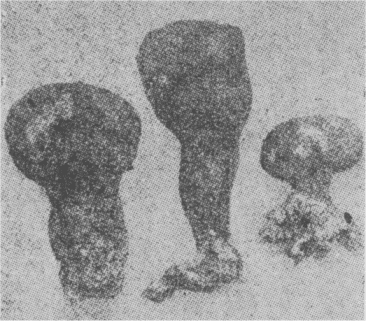
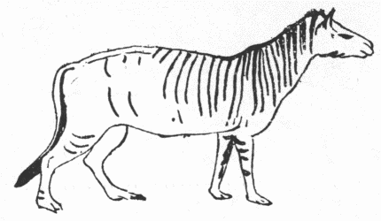
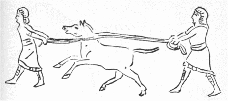
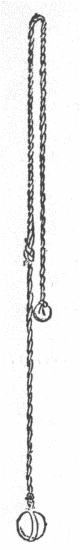
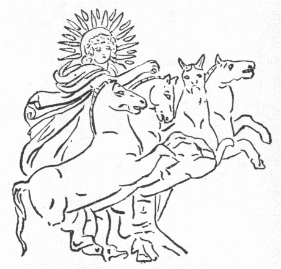
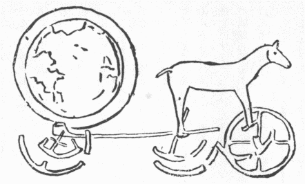

隙行く
駒の足早くて
午の歳を迎うる今日明日となった。誠や十二支に配られた動物輩いずれ優劣あるべきでないが、附き添うた伝説の多寡に著しい
逕庭あり。たとえば羊は今まで日本に多からぬもの故和製の羊譚はほとんど聞かず。
猴の話は東洋に少なからねど、欧州に産せぬから彼方の古伝が乏しい。これに反し馬はアジアと欧州の原産、その弟ともいうべき驢はアフリカが本元で、それから世界中大抵の処へ弘まったに因って、その話は算うるに
勝えぬほどあるが、馬を題に作った初唄
唱う芸妓や、春駒を舞わせて来る
物貰い同然、全国新聞雑誌の新年号が馬の話で読者を飽かすはず故、あり触れた和漢の故事を述べてまたその話かと言わるるを
虞れ、唐訳の律蔵より
尤も目出たい
智馬の譚を約説して祝辞に代え、それから
意馬の
奔るに任せ、
意い付き次第に雑言するとしよう。智馬の譚は現存パーリ文の『
仏本生譚』にも見えるが、唐訳律中のほど面白からぬようだ。
『根本説一切有部毘奈耶』にいわく、昔北方の
販馬商客五百馬を駆って中天竺へ往く途上、一の牝馬が智馬の種を
姙んだ。その日より他馬皆鳴かぬから病み付いた事と思いおった。さていよいよ駒を生んでより馬ども耳を垂れて
嚏噫にも声せず、商主かの牝馬飛んだものを生んでわが群馬を煩わすと
悪む事大方ならず、
毎もこれに乗り
好き食物を与えず。南に行きて中国境の一村に至ると夏雨の時節となった。雨を冒して旅すれば馬を害すればとて、その間滞留する内、村の人々各の手作りの奇物を彼に贈ったので、雨候過ぎて出立しようという時見送りに来た村人に、前日くれた品に応じてそれぞれ物を与えた。これは熊楠も旅行中しばしば経験ある事で、入りもせぬ物を多く持ち来てくれるは至って親切なようだが、その実盗人の昼寝で
宛込があるので、誠に返礼の心配が尋常でない。ところがその村に瓦師あり、先に
瓦器を商主に贈った。今彼去らんとすと聞き、その婦これに
告いて、君も見送りに往って礼物を貰うがよい、上げたのはわずかの物だが先方は憶え居るだろといった。瓦師そこで泥を円めて吉祥印を作り、持ち行きて商主に
訣れると、何故
遅く来たか、荷物は皆
去ってしまった、気は心というから、何か上げたいものと考えた末、かの新たに生まれた駒こそ災難の本なれ、これがよいと気付きこれでも
将ち
去かんかと問うた。瓦師どう
仕りまして、それを私方へ
将れ
往いたら瓦器が残らず踏み砕かれましょうと
辞む。
爾時かの駒
跪いて瓦師の双足を
舐ったので可愛くなり受け取って
牽き帰ると、自分の商売に敵するものを貰うて来たとてその妻小言を吐く事
夥し。それを聞いて駒また妻の双足を舐り跪くと妻も可愛く思う。駒は
起ちてあるいは固まりあるいはいまだ固まらぬ諸多の瓦器の間を行き
旋るに一つも損ぜず。珍しく気の付いた駒と妻が感じ居る。この時瓦師土を取りに出ると駒随い行き、その土を袋に満ててしまうを見て背を低くす。袋を載せると負うて宅へ
還る。因ってこれを留め
糠に
胡麻滓を
和ぜて飼い置いた。
その頃
婆羅尼斯の梵授王一の智馬を有したので他国
賓服した。しかるにその馬死んだと聞き他国より使来り、王今我国へ税を払え、払わずば城より外出を許さぬ、外出したら縛って
将れ行くという。王聞きて税を払わず外出せなんだ。時に販馬商人北方より馬多く
伴れ来た。王大臣に
告うたは、我智馬の力に由って勝ち来ったに、馬死んでより他に侮られ外出さえ出来ぬ、
何所かに智馬がないか捜して来いと。大臣
相馬人を伴れ、捜せど見当らず。かれこれする内かの牝馬を見て、相馬人これこそ智馬を生んだはずだといった。大臣馬主に問うて、その牝馬が産んだ駒は瓦師方にありと知り、人を使して車牛と換えんというも応ぜず、使は
空しく還る。智馬は畜類だが知識人に過ぎ、能く臨機応変しまた人と語る。今使去るを見て瓦師に
告えらく、我を終身こんな貧家に留め、糠滓を食わせ、土を負わすべからず、わが本分は
灌頂位を受けて百枚の
金蓋その身を
覆う
刹利大王をこそ負うべけれ、我食時には、
雕物した盆に蜜と
粳米を
和ぜて入れたのを食うべきだ、明日また使が来たらこう言いなさい、瓦師は物を
識らぬと侮って、智馬と知りながら知らぬ
真似して凡馬の値で買うとは
黠い、
誠欲しいなら一億金出すか、僕の右足で牽き来り得る限り袋に金を入れてくれるかと言うべしと教えた。翌日大臣相馬人を伴れて
掛合に来ると、瓦師馬の教えのままに答えたから評定すると、諸臣一同この瓦師は大力あるらしいから足で牽かせたら
莫大の金を取るだろう、いっそ一億金と定めるがよいと決議し王に
白し、王それだけの金を遣わして馬を得、
厩に入れて麦と草を与えると食わず。王さては病馬かと言うと、
掌馬人かの馬決して病まずと答え、厩へ往きて馬に
対い、汝は瓦師方にありて碌に食料をくれず骨と皮ばかりに
痩せて困苦労働したるに、今国王第一の御馬に昇進しながら何を憂えて物を食わぬかと問うた。馬答うらく、我足
迅く心
驍勇で衆人に
超えた智策あるは汝能く知る、しかるに愚人ら古法通りに我を待遇せぬ故活きいるつもりでないと。掌馬人これを聞いて王に勧め、古法通り智馬を遇せしめた。その法式は王城より三駅の間の道路を平らに治め、
幡と
蓋で美々しく飾り、王
親ら四種の兵隊を随えて智馬を迎え、赤銅の板を地に畳み上げて安置し、太子自ら千枝の金の蓋を

げその上を覆い、王の長女金と宝玉で飾った
払子で蚊や蠅を追い去り、国大夫人蜜を米に塗り金盤に盛り自ら
げ持ちて食わせ、第一の大臣は一番貧乏
鬮で親ら金の
箕を執りて智馬の糞を受けるのだ。王それでは馬を王以上に
崇めるので大いにわが威を
堕すと
惟うたが、智馬が自分方におらぬとさっぱり自分の威がなくなるから
詮方なく、なるほどこれまでの致し方は重々悪かった、過ぎた事は何ともならぬ、これから古法通りにしましょうと
詫び入りて、厩に赤銅板を
布き太子に蓋、王の長女に払子、大夫人に食物を奉ぜしめると、大臣も不承不承慎んで馬の糞を金箕で
承ける役を勤めたとあらば、定めて垂れ流しでもあるまじく、
蜀江の錦ででも
拭うたであろう。かく尊ばれて智馬満足し始めて食事した。
さて王が苑に遊ぼうと思い智馬を召すと、すなわち背を
偃くす。王これは背に病があるのかと問うに、御者答えて王の乗りやすいように背を偃くし居るという。王それに乗って河辺に至れば馬進まず。水を怖るるのかと問うに、尾が水を払うて王に懸るを恐ると答えた。
即てその尾を結び
金嚢に盛り、水を
渉って苑に至り遊ぶ事多日。
予てこの王を侮り外出したら縛りに往くと言い来った四遠の諸国、王が城を出で苑に
住まると聞き大兵を興し捉えに来る。王城へ還らんとする中途に、蓮花咲き満ちた大池ありて廻り遠い。しかるを智馬身軽く蓮花を踏んで真直ぐにそろそろ行きながら早く城に入り得たので敵は逃げ散ってしまった。王大いに喜び諸臣に
告えらく、もし能く灌頂刹帝大王の命を救う者あらば何を
酬うべきやと。諸臣さようの者には半国を与うべしと
白す。ところが畜生に、国を遣っても仕方がないから智馬を施主として大いに施行し、七日の間人民どもの欲しい物を好みの
任に与うべしと
勅諚で
無遮大会を催した。販馬商主これを見て、何の訳で大会を
作すやと問う。諸人答えて曰く、
爾々の地である人が一の駒を瓦師に遣った、それが希代の智馬と知れて王一億金もて瓦師より買い取ると、今度果して王の命を活かし、その謝恩のための大会じゃと。商主聞きおわって、どうやら自分が瓦師に遣った駒の事らしく思い、王の厩へ往きて見れば果してしかり。智馬商主に向い、貴公が
遥々将れて来た馬五百疋がいかほどに売れたか、我は一身を一億金に売って瓦師に報じたという。さては大変な馬成金に成り
損なったと落胆の余り気絶する。その面へ水を
灑いでやっと
蘇り、何と悔いても跡の祭と諦め、これというもわれ尊公を智馬と知らず
悪み虐げた報いですと、馬の足を捧げ申謝して去った。その商主は
侍縛迦太子、智馬は
周利槃特の前身だったから、現世にもこの太子が周利槃特を侮り
後懺謝するのだと、仏が説かれたそうじゃ。
梵授王が智馬を有する間は隣国皆服従し、智馬死すると聞いてたちまち
叛き去ったとは
信られがたいようだが、
前達て『太陽』へ出した「戦争に使われた動物」
てふ拙文中にも説いた通り、昔は
何地の人も迷信重畳しおり、したがって戦術軍略の多分は敵味方の迷信の利用法で占められ、祥瑞の卜占のという事兵書筆を絶えず。されば何がな非凡異常の物を伴れ行かば敵に勝つを得たので、近時とても
那翁三世が
鷲を馴らして将士の心を
攬ったり、米国南北戦争の際ウィスコンシンの第八聯隊が鷲を伴れ往きて奮闘し、勝利事果てその鷲をその州賓として養い、フィラデルフィアの建国百年祝賀大博覧会へも出して誇り、長命で終った遺体を保存して今も一種の敬意を表し居る。まして馬には時として人に優った特性あるのもあれば、弱腰な将士の百千人にずっと
勝れた軍功を建つるもあり。それに昔は人
毎に必ず畜生に
勝るてふ法権上の理解もなかった（ラカッサニュの『
動物罪過論』三五頁）。したがって人間勝りの殊勲ある馬を人以上に好遇し、甚だしきは敵味方ともこれを神と
視て、恐れ崇めたのだ。
馬に人勝りの特性ある事は後文に述べるとして、ここには少々馬を凡人以上に尊重した例を挙げんに、宋の姚興その馬を青獅子と名づけ、時に同飲してわれ汝と同力報国せんと語る。
後金兵来寇するに及び、所部四百騎もて十余戦せるも、大将王権はまず
遁れ、武将
戴皐は来り
援わず、興ついに馬とともに
討死せるを朝廷憫んで廟を建てた。それへ絶句を題する者あり、いわく、〈赤心国に許すは平時よりす、敵を見て躯を
捐ててさらに疑わず、権は忌み皐は庸にして皆遁走し、同時に難に死すは只青獅のみ〉と。いかにも感慨無量で折角飲んだ酒も
醒めて来るが、暫くするとまた飲みたくなりゃこそ酒屋が渡世が出来る理窟故ますます感心する。晋の司馬休、敵に殺さるべきを一向気付かず、その馬食事をやめて
鞍に注目するを見て乗り試むるとすなわち急に十里
奔り、後を見れば収兵至った、かくて難を免れた酬いにその馬に揚武と加号した。東漢の主劉旻、戦敗の節乗って助かった馬を自在将軍と称え、三品の料を食わせ厩を金銀で飾った。その他
哥舒翰がその馬
赤将軍の背に
朝章を加え、宋
徽宗がその馬に
竜驤将軍を賜うたなど支那にすこぶる例多いが、本邦にも義経
五位尉に成れた時かつて院より賜わった馬をも五位になす心で太夫黒と呼んだなど似た事だ。欧州にも、アレキサンダー王の愛馬ブケファルスは智勇超群で、平時は王の他の人をも乗せたが、盛装した時は王ならでは乗せず。テーベ攻めにこの馬傷ついたから王が他馬に乗ろうとすると承知せずに載せ続けたというほど故、その死後王これを祀りその墓の周りに町を立てブケファラと名づけた。ギリシアのオリンピヤの競争に
捷った三の牝馬は死後廟を立て葬られた。ローマ帝カリグラは愛馬インシタツスを神官とし
邸第と
僕隷を附け与えた。かかる例あれば梵授王の智馬の話も事実に拠ったものと見える。
さて智馬と同類ながら譚が大層誇大されたのが、仏経にしばしば出る馬宝の話だ。
転輪聖王世に出でて四天下を統一する時、七つの宝
自ずから現われその所有となる。七宝とはまず女宝とて、
膚艶に
辞潔く妙相
奇挺黒白短なく、肥痩所を得、才色双絶で志性金剛石ほど堅い上に、何でも夫の意の向うままになり、多く男子を産み、種姓劣らず、好んで善人を愛し、夫が余女と
娯しむ時も妬まぬ、この五つの徳あり。また多言せず、邪見せず、夫の不在に心を動かさぬ、三つの大勝あり。さて夫が死ねば同時に死んでしまうそうだから、後家にして他人へかかる美婦を取らるる心配も入らぬ重宝千万の女だ。それから珠宝、輪宝、象宝、馬宝、主兵宝、長者宝という順序だが、女宝の講釈ほどありがたからぬから一々弁ぜず、馬宝だけの説明を
為さんに、これは諸経に紺青色の馬というが、『大薩遮尼乾子受記経』にのみ白馬として居る。日に
閻浮提洲を三度
匝って疲れず王の
念うままになって
毎もその意に
称うという（『正法念処経』二、『法集経』一）。『修行本起経』に紺馬宝は珠の
鬣を具うとあるもこれだ。紺青色の馬はあり得べからぬようだが、これはもと欧亜諸国に広く行わるる白馬を尊ぶ風から出たらしい。白馬が尊ばるる理由は、多般だがその一を述べると、明の張芹の『備辺録』に、
兵部尚書斉泰の白馬極めて
駿し、
靖難の役この馬人の目に立つとて墨を塗って遁げたが、馬の汗で墨が
脱ちて露顕し捕われたとある通り、白馬は至って人眼を惹く。したがって軍中白馬を忌む。しかるにまた強いと定評ある輩がこれに乗ると、同じく敵の眼に付きやすくて戦わぬ内に退いてしまう。『英雄記』曰く、〈
公孫
辺警を聞くごとに、すなわち色を

くし気を作して、讎に赴くがごとし、かつて白馬に乗り、また白馬数十匹を
揀び、騎射の士を選ぶ、
号づけて白馬義従と
為す、以て左右翼と為して、
胡甚だこれを畏る〉。『常山紀談』に、勇士中村新兵衛、平生敵に識れ渡りいた
猩々緋の羽織と唐冠の
兜を人に与えて
後戦いに臨み、敵多く殺したが、これまで彼の羽織と兜を見れば戦わずに遁げた敵勢が、中村を認めずこれを殺してしまった。敵を殺すの多きを以て勝つにあらず、威を輝かし気を奪い勢いを
撓ますの理を
暁るべしと
出づ。この理に由って白馬は王者猛将の標識に
誂え向きの物ゆえ、いやしくも馬ある国には必ず白馬を尊ぶ。
『
礼記』に春を東郊に迎うるに青馬七疋を用いるの、孟春の月天子蒼竜（青い馬）に乗るなどとあり。わが朝またこれに
倣うて、正月七日二十一疋の白馬を引かれ、元の世祖は元日に一県ごとに八十一疋の白馬を
上らしめ、その総数十万疋を越えたという。
白馬節会の白馬を青馬と
訓ますを古く
不審しく思うた人少なからぬと見え、
平兼盛が「ふる雪に色もかはらて
曳くものを、たれ青馬と
名け
初けん」と詠んだ。しかるにその雪や白粉も、光線の工合で青く見えるから白を青と混じ呼んだらしい（「白馬節会について」参照）。さて高山雪上に映る物の影は紫に見える故、支那で濃紫色を雪青と名づく（一九〇六年二月二十二日の『ネーチュール』三六〇頁）。光線の工合でインド北方の雪山など紺青色に見えるはしばしば聞くところで、青と等しく紺青色も白と縁薄からねば、白馬の白を一層荘厳にせんとて紺青色の馬を想作したのだろう。タヴェルニェーなどの紀行に見ゆるは、インド人はしばしば象犀や馬を色々彩って壮観とする由。支那で
麒麟は五彩を具うなどいうもこんな事から起ったらしく、かかる異色の畜類を見てその人為に出るを
了らぬ人々は、必ず紺青色の馬も自然に存在すと信じたであろう。
仏典に載った馬譚を今一つ二つ挙げよう。『大荘厳経論』にいわく、ある国王多く好馬を養う。隣国王来り戦いしがその好馬多きを知り、とても勝てぬと諦め退去した。かの王
惟えらく、敵国既に退いた上は馬が何の役にも立たぬ、何か別に人の助けになる事をさせにゃならぬと。すなわち勅して諸馬群を分ちて人々に与え、常に
磨挽かしめた。その後多年経て隣国また来り侵す。すなわち馬どもを使うて戦わしむるに、馬は久しく磨挽きばかりに
慣れいたので、
旋り舞い行きあえて前進せず。
捶てば打つほどいよいよ廻り歩き、戦争の間に合わなんだと。知れ切った道理を述べた詰まらぬ話のようだが、わが邦近来何かにつけて、こんな遣り方が少ないらしくないから、二千五百年前のイソップに生まれ還った気になり、馬譚を仮りて諷し置く。それからラウズ訳『
仏本生譚』に、仏前生かつてビナレスの梵授王に輔相たり。王の性貪る。
悍馬を飼いて大栗と名づく。北国の商人五百馬を伴れ来る。従前馬商来れば輔相これに馬の価を問い答うるままに仕払って買い取るを常例とした。しかるに王この遣り方を悦ばず、他の官人をしてまず馬商に馬価を問わしめ、さて大栗を放ちてその馬を咬ましめ、
創つき弱った跡で価を減ぜしめた。商主困り切って輔相に話すと、輔相問う、汝の国許に大栗ほどの悍馬ありやと。馬商ちょうどその通りの悪馬ありて
強齶と名づくと答う。そんなら次回来る時それを伴れて来いと教えた。その通りに伴れて来たのを窓より見て王大栗を放たしむると、馬商も強齶を放った。
堅唾を呑んで見て居ると、二馬相逢いて
傾蓋旧のごとしという
塩梅に至って仲よく、互いに全身を
舐り合った。王怪しんで輔相に尋ねると、同じ性の鳥は群団して飛び、この二馬は一和して
住まる、これ
両ながら荒くて癖が悪く、
毎も
絆を咬み切る、罪を同じゅうし過ちを
斉しゅうする者は必ず仲がよいと答え、王を
諫め商主と協議して適当の馬価を償わしめたとある。これも根っから面白からぬ話だが、これに関して、いささか
面黒い事なきにしもあらず。皆人が知る通り、誰かが『徒然草』の好い注解本を
塙検校方へ持ち行きこの文は何に拠る、この句は何より
出づと、事細かに調べある様子を聞かすと、検校『徒然草』の作者自身はそれほど博く識って書いたでなかろうと笑った由。あたかも欧米に
沙翁学を事とする人多く、わずか三十七篇の沙翁の戯曲の一字一言をも
忽せにせず、飯を忘れ血を吐くまでその結構や由来を研究してやまず。
雁が飛べば
蝦蟆も飛びたがる。何の事とも分らぬなりに予も久しくこれに関して読み書きしおり、高名の人々から著述を送らるる事もあり。つらつら考うるに、かようの研究を幾ら続けたって三百年前に死んだ人が真実何と考え何に基づき何を欲してこの句かの語を筆したかは知るべからず。知り得るにしてからが何の益なし。だが古今東西情は兄弟なれば、かく博く雑多の事を取り入れて書いた物を、かくまで多くの学者が立ち替り入れ替り研究して出す物どもを読むは、取りも直さず古今東西の人情と世態の同異変遷を研究するに当るらしいので、相変らず遣り続け居る内には多少得るところなきにあらず。既に一昨年末アッケルマンてふ学者が『ロメオとジュリエ』の「一の火は他の火を滅す」なる語は、英国に
火傷した指を火を近づけて火毒を吸い出さしむる民俗あり、蝮に咬まれた処へその蝮の肉を
傅けて治すような
同感療法じゃ。また「日は火を消す」てふ諺もある。沙翁はこれらに基づいて
件の語を
捻り出したものだろう。このほかにしかるべき本拠らしいものあらば告げられよと同好の士に広く問うたが、
対うる者はなかったから予が答えたは、まず日月出でて
※火［＃「火＋嚼のつくり」、U+721D、326-10］息まずと支那でいうのが西洋の「日は火を消す」と
全反対で面白い。さて『桂林漫録』に
日本武尊駿河の国で
向火著けて
夷を滅ぼしたまいし事を記して、『花鳥余情』に火の付きたるに
此方よりまた火を付ければ向いの火は必ず消ゆるを向火という。そのごとく此方より腹を立て掛かれば人の腹は立ちやむものなりとあるを引き居る。今も熊野で山火事にわざと火を放って火を防ぐ法がある。予は沙翁がこれら日本の故事を聞き知ってかの語を作ったと思わぬが、同様の考案が万里を
距てた人の脳裏に
各の浮かみ出た証拠に
聢と立つであろうと。かく言い送って後考うると、仏説の悍馬は悍馬を鎮めた話もやや似て居るを一緒に言いやらなんだが遺憾だ。
英語で
蜻
を
竜蠅（ドラゴン・フライ）と呼び、地方によりこの虫馬を
螫すと信じてホールス・スチンガール（馬を螫すもの）と唱う。そは虻や蠅を
吃いに
馬厩に近づくを見て
謬り言うのだろう。さて竜蠅とは何の意味の名かしばしば学者連へ問い合せたが答えられず。『説郛』三一にある『戊辰雑抄』に、昔大竜大湖の

に
蛻ぎ、その鱗甲より虫出で
頃刻して蜻
の
朱きに
化る、人これを取れば
瘧を病む、それより朱蜻
を竜甲とも竜孫ともいい
敢えて
傷わずと載せたを見て、支那でもこの物を竜に縁ありとするだけは解り、その形体
威めしくやや竜に似て居るから竜より生じたという事と想いいた。その後一九一五年版ガスターの『
羅馬尼鳥獣譚』十四章を
覧るとこうあった。いわく、ルーマニア人は蜻
を魔の馬という、また多分竜の馬ともいうであろう、一名
聖ジョージの馬ともいいこの菩薩は毒竜退治で名高い、この名の起りを尋ぬるに、往古上帝常に魔と争うたが、上帝は平和好き故出来るだけ魔を寛宥してその乞うままに物を与えた、しかるに魔
悛めず物を乞い続けてやまず、上帝耐え兼ねて天人多く集め各々好馬を与えある朝早くこれに
騎りて魔と戦わしめた。聖ジョージは無類の美馬に乗って先陣したが、急にその馬退却し出し、他の諸馬これに倣うて各退却してその後の馬を衝いた。
爾時上帝高声で聖ジョージに、汝の馬は魔に魅された早く下りよと告げ、
聖しかる上はこの馬魔の所有物たれと言いて放ちやると、三歩行くや否やたちまち虫と
化って飛び去った、それからこの虫を魔の馬と名づく、蜻
の事だというと。ガスターこれを註していわく、このような伝説が西欧と英国にもあったに相違ない、そうなくては、竜の蠅てふ英語は何の訳か分らぬ、想うにこの神魔軍の物語に、以前は神軍より聖ジョージ、魔軍より毒竜進み出で大立廻りを演じ、両軍鳴りを鎮めて見物し竜ついに負けたてふ一節があって、その竜が蜻
と
化ったとか、聖ジョージの馬は翼あって飛び得たとかあったのが、いずれも忘れ落されしまったものかと。熊楠
惟うに、ルーマニア人も支那人と同じく蜻
の形を竜に似た者と見しより右様の
咄も出来たので、林子平が日本橋下の水が英海峡の水と通うと言ったごとく、従来誰も解せなんだ蜻
の英国名の起原が東欧の俗譚を調べて
甫めて
釈り、支那の俚伝がその傍証に立つ、これだから一国一地方の事ばかり究むるだけではその一国一地方の事を明らめ得ぬ。
昔オランダ国で何度修めても砂防工事の成らぬ所あり。その頃わが邦へ渡ったかの国人が、奥羽地方で
合歓木をかかる難地へ植えて砂防を完成すると聞き、帰国の上官へ告げて試むると果して竣功したという。この事業上の談同然に学問上にも西洋人に解らぬ事で、わが邦で解りやすいのが多くある。三十年ほど前フレザーが『
金椏篇』を著わして、その内に未開国民が、ある年期に達した女子を定時幽閉する習俗あるは、全く月経を
斎忌するに因ると説いたのを、当時学者も俗人も非常の発見らしく
讃め立てたが、実はわが邦人には見慣れ聞き慣れた事で、何の珍しくもない事だった。さほど知れ切った事でも黙っていては顕われず、空しく欧米人をして発見発見と鼻を高からしめ、その後に
瞠若たりでは詰まらぬ。こう言うとお手前拝見と来るに極まって居るから、我身に当った一例を
演べんに、沙翁の戯曲『マッチ・アズー・アバウト・ナッシング』のビートリース女の話中に出る『
百笑談』てふは逸書で世に現われなんだところが、一八一四年頃牧師コインビャーがふと買い入れた書籍の表紙をかの書の古紙で作りあるを見出し、解き
復して見ると損じ
亡われた頁も少なくなかったが、幸いにも一部ならで数部の同書を
潰し用いいたので、かれこれ対照してなるべく遺憾なくその文を収拾整復し得て大いに考古学者どもに裨益した。その『百笑談』の末段は、妻の腹に羊を画いた人の事とあって、その譚は、昔ロンドンの画工若き艶妻を持つ。用有りて旅するに
予て妻の心を疑うた故、その腹に一疋の羊を画き己が帰るまで消え失せぬよう注意せよといって出た。一年ほどして夫帰り羊の画を検して大いに驚き、予は角なき羊を画いたのに今この羊に二角生え居る。必定予の留守に不貞を行うたのだと
詰り懸ると、妻夫に向い短かくとまであって、上述ごとく一度潰し使われた本故、下文が欠けて居る。三十年ほど前読んだ、ラ・フォンテーンに、「荷鞍」と題した詩ありて、確か亭主が妻の身に驢を画いて出で帰り来って改めると、わが画いたのと
異ってその驢が荷鞍を負い居る。妻は一向気付かずに、何と妾の貞操はその驢が確かな証拠に立つでしょうというと、いかにも大立ちだ、悪魔が騎った証拠に鞍を負うて立つといったと詠みあったと憶える。十六世紀に成った『
上達方』第七章にもほぼ同様の譚を出し、これ婦女に会うと驢に鞍置くと称うる事の元なりと見ゆ。英国の弁護士で、
笑談学の大家たるリー氏先年『百笑談』の類話を
纂めたのを見ると、この型の話は伊、仏、独、英の諸邦にあれどいずれも十六世紀前に記されず。しかるにそれより三世紀早く既に東洋にあったは、『沙石集』を読んで知れる。その七巻に、遠州池田の庄官の妻甚だ妬む者、
磨粉に塩を合わせ夫に塗り、夫が娼に通うを験証せる由を述べ、次にある男他行に臨み妻に臥したる牛を描きしに、夫還りて改むれば起れる牛なり、怒って妻を
詰ると、哀れやめたまえ、臥せる牛は一生臥せるかといいければ、さもあらんとて許しつとあって、男の心は女より浅く
大様だと論じある。それより五百年ばかり後支那で出来た『笑林広記』に、類話二つを出し、一は蓮花を画き置くと、不在中に痕なく消え失せたり、夫大いに怒ると妻落ち着き払って、汝は不適当な物を画いた、蓮の下の蓮根は食える物ゆえ来る人ごとに掘り取り、蓮根枯れれば花が散るはずでないかとあり。今一つは、夫他行の際、左の番卒を画き置きしに、帰り来れば番卒右にあり、怒って妻を責むれば、永々の留守ゆえ左右の立番を振り替えたのだと弁じたとある。紀州で今も行わるる話には、夫が画いたは
勒附きの馬だったが、帰って見るに勒なし、妻を責むると馬も豆食う時勒を去らにゃならぬと遣り込められたという。この型の諸譚、一源より出たか数ヶ処別々に生じたか知らぬが、記録に存する最も古きは日本の物と見る。右は東京の蘭国公使館書記官ステッセル博士の請に任せ、一九一〇年発行『フラーゲン・エン・メデデーリンゲン』へ出した拙稿の大意である。
本邦で馬に関する伝説の
最広く分布しいる一つは
白米城の話であろう。『郷土研究』巻四と『日本及日本人』去る春季拡大号へ出した拙文に大概説き置いたから、なるべく重出を省いて
約やかに述べよう。建武中、飛騨の牛丸摂津守の居城敵兵に水の手を切られ苦しんだ時、白米で馬を洗い水多きように見せて敵を欺き
囲を解いて去らしめた。また応永二十二年、北畠満雅
阿射賀城に拠りしを足利方の大将土岐持益囲んで水の手を留めた節も、満雅計りて白米を馬に掛けて沢山な水で洗うと見せ敵を欺き
果せた。因って右の二城とも白米城と俗称す（『斐太後風土記』十一、『三国地誌』三九）。
而してこの通りの口碑を持つ古城跡が諸国に多くある。土佐の寺石正路君に教えられて『常山紀談』を見ると、柴田勝家居城の水の手を佐々木勢に断たれた時、佐々木平井甚助を城に入れてその容易を観せしめた。平井勝家に会うて
手水を請うに、
缸に水満ちて小姓二人
舁ぎ出し、平井洗手済んで残れる水を小姓庭へ棄てたので平井還って城内水多しと告げ、一同疑惑するところへ勝家撃ち出で
勝軍したと記す。城守には水が一番大切故、ない水をあるように見せる詐略は大いに研究されたるべくしたがって望遠鏡等なき世には白米で馬洗うて騙された実例も多かったろう。上に挙げた二雑誌の拙文には書かなんだが、『
大清一統志』九七に、山東省の米山は相伝う斉
桓公ここに土を積んで
虚糧と
為し、敵を
紿いたとあるを見て似た話と思い居る内、同書三〇六に雲南の尋甸州の西なる米花洗馬山は、往時土人拠り守るを攻めた漢兵が城内水なしと知った。土人すなわち
米花もて馬を洗う。漢兵さては水ありと疑うて敢えて
逼らなんだと書けるを見出し、支那にも白米城の話があると確知し得た。これに似た事は、一夜中に紙を
貼り詰めて営の白壁の速成を粧い、敵を驚かす謀計で、秀吉公は、美濃攻めにも小田原陣にもそうした由。しかるに『岐蘇考』に天正十二年山村良勝
妻籠に城守りした時、郷民徳川勢に通じて水の手を
塞ぎけるに、良勝白米もて馬を洗わせ、一夜中に紙で城壁を貼りて敵を欺いたと見るは一時に妙計二つを用い
中てたのだ。支那でも宋の
滕元発、一夕に席屋二千五百間を立てた話ありて、紙を白壁と見せたに酷似す。真田信仍が天王寺口で歩兵の槍で以て
伊達の騎馬で鉄砲に勝ちたるを
未曾有の事と持て囃すが、似た事もあって、南チリへ侵入したスペイン最上の将士を撃退して、二百年間独立を全うしたアウカインジアンは、同じく短兵もて西人の騎馬鉄砲に
克ちしを敵も歌に作って称讃した。これら似た話があるから、皆嘘また一つの他は嘘というように説く人もあるが、食い逃げの妙計、娼妓の手管、銀行員の
遣い込みから、勲八の手柄談、何度新紙で読んでも大抵似た事ばかりで、例の多いがかえってその事実たるを証明する。
支那の馬譚で最も名高きは、『淮南子』に出た人間万事かくの通りてふ
塞翁の馬物語であろう。これは支那特有と見えて、インドを初め諸他の国々に同似の譚あるを聞かぬ。また前年高木敏雄君から次の話が日本のほかにもありやと尋ねられ、四年間調べたが似たものもないようだから多分本邦特有でがなあろう。天文中書いたてふ『奇異雑談』に出た話で大略は、一婦人従者と旅するに
駄賃馬に乗る。馬の
口附来る事遅きを
詰れば馬に任せて往かれよという故、馬の往くままに進行すると、川の面六、七間なるに大木を
両つに割って橋とす。その木の本広さ三就ばかり末は至って細し。この橋高さ一丈余、下は岩石多く
聳えて流水深く、
徒で渡るも
眩うべし。馬この橋上を進むこと一間余にして留まる時、従者橋の細きを見て驚き、
後れ来る口附を招きて、馬に任せて行けといったからこの災難が起ったと怒りの余り斬らんとす。他の従者これを留め、この里に住む八十余の翁に就いて
謀を問う。さればとて新しき青草を
竿の先に縛り付け、馬の後足の間より足に触れぬよう前足の間へ挿し入れば、馬知りて草を
食む。一口食いて草を後へ二、三寸引き置かば馬もそれだけ後へ踏み戻してまた一口食む。また二、三寸引きて草を置くとまた踏み戻して食む。その草尽くる時その竿を収め、今一つの竿に草を附けてやらばまた踏み戻して食む。幾度もこうしてついに土上に戻る馬の口を取りて引き返し、
衆大いに悦び老人を賞賜したてふ事じゃ。予の現住地田辺町と同郡中ながら、予など二日歩いてわずかに達し得る
和深村大字里川辺の里伝に、
河童しばしば馬を岩崖等の上に追い往き、ちょうど右の談のような難儀に逢わせるという。
話変って『付法蔵因縁伝』にいわく、月氏国智臣
摩啅羅その王
 昵
昵
に、大王臣の教え通りせば四海を統一すべき間、何卒言を密にして臣の謀を洩らさぬようと願い、王承諾した。すなわちその謀を用いて三海皆臣属しければ王馬に乗りて遊び行く路上馬が足を折り
挫いた。王たちまち智臣の教えを忘れその馬に向い、我三海を征服せるも北海のみいまだ降らず、それを従えたら汝に乗らぬはず、それに先だって足を挫くとは不心得の至りと言った。それが群臣の耳に入ったので、多年兵を動かして人臣辛苦
息まざるにこの上北海を攻むるようではとても続かぬ故王を除くべしと同意し、
瘧を病むに乗じ
蒲団蒸にして
弑した。かかる暴君一生に九億人殺した者も、かつて
馬鳴菩薩の説法を聴いた縁に依って、大海中千頭の魚となり、不断首を
截られるとまた首が生え須臾の間に頸が大海に満つその苦しみ言うべからず。しかるに
 椎
椎の音聞える間は首斬れず苦痛少しく息むと告げたので、寺で木魚を打ち出したポコポコだそうな。誠に口は
禍の
本嗜んで見ても情なや、もの言わねば腹
膨るるなど理窟を付けて
喋りたきは四海同風と見えて、古ギリシアにもフリギア王ミダスの譚を伝えた。アポロ大神琴を弾じ羊神パンは笛を吹いてミにいずれが勝れると問うに羊神の笛勝れりと答えた。アポロ怒ってミの耳を驢の耳にし、ミこれを
慚じて常に高帽で隠しその一僕のみ主人の髪を
剪む折その驢耳なるを知った。由ってその由人に洩らすまじと慎んでも
怺え切れず。ついに地に穴掘って、モシモシミダス王の耳は驢馬同然ですと
囁き、その穴を埋めて心初めて落ち着いた。しかるに因果は恐ろしいもので、その穴跡より一本の
蘆生え、秋風の吹くにつけてもあなめ／＼と小町の
髑髏の眼穴に生えた
芒が
呻った向うを張って、不断ミ王驢耳を持つ由囁き散らし、その事
一汎に知れ渡った由。高木敏雄君また前年この譚の類話を求められた時、予が答えた二、三の話を挙ぐると、まず蒙古の譚に、ある王の耳金色で驢耳のごとく長きを世間へ知れぬように腐心し、毎夜一青年にその頭を
梳らしめ終ってすなわち殺した。その番に
中った賢い若者が王の理髪に上る時、母の乳と麦粉で作った餅を母に
貰って持ち行き王に
献る。王試み食うと
旨かったからこの青年に限って理髪が済んで殺さず。ただし王の耳については母にすら語るなからしめた。青年慎んで口を守れば守るほど言いたくなり、これを洩らさずば身が裂くるべく覚えた。母教えて広野に
之きて木か土の割け目へ囁けと言った。青年野に出て
栗鼠の穴に口当て、わが王は驢耳を持つと囁くを聞いた、その頃の動物は人言を解した故、人に話し、人伝えて王の耳に入り、王
瞋りて彼を殺さんとしたが、仔細を聞いて感悟し、彼を首相に任じた。青年首相となって一番に驢耳形の帽を創製して王の耳を隠したので、王も異様の耳を見らるる
虞なく大いに安楽になったという。キルギズ人の口碑には、アレキサンダー王の頭に二の角あるを臣民知らず。それが知れたら王死なねばならぬ。由って理髪人を召すごとに事済んで直ちに殺した。王地上の楽を極めてなお満足せず使者二人を遣わして、不死の水を捜さしめた。一日王理髪人を召したが、今度だけは殺さず、角の事を洩らさぬよう戒め置くと、理髪人命の惜しさに暫く黙しいたが、
耐えられなくなり、
窃かに井中へ囁き込むと、魚が聞いて触れ散らし角の噂が拡まったので王死んでしまい、二使人不死の水を持ち帰っても及ばず、共にこれを飲んで今に死なず、一人は人に
見えずに地上を周遊して善人を助け、一人は
純ら牛を護るという（グベルナチス伯とサルキンの説）。
上述の月氏国王が謀を馬に洩らして
弑に遭ったり、フリギアや蒙古の王の理髪人が穴に秘密を洩らしたりしたについて想い起すは、アラビヤ人が
屁を埋めた話で、これもその節高木君へ報じたが、その後これについて、政友会の重鎮岡崎邦輔氏が、大いに感服された珍談がある。人を
傭うて書き立ててもらおうにも銭がないから、
不躾ながら自筆で自慢譚とする。昔アラビヤのアブ・ハサンてふ者カウカバン市で商いし大いに富んだが、妻を
喪うて新たに
室女を
娶り大いに宴を張って多人を饗し、婦人連まず新婦に謁し次にアを
喚ぶ。新婦の房に入らんとて
恭しく座を起たんとし、一発高く屁を
放ってけり。衆客彼
慙じて自殺せん事を恐れ、相顧みてわざと大声で雑談し以て聞かざる真似した。しかるにア、心羞ずる事甚だしく新婦の房へ入らず、
厠に行くふりして庭に飛び下り、馬に乗って泣きながら走り出で、インドに渡り王の近衛兵の指揮官まで昇り、面白
可笑しく十年を過した。その時たちまち故郷を
懐うて死ぬべく覚えたので、王宮を脱走してアラビヤに帰り、名を変じ僧服し徒歩
艱苦してカウカバン市に近づき還った。ここを去って久しくなるが、今も誰か己の事を記憶し居るかしらと
惟うて、市の周辺を七昼夜潜み歩いて聞き行くうち、とある小家の戸口に坐った。家裏で小女の声して自分の年齢を問う様子。耳を
聳て聞きいると、母答えて汝はちょうどアブ・ハサンが屁を放った晩に生まれたと言うを聞きて、さてはわが放屁はここの人々が齢を紀する年号同然になりおり永劫忘らるべきにあらずと、大いに落胆して永く他国に
住まり終ったという。正確を以て聞えたニエビュールの『
亜喇比亜紀行』にも屁を放って国外へ逐われた例を挙げおり、一七三五年版ローラン・ダーヴィユーの『文集』巻三にも、二商人伴れ行くうち一人放屁せしを他の一人
瞋って殺さんとす。
放りし者ことごとくその財物を捧げて助命さる。他の一人この事洩らすまじと誓いしを忘れ言い散らし、放りし者
居堪らず脱走す。三十年経て故郷に還る途上その近処の川辺に
息む。たまたま水汲みに来た婦ども互いに齢を語るが耳に入る。一婦いわく、妾は某大官がコンスタンチノープルへ拘引された年生まれた。次のはいわく某大官
歿せし年と。第三婦言う雪多く降った年と。第四婦ここにおいて妾は某生が屁放った年生まれたと明言するのが自分の名だったから、その人これじゃとてもわが臭名は消ゆる期なしと悟り、直ちに他国に
遁れて三度と故郷を見なんだと載せ、また一アラビヤ人屁迫る事急なるより、天幕外遠隔の地へ駈け行き、小刀で地に穴掘り、その上に尻を
据え、尻と穴との間を土で詰め廻しとあるから、近年流行の
醋酸採りの窯を築くほどの大工事じゃ。さていよいよ
放り込むや否や直ちにその穴を土で埋め、かくて声も香も他に知れざりしを確かめ、やっと安心して帰ったとあって、この書世に出た頃大いに疑われたが、ニエビュールがその真実たるを証言した。
さきに『淮南子』の塞翁の馬の譚は支那特有のものらしいと述べ置いた。その後種々調べても支那外の国にかかる譚あるを見当てぬが、支那自身においては『淮南子』より三百年ほど前似たものが行われいた。それは『列子』の説符第八に、三代続いて仁義を行った宋人方の黒牛が白い
犢を生んだので、孔子に問うと吉祥と答えその犢もて神を祭らしめたが、ほどなくその人盲となった。その後その牛また白い犢を生み、孔子に問うと、相変らず吉祥と答えまた祭らしめると、一年してその人の子も盲となり、これでは孔子の予言も当てにならぬと思いいる内、楚軍宋を囲み宋人従軍して多く死す。しかるに彼の父子のみ
揃うて盲の故を以て徴兵を免れ、さて戦い済んで二人ながらたちまち眼が開いたから、前に不吉と
惟うた事も孔子が言った通り吉祥と知れたとあって、林希逸は〈この章塞翁馬を得て馬を失うと意同じ〉と評した。人間万事塞翁の馬という代りに、宋人の牛といっても可なりだ。漢の王充の『論衡』六にもこの話出づ。これから屁の話の続きだ。
ローラン・ダーヴィユーまた述べたは、かつてアラビヤのある港で、一水夫が灰一俵

ぐるとて一つ取り
外すと、聴衆一同無上の不浄に汚されたごとく争うて海に入るを
睹た。またアラビヤ人集まった処で一人ローランに仏人能く屁を
怺えるの徳ありやと問うた。無理に怺えてはすこぶる身を害すれど、
放って人に聞かしむるを極めて無礼とす、しかしそれがため終身醜名を負うような事なしと答うると、
斉しく一同逃げ去った。問いを発した本人は暫く茫然自失の様子、さて一語を出さず突然起って奔りおわり爾後見た事なしと。ロ氏のこの談で察すると、当時仏人は音さえ立てずば放って悔いなんだらしい。いかさま屁の事は臭きより後にする道理で、予はこの方とんと不得手故詳しく調べ置かなんだが、ロ氏に後るるおよそ百年ジュフールの説に、古ローマ人は盛礼と祭典の集会においてのみ屁を制禁したが、その他の場所また殊に食時これを放るを少しも咎めず、ただしアプレウスの書に
無花果の一種能く屁放らしむるを婦女避けて食わずとあれば、婦女はなるべく
扣え慎んだらしいとあって、古ローマ人は放屁に関して吾輩と全く別の考えを
懐いたのだと断じ居る。されば他事はともあれ、屁の慎みは今の欧人が昔よりも改進したのだ。予が学び知るところまた自ら経験せるところを以てすれば、屁とか

とかいうものはこれを
恣まにすれば所を嫌わず続出し、これを忍べば習い性となって決して
暴かに出て来るものでない。故アーネスト・ハートなどは、人と語る中ややもすれば句切り同然に放っていたが、それは廉将軍の三遺失に等しく、
甚く
耄れたのだ。今日満足な欧人で音さえ立てずば放捨御免など主唱する者なく、上流また真面目な人はその話さえせぬ。
却説一昨年岡崎邦輔君の紹介である人が予に尋ねられたは、何とかいう鉄道は鬼門に向いて敷設され居るとて一向乗客少ない。鬼門など全く開けた世に言うべき事でない理由を弁じて衆妄を排し、かの鉄道の繁栄する方法がありそうなものというような事だった。因って予岡崎君に返事した大要は、マックズーガル説に、人間は訳が判ったからって物を怖れぬに限らぬ。自分は動物園の鉄圏堅くてなかなか猛獣が出で来るべきにあらずと知悉すれど、虎がこっちへ飛び掛りて咆ゆるごとに怖ろしくてわが身の寒きを覚えるを制し得なんだ事ありとあったと記憶する。それと等しく鬼門の
祟りなど凡衆にとって有無ともに確証を認めぬながら、君子は有るを
慮り無しを慮らず、用心に越した事なしてふ了簡がほとんど天性となり居るところへ以て、蘇張の弁でその妄を説いたって容易に利く事でなかろう。かつそれ風を移し俗を
易えるは社会の上層から始め、下これに倣うてようやく事成る。しかるにわずか数年前横浜の外字新聞にわが国貴勝の隠れさせたまえる時刻に真仮の二様あったとて、かかる国民に何の史実何の誠意を期待し得べきと手酷く難詰しあったそうで、その訳文を京阪の諸紙で見た。
陰陽道で日や時の吉凶を詳しく穿議した古風を沿襲しての事と存ずるが、この世を去るに吉日も凶時もあるものかという外人の理窟ももっともだ。が
上つ
方においては例の有るを慮り無しを慮らざる用心から、依然旧慣に
循わるるのであろう。その可否のごときは吾輩賤人の議すべきでないが、社会の上層既にかかる因襲を廃せぬに、下層凡俗それ相応に鬼門の忌を墨守するを、吾輩何と雑言したりとて破り
撤てしめ得らりょうぞ。さてついでに申し置くは壮時随分諸邦を歩いた時の事と
思し召せ。ある邦の元首大漸の公報に、その詳細を極めんとの用意が過ぎて、下気出る時の様子までも載せあった。昔は帝堯が己に譲位すべしと聞いて
潁川に耳を洗うた変物あり、近くは屁を聞いて海に入り、屁を聞かせじと砂に
賺し込む頑民あり、さまでになくとも高貴の方の下気など誰一人あるべき事と期待もせねば、聴きたがりもせず。それを公報に載せて職に尽くせしと誇るは、羊を
攘んだ父を訴えた
直躬者同然だ。かかる無用の事を聞かせて異種殊俗の民に侮慢の念を生ぜしめ、
鼎の軽重を問わるるの緒を
啓いた例少なからず。かく言うものの、
賺し屁の
放り元同然日本における屁の故事を
詳らかにせねど、天正十三年千葉新介が小姓に弑せられたは屁を咎めしに由り、
風来の書いた物に遊女が放屁を恥じて自殺せんとするを、通人ども堅く口外せぬと誓書を与えて止めたと見れば、大昔から日本人は古ローマ人のごとく屁を寛仮せず、海に入り砂に埋むるまでなくとも、むしろアラビヤ人流に厳しく忌んだらしい。これすなわち本邦固有の美風だから、吉凶にかかわって日時を
転るの旧慣を絶つとも、下気は泄出の様子までも公報する外国風を採るなどの事なきを望むと、かく答えた予の
書牘を読んで、誠に万事西洋模倣の今日よいところへ気が付かれたと、昨春田辺へ来られた節
親り挨拶あり。それも決して
座成的のものでないと見え、
何処とかへ代議士が集った席でも話出て感心しきりだったと、中村啓次郎氏から承った。三十年ほど前予米国にあって、同類の学生を催し飲酒度なく、これを非難せしとて岡崎氏等を悪口してやまなんだが、氏の寛懐なる、二十一年来この片田舎に魚蝦を友とし居る予を問われたが
嬉しさに、覚えずかく長く書いたのだ。その頃故エドウィン・アーノルドが東京に来寓し、種々筆した内に「初め冗談中頃義理よ、今じゃ互いの実と実」てふ
都々逸を賞めて訳出した。その鑑識に驚いて予が小沢という人に話し、小沢また岡崎氏に向って受け売りすると、恋愛の実境はそんな言では
悉し得ない、すべて少年は
縹緻を重んじ中年は意気を
尚ぶ、その半老以後に及んではその事疎にして情
転た
熾んに、日暮れ道遠しの事多し、ただ
身分の健否を問うのみと言われた由。この語
洵に神に通ずで、人間のみかは畜類について察するも、齢の加わるに随って心情の移り変るかくのごとき例甚だ多し。その移り変るを上進と見んか堕落と言わんかちょっと分りにくいが、邦俗
二十の後家は立ちて、三十の後家は立たぬといい、若くて清貞の聞え高く老後汚名を流せし者諸国の史筆を絶たぬは、皆岡崎氏の説通りの訳に基づくらしく、在英中高名のある学者に語ると、日本にも偉い人がある、今日欧州で婦女の徳行を論ずる者も、大抵その通りの標準に拠って酌量を加えいるが、いまだ岡崎氏ごとく手短く定則的に確言した者あるを聞かぬと感心された。三十二、三でかく観察力に富みいた岡崎氏が、政治の代りに学問に懸り続けられたなら、一方ならずわが邦の学術を進めたはずだ。かの学者は著書すこぶる多いが居常至って多忙で、予が一々所拠を明らかにして告げた事も多くは予の言として記しある。大戦争始まってより音信ないが、もしその書中に右の岡崎氏の言を予の言のごとく書きあったなら、見る人予は単に氏の言を吹聴したに過ぎぬと知られよ。
屁が済んだから今度は馬の糞の話としよう。糞
成金になり得るかも知れぬからしっかり読むべし。『大清一統志』二二二に、湖南の金牛岡は昔赤牛江を渡り糞するを見ると金だったので、
蹤跡け行くとここに至って見えず、その地を掘って金を求めた跡が現存すといい、二四〇巻には秦の恵王蜀を伐たんとて石の牛五頭を作り、毎朝金をその後に落し牛が金を便するという、蜀人悦んでこれを乞い迎え入れた、その時作った石牛道、すなわち剣閣道から伐ち入って蜀を滅ぼしたとある。田九郎というもの、三日に一度必ず金を糞ともにする馬とて兄をあざむき、五十金に売りし事『
醒睡笑』一に出づ。
欧州には畜類が金の糞した話が多い。例せばクレーンの『
伊太利俚譚』に、貧しい児が叔父に小さき驢を貰う、その下に風呂敷さえ拡ぐれば、銭を便して満てる。それを率きて行き暮れて旅亭に宿り驢と同室に臥すを怪しみ亭主が覗くと、銭多く出す様子、因って一分一体
異らぬ他の驢をかの児の眠った間に、金の糞する驢と
掏り替えた。翌朝出で立ちて、途中で始めて気付き、引き還して亭主を責めたが応ぜず。叔父を
訪うて泣き付くと、広げさえすれば飲食思いのままに備わる机懸けをくれる。それを持ってまた同じ旅亭に宿り、前のごとく掏り替えられ、叔父に泣き付くと、仏の顔も三度と
呟きながら、今度は打てと命ずれば
他を打ち続け、
止めと命ずれば止む杖をくれる。それを携えて例の旅亭に宿る。亭主その杖美しく柄が金作りなるを見、夜その室に入って
窃みに掛かるを待ち受けいたかの児小声で打て打てと呼ぶと、杖たちまち
跳り出て
烈しく亭主を打ち、勢い余って鏡、椅子、
硝子窓以下粉砕せざるなく、助けに駈け付けた人々も皆打たれたので、亭主盗み置いた小驢と机懸けを返してようやく
免され、かの児は
件の三物をもって家に帰り母と安楽に富み暮した、目出たし目出たしとある。
『フォークロール・ジョーナル』巻四に、支那人の起原について蒙古人が伝えた珍譚を載す。いわく、貧士あり路上で二人が羊眼大の玉を争うを見、その玉を渡せ、われそれを持ちて走るに、まず追い著いた者玉の持ち主たるべしといい、玉を受け取りて直ちに
嚥み下し隠れ去った。それより他邦に
之きて一老人の養子となる。この養子
唾はくごとに金を吐く、老人その金を国王に呈し、王女を養子に
妻さんと願う。王ともかく本人をとて召し見ると、かの男王の前で金を吐く、王女馬の腹帯もて彼を縛り塩水を呑ませ
鞭うつと玉を吐くを、王女拾い嚥みおわる。男は老人方に還り、驢の鞍と
※［＃「革＋巴」、U+9776、344-9］を造り往きて白樹下に坐す。彼貧なりし時この樹下に眠り、夢に不思議な呪言を感得しいた。かくと知らぬ王女は玉を嚥んで懐妊し、処女二十人伴れてこの樹下へ遊びに来り、かの男呪を唱えて王女を驢に化し、鞍と※
［＃「革＋巴」、U+9776、344-11］を付けて一月間
騎り
行くと、驢疲れて進む能わず。因って徒歩して一都城に到り、僧となる。跡に残った驢は
 生
生の男児を生み、その子孫皆
で金銀茶布を有し、
毎も富み、その後胤殖えて支那人となったと。かかる話は蒙古等の民が
甚く
鮓答を尊ぶから生じたであろう。鮓答は胡語ジャダーの音訳で、今日もアルタイ地方に
鮓答師てふ術士あり。能くこの石を用いて天気を制す。この石不断風強く吹く狭き山谷にあり。人能く一切の所有物を棄て始めて手に入れ得、故にこの石を使う者は孤寒素貧かつ無妻という（一九一四年版チャプリカの『
西伯利原住人』二〇〇頁）。
突厥や蒙古の軍にしばしば
鮓答師が顕用された例は、ユールの『マルコ・ポロの書』一版一巻六一章に
出づ。胡元朝の遺民
陶宗儀の『輟耕録』四に、往々蒙古人雨を
祷るを見るに、支那の方士が旗剣符訣等を用うると異なり、ただ石子数枚を浄水に浸し呪を
持て石子を
淘玩すと、やや久しくして雨ふる、その石を鮓答といい、諸獣の腹にあれど、牛馬に生ずるのが最も妙だと見ゆ。日本で馬糞石など俗称し、稀に馬糞中に見出す物で予も数個持ち居る。『松屋筆記』に引ける『蓬

日録』に、〈およそ兵事を達するには、急に能く風雨を致し、囲を突きて走り、けだし
赭丹を
有って身に
随く、赭丹は馬腹中に産するところの物、これを用いて念呪すなわち風雨を致す〉と載せた赭丹も、蒙古名シャダーの音訳だ。『兎園小説』に、死んだ馬が侠客の夢に現われてその屍の埋葬を頼み、礼として骸中の玉を与えた由、馬琴が筆しある。何に致せ天下分け目の大戦さえ鮓答で決せらると信ぜられ、一二〇二年ナイマン部等の大聯合軍が
成吉思およびアウン汗と戦う時、アウン汗の子、霧雪を興してこれを破ったもこの石子の神効に由るというほど故、これを手に入れんとて一切の所有物を棄てても十分引き合うべく、非常に高価な物だったらしい。鮓答また薬として近古まで高価だったは、タヴェルニエーの『印度紀行』巻二で判る。また畜類の糞は古来種々に
用達てられた。十九世紀に
最早くラッサに入りて高名したウクの説に、蒙古人好く畜の糞を類別して適宜応用を誤らず、羊糞を焼かば高熱を生ずる故
冶金に用い、牛糞の火は熱急ならぬ故肉を
炙るに使うと、前述驢様の長耳を持ったフリギア王ミダスは貪慾で自分の糞を金に変えたと伝えられ、ローマ帝ヴェスパシャヌスは公事に
鉅万を費やすを惜しまなんだが、
内帑を殖やすに熱心してその馬の糞を売り、太子チッスの
諫めに逢って馬糞売って得た金は
悪しく臭うか
嗅いで見よと言った。かく
畜の糞から高値な鮓答を得もすれば、糞それ自身が随分金と替えられ得たから、それを大層に
訛称して金を糞に出す驢牛等の譚も出来たのだ。アストレイの『
西蔵記』に、大
喇嘛の糞尿を信徒に世話しやりて多く利を得る喇嘛僧の事を載す、蒙古人その糞の粉を小袋に入れ頸に掛け、その
尿を食物に
滴して用うれば万病を除くと信じ、天主僧ジャービョン西
韃靼に使した時、大喇嘛の使者かようの粉一袋を清帝に献ぜんと申し出て拒まれた由。これらは無上に高値な糞であろう。わが邦でも古く陣中に馬糞を
薪にし、また馬糞汁もて手負いを療じた（『
雑兵物語』下）。したがって馬糞を金ほど重んじた場合もあったものか。羽黒山の社の前後に
賽銭砂礫のごとく充満し、参詣人の
草履に
著く故、下山に先だちことごとく払い落す。強慾な輩、そのまま家へ持ち帰れば皆馬糞に
化るという（『東洋口碑大全』七六二頁）。
韓退之がいわゆる、
牛溲馬勃、ともに収め並びに
蓄うで、良医が用うれば馬糞も大功を奏し、不心得な奴が持てば金銭も馬糞同然だ。退之の
件の語中の馬勃は牛の小便に対して馬の糞を
指したんだが、『本草』に掲げた馬勃は馬糞に似た胆子菌リコベルドン、スクレロデルマ等諸属、邦俗チリタケ、ホコリタケなど呼ぶ物に当る（『本草図譜』三五巻末図見るべし）。第一図に示すはこれらに近縁あるポリサックム属の二種、いずれも田辺で採った。
瞥見にはこれも馬の糞
生写しな菌である。今までおよそ二十種ばかり記載された事と思うが、予が知り及んだところ濠州に
最多種あり、三十年ほど前欧州に四種、米国に二種、そのフロリダ州では予が初めて見出したらしく、今もその品を蔵し先年来訪されたスウィングル氏にも見せた。本邦では十八年前予英国より帰著の翌朝、泉州谷川で初めて見出し、爾後紀州諸郡殊に温かな海浜の砂中に多く、従来西人の記載に随えば少なくとも三種は日本にありと知ったが、自分永年の観察を以てすればこの三種は確乎たる別種でなく、どうもポリサックム・ピソカルピウムてふ一種の三態たるに過ぎぬごとし。因ってこの一つの名もて、白井博士に報じ、その近出に係る『訂正増補日本菌類目録』四八五頁に録された。さてこの菌は、米国植物興産局の当事者たるスウィングル氏（予と同時にフロリダにあって研究した人）も近年予に聞くまで気付かなんだらしいが、予は三十年前から気が付きおり、染料として効果著しきもので、貧民どもに教えて、見るに随って集め蓄えしめたら大いに生産の一助となる事と思う。ただし予も今に余暇ごとに研究を続けおり、これより外に一言も洩らさぬ故、例の三銭の切手一枚封じ越したり、カステラ一箱持って
遥々錦城館のお富（この艶婦の事は、昨年四月一日の『日本及日本人』に出でおり艦長などがわざわざ面を見に来るとて当人鼻高し）を介して尋ね来りしたってだめだと述べ切って置く。欧米の人はかかる事をちょっと聞いたきり雀で、
諄々枝葉の子細を問わず、
力めて自ら研究してその説の真偽を明らめ、偽と知れたらすなわちやむ。もしいささかも採るべきありと見れば、他の工夫処方の
如何を顧みず、奮うて自家独見の発明に従事する。前日ス氏来訪された時、予が従来与えた書信をことごとく写真して番号を打ち携えいた。その言
寡なくて注意の深き、感歎のほかなし。今のわが邦人の多くはこれに反し、自分に何たる精誠も熱心もなきに、水の分量から薬の手加減まで解りもせぬ事を
根問いして、半信半疑で鼻唄半分取り懸るから到底物にならぬ。

第１図 ポリサックム菌二種
予がこの菌を染料にと思い立ったは、フロリダで支那人の牛肉店に見世番を勤めていた時の事で、決して書籍で
他様の
智慧を借りたのでないが、万事について、書籍を
楯に取る日本の学者が、自分の卑劣根性より
法螺などと推量さるるも面白からぬから、その後知るに及んだ一八五七年版バークレイの『
隠花植物学入門』三四五頁に、ポリサックムは黄色の染料を出しイタリアで多く用いらる。一八八三年四版グリフィスとヘンフレイの『
顕微鏡学字彙』六二三頁に、英国にただ一種
甚罕に生ず、外国にはその一種を染料とすとあると述べ置く。ただし予が知るところ、邦産は三種にせよ三態にせよ、いずれも
均しく役に立つ。初夏から初冬まで海より遠からぬ丘陵また殊に
沙浜に少なからず、注意せば随分多く集まる物と思う。黄土や
無名異に似て見えるから鉄を含んだ物と判る。鉄をいったついでに今一つ国益になる事を教えつかわす。
往年東牟婁郡の某々の村を通り、家々の様子を見ると何となく昔見た東国諸駅の妓家に似おった。因って聞き合すと、以前この二村の娘年頃になると皆特種の勤めを稼ぎ父兄を
資け、遠近これを
讃えて善くその勤めを成した娘を争い
娶ったが、維新以後その俗
廃れ家のみ昔の構造のまま残るといった。古戦場を弔うような感想を生じてその一軒に入り、
中食を求め数多き一間に入って食いながら
床間を見ると、鉄砂で黒く塗りいる。他の諸室を
歴巡るに皆同様なり。それから事に託して他の一、二家に入って見るとやはりかくのごとし。この砂は何地の砂かと聞いたが、
耄叟や婦女子ばかりで何だか分らず、こんな地へ遠国より古くかかる物を持ち来るはずなければ、必ずこの地に多く鉄砂を産する事と考えた。その後勝浦から海伝いに浜の宮まで川口を横ぎり歩いて海藻を調べたところ、下駄の跡が潮に
淘るる鉄砂で黒く二の字を画く処あり。浜の宮には鉄砂の中へ稲を
種えたよう見えた田もあった。因ってかつて見た妓家どもの壁は
純らこの辺の鉄砂で塗られたものと断じた。
予は鉱物学を廃して三十七年になり、
件の海辺へは十四年も往かぬから右のほかに一辞を添ゆる事がならぬが、『和歌山県誌』など近く成った物に、一切紀州に鉄砂ある由を記さない。して見ると予ほどこの事を知った者が只今多からぬと疑う。鉄は金銀と異なり、わずかな分量では利得にならぬと聞いたが、
頃日米国禁鉄となってから、一粒の鉄砂も
麁末にならぬような話を承る、ふとした事から多大の国益が拡がった例多ければ、妓家の黒壁が邦家の慶事を
啓かぬにも限らぬと存じ、本誌紙面を
藉りてその筋の注意を
惹き置く。
この類の事まだ夥しくあるが、今度はこれで打ち切りとして、もし私人がこの文を読むに起因して大儲けをしたら、お富も三十七まで仲居奉公に飽きてこの上娘が承知せぬというから、なるべく大金を
餽って片付けやってくれ。また政府が予の発見発言の功を認むるの日が幸いにあったなら、勲章の何のと下さるに及ばず、海外多数の
碩学名士が
毎も同情せらるる予の微力を以て老いの既に至れるを知らず、ややもすれば眠食を廃して苦心する研究に大
妨碍を加うる和歌山県の官公吏を
戒飭して、彼輩衣食のために無益の事を
繁く興し、あるいは奸民と結託し、あるいは謄記料を撤免してまでも、日本国光の一大要素たる古社神林を棄市
凌遅同然の惨刑に処し、その山を赭にしその海を
蕩し、世界希覯の多種の貴重生物をして身を
竄し胤を留むるに処なからしめて、良好の結果を得たりなど虚偽の報告を
上りて揚々たるを厳制されたしと
啓す。もっとも海外に限らず
海内にも多少の同情を寄せらるる人少なからぬが、その多くは官吏で飯の懸念から十分に加勢もしてくれず。かつて大阪府の薄給官吏が血書してこの意を述べ、空しく予の志を
怜れむと匿名書を贈られたが最上の出来じゃ。また甚だしきは当路に
媚びたり、浅薄なる外来宣教師に
佞したり、予を悪口
嘲弄する奴もある。昔
織田右馬助人の
賄を再三取った時信長が「銭ぐつわはめられたるか右馬助、人畜生とこれを
云ふらむ」と詠み送った。
銭勒の利かぬような者は難いかな今の世に免れん事をと歎息し、智馬をして空しく無識の
販馬商の鞍下に
羸死せしめぬよう
冀望を述べてこの章を終結する。
馬、梵名アス、ヌアスワ、またヒヤ、ペルシア名アスプ、スウェーデンでハスト、露国でロシャド、ポーランドでコン、トルコでスック、ヘブリウでスス、アラブでヒサーン、スペインでカバヨ、イタリアとポルトガルでカヴァヨ、ビルマでソン、インドでゴラ（ヒンズ語）、グラム（テルグ語）、クドリ（タミル語）、オランダでパールト、ウェールスでセフル、かく種々の名は定めて種々の訳で付けられ、中には馬の鳴き声、足音を
擬て名としたのもあるべきがちょっと分らぬ。支那で馬と書くは象形字と知れ切って居るが、その音は嘶声を
擬たものと解くほかなかろう。『下学集』に
胡馬の二字でウマなるを、日本で馬一字を
胡馬というは無理に似たり、〈馬多く北胡に
出づ、故に胡馬というなり〉と説いたが、物茂卿が、
梅をウメ
馬をウマというは皆音なりというた方が至当で、ウは発音の便宜上加えられたんだろ。
故マクス・ミュラー説に、
鸚鵡すら見るに随って雄鶏また雌鶏の声を擬し、自ら見るところの何物たるを人に
報す。それと等しく蛮民は妙に動物の鳴音を
擬る故、馬の嘶声を擬れば馬を名ざすに事足りたはずだが、それはほんの物真似で言語というに足らぬ。われわれアリヤ種の言語はそんな下等なものでなく、馬を名ざすにもその声を
擬ず。アリヤ種の祖先が馬を名ざすに、そのもっとも著しい性質としてその足の疾き事を採用した。梵語アース（迅速）、ギリシア語のアコケー（
尖頂）、ラテンのアクス（
鍼）、アケル（迅速また鋭利また明察）、英語アキュート（鋭利）等から
煎じ詰めて、これら諸語種の根源だったアリヤ語に鋭利また迅速を意味するアスてふ
詞あったと知る。そのアスがアスヴァ（走るものの義）、すなわち馬の梵名、リチュアニア語のアスズウア（牝馬）、ラテンのエクヴス、ギリシアのヒッコス、古サクソンのエツ（いずれも馬）等を生じたとある（一八八二年版『
言語学講義』巻二）。ミュラーは独人で英国に帰化し、英人の
勝れた分子は皆独人と血を分けた者に限り、英独人が世界でいっち
豪いように説き、またしきりに古インドの文明を称揚して、インド人を英国に懐柔して大功あった。そのインド人が昨今ややもすれば英国を嫌い、英国の学者までもドイツ人を
匈奴の
裔と
罵り、その身に特異の悪臭あり全く英人と別種なるよう触れ散らすを見ては、学説の転変猫の眼も
呆れるべく、アリア種の馬の名が、一番高尚とかいう説も、礼物の高い御札で、手軽く受けられぬ。
精しい古語彙が眼前にないから確言は出来ぬが、独語にプファールデン（
嘶く）てふ動詞があったと
憶う。果してしからばミュラーがアリヤ種で一番偉いように言った独語のプファールト、蘭語のパールト、いずれも支那の
馬また恐らくはアラブのヒサーン同様、嘶声を採って馬の名としたのでなかろうか。わが邦の腰抜け学者輩が予がかかる言を吐くを聞いては、人もあろうに博言学の開山ミュラー先生を難ずると、それはそれはと大不敬罪でも犯したように
譏るじゃろうが、孟子の曰く、大人に説くにすなわちこれを
藐じその魏々然たるを
視るなかれと、予は三十歳ならぬ内に、蘭国挙げて許した支那学の大親方グスタウ・シュレッケルと学論して黄色な水を吐かせ、手筆の屈伏状を取って今に日本の誇りと保存し居るほど故、ミュラーの幽霊ぐらい馬糞とも思わぬ。これほどの英気あらばこそ錦城館のお富に
惚れられるのだと
自惚れ置く。それからダニール・ウィルソンいわく、新世界へ欧人移り入りて旧世界でかつて見ざる格別の異物を
睹た時、その鳴き声を
擬て名を付けた例多し。アイ（獣の名）、カラカラ、ホイプールウィル、キタワケ（いずれも鳥の名）等のごとし。しかるに新世界にあり来ったインジヤンはこれと反対に、欧人将来の諸動物をその性質動作等に拠って名づけた。例せば馬のチェロキー名サウクイリ（小荷駄運び）、デラウェヤ名ナナヤンゲス（背負い運び獣）、チペワ名パイバイジコグンジ（一蹄獣）、またダコタ人は従前物を負う畜ただ犬のみあったから、馬をスンカワカン（霊犬すなわち不思議に荷を負う畜）と呼ぶがごとし（一八六二年版『有史前の
人』一巻七二頁）。これ後世までもアリヤ種の言語かえって動物の声を
擬て名とする事盛んに、いわゆる劣等種たる銅色人が初めて馬を見て名を付くるに、専らその性質に拠り決してその声を
擬なんだ確証で、かかる反証が少なくとも二十年前に出でいたを知らぬ顔で、何がなアリヤ種を持ち上げんと勝手な言のみ吐いたミュラーは、時代
後れに今日までもわが邦一派の学者が尊敬するほど真面目な人物でなかったと知る。バートンはアラビヤに馬に関する名目多いと述べたが、支那人も古くから随分馬に注意したは、『爾雅』を始め字書類を見て判る。前足皆白い馬を

、後足皆白きを
※［＃「栩のつくり＋句」、U+7FD1、354-8］、前右足白きは啓、前左足白きは
※［＃「足へん＋奇」、U+8E26、354-8］、後右足白きは
驤、後左足白きは
※［＃「馬／廾」、U+99B5、354-8］などなかなか小むつかしく分別命名しある。わが邦も毛色もて馬を呼ぶに雑多の称あり。古来苦辛してこれを漢名に当てたは『古今要覧稿』巻五一五から五二四までに見ゆ。とばかりでは面白うないから、何か珍説を申そう。
三年前、南洋の各地を視察した長谷部博士の説に、トルク島人闘う時
対手やその近親の陰部に関し聴くに堪えぬ言を闘わし、マーシャル島人また仇敵の母の陰部を悪口する由（『人類学雑誌』三十巻七号二七八頁）。『根本説一切有部毘奈耶』に、仏の弟子
 陀夷
陀夷人相学に
精し、舎衛城内を托鉢して婆羅門居士の家に至り小婦を見、汝の姑は
如何と問うと、兎が矢に
中ったように暴悪だと答う。
陀夷曰く姑の過ちでない、彼の両乳の間および隠密処に
黒黶と赤黶と
旋毛、この三の暴悪相があるからだと教え
食を受けて去った。その後またその家に至り姑に汝の

は如何と問うと、仕事無精で
瞋り通しだと答う。そこで前同様に教え食を受けて去った。他日他の居士の家に説法した時、その姑に
の事を尋ねると、
生の娘同様孝を尽くしくれると悦び語る、
それは彼の徳でない、両乳の間と隠密処に善き相があるに因ると教え、その後またその
に姑の事を問うと、実の母のごとく愛しくれると答うるを聞き、それは姑に善い相がある故と告げて去った。ほど経て姑と
と浴して
躯を
相摺り
拭うとて
窃かに
観るに、
陀夷が言った通りの相あり。その後姑と
と
喧嘩に際し、姑まず
に向いこの
姦婦めと罵ると、誓言してそんな覚えなしと言い張る。姑すかさず、もし覚えなくんば他人が汝の隠処に黶等あるを知ろうはずなしという。
またそんならそっちも姦通したに相違ないとてその陰相を語る、二人とも変な事と気付いて懺謝し、誰が汝に相を告げたかと相問うと、いずれも
陀夷から聞いたと答え、大徳何に因ってことさらに我らを悩ませるぞと憤る。そこへ老いた
比丘が托鉢に来たので、
陀夷はどんな人と問うと、大臣の家に生まれたが出家したと答う。姑彼持戒の出家なら女人の陰相などを知るはずなしというと、人相学に通じて知るという、姑そんな事を知ったからって皆人に告ぐべけんやと打ち返したので、老比丘閉口して寺に帰って仏に
白すと、わが弟子ども今後俗家で女のために説法すべからずと戒めたが、それでは
実納が少ないから男子ある側で女人に説法すべしと改めたとある。インドなど、人が多く衣を重ね着ぬ熱地では、かかる事を学び知る便宜が遥かに他より多かるべく、したがってそっちの研究はよほど進みいただろう。それと同時にかかる
相好を覚え置いて人を罵るに用いた輩も多かったと見え、『四分律』三に人の秘相を問いまた罵るを制しあり。『十誦律』四七、比丘尼に具足戒を授くるに先だち、あらゆる事どもを問うて真実に答えしむ。〈我今汝に問う、汝これ人なりやいなや、これ女なりやいなや、これ非人にあらざるや、畜生にあらざるや、これ不能女人にあらざるや、女根上に毛ありや〉と、これかかる者を完全な人間と見ず、受戒を
聴さぬ定めだったのだ。この辺でもかかる女を不吉とし、殊に農家は不毛を忌む故、そんな者を
娶れば隣家までも収穫を損ずとて甚だ嫌う。これらは真に一笑に堪えた迷信と看過してやまんが、今日までも西洋の医家に頑説多い。
例せば、面首を以て愛重された男子はことごとく柔弱萎縮しおわると説く者甚だ多きも、ハンニバル、シーザル等かつて
若契を経た偉人泰西に多く、「蘭丸をいっち惜しがる本能寺」、「佐吉めは出征をしたと和尚いい」、わが邦にも美童の末大名を
馳せた者少なからず。それにかかわらず安陵竜陽みな凶終するよう論ずるは、性慾顛倒の
不男や、
靨を売って活計する色子野郎ばかりに眼を
曝した
僻論じゃ。この事は英国の詩人シモンズの『
近世道義学の一問題』（一八九六年）、明治四十二年『大阪毎日』の連載した蕪城生の「不識庵と幾山」によく論じあった。それと等しく婦人の不毛は必ず子なしと説く者西洋に少なからぬが、これも事実と
差う場合がある。予今時のいわゆる人種改良とか善胎学とか唱うる目的は至って結構だが、その基礎とさるる材料が甚だ
危殆なるに呆れ、年来潜心その蒐集を事とし、不毛一件ごときも一大問題としていかな瑣聞をも蔑せず。しかる内近村に久しく行商を営み、諸方の俗伝に精しき老人この件に関して秘説を持つと聞いて少しも
躇わず。人の命は雨の晴れ間を待つものかと走り行きて尋ぬると、老人
新羅三郎が笙曲を授くるような顔して、ニッとも笑わず語り出でしは、旧伝に絶えてなきを
饅頭と名づく、これかえって
太く凶ならず、わずかにあるをカワラケと呼び、極めて不吉とす、馬に
河原毛ありそれから移した称だと。当時は特に留意せなんだが、ほどなく老人死した後考うるに、
駱和名川原毛黒い
髦の白馬だというから、不毛に当らず。川原は
砂礫多く草少なき故、老人の説通りわずかに春草ある処を馬の川原毛から名を移して称うるのかと思えど、死人に
質し得ず。
『逸著聞集』など多くは
土器と書いたが、その義も解らず。ようやく
頃日『皇大神宮参詣順路図会』を
繙くと、
二見浦の東
神前の東北海中に七島あり
阿波良岐島という、また
毛无島とてまるで巌で草木なき島あり、合せて八島
相聯なる、『内宮年中行事記』に、六月十五日
贄海神事の時舟子の唄う歌の中に「阿波良岐や、島は七島と申せども、
毛无かてては八島なりけり」と載す。『続々群書類従』一に収めた、『内宮氏経日次記』には「
阿婆羅気や、島は七島と申せども、毛無からには八島なりエイヤ／＼」に作る。これだけでは不安心だが、アバラケは亭を
阿婆良也と
訓むごとく荒れ
寥んだ義で毛なしと近く、ほとんど相通ずる意味の詞であろう。かくて不毛をアバラケ、それよりカハラケと
転して呼ぶに及んだでなかろうか。『日次記』に右の歌宝徳三年頃すでにあったよう見えれば、愚考が万一
中ると、不毛をかく唱うるは足利義政の世既にあった事となるはずだが、大分怪しいて。
支那の名馬は、周
穆王の八駿、その名は赤驥、盗驪、白義、踰輪、山子、渠黄、華※
［＃「馬＋澑のつくり」、U+9A51、358-5］、緑耳で、漢文帝の九逸は、浮雲、赤電、絶群、逸驃、紫燕、緑

、竜子、

駒、絶塵だ、前者は毛色、後者は動作を主に名の因とした。その他項羽の
騅、
呂布の赤兎、張飛の玉追、遠

の飛燕、梁武帝の照殿玉獅子等、なお多かるべし。本邦には「
垂仁紀」に
足往てふ名の犬見ゆるに、名馬に特号あるを見ず。遥か後に藤原広嗣が宰府で一声に七度嘶くを聞き尋ね、
高直で買い取った馬は初め四の
杭に登り立ち、数日後には四足を縮めて一の杭に立ち、よく主人を乗せ走りて毎日午前は筑紫午後は都で勤務せしめ、時の間に千五百里通うたという（『松浦廟宮本縁起』と『古今著聞集』第三十）。それほどの駿馬だにただ竜馬の
噂されしのみで、別段その号は伝わらず。
惟うに小児が飼犬を単に白とか赤とか呼ぶごとく、その頃まで
天斑駒、
甲斐の黒駒など生処と毛色もて呼ぶに過ぎなかったろう。その後とても信州井上より後白河院へ奉りし馬を井上黒、武州河越より
平知盛に進ぜしを河越黒、余りに黒い故
磨墨、馬をも人をも
吃いければ
生
など、多く毛色産地気質等に拠って名づけたので、津国の
浪速の事か法ならぬ。同じのり物ながら妓女と同名の馬ありし例も知らぬ。ただし『遊女記』に小馬てふ妓名を出す。
インドで顕著なは
陟馬王で
悉達太子これに乗って宮を脱れ出た。前生かつて天帝釈だった由（『六度集経』八）。欧州で馬に名づくる事よほど古く、ジケアてふ牝馬アリストテレスに録され、アレキサンダー王の乗馬ブケファルスについては伝説の項に述べた。古ローマおよびその領地の上流の家では厩の間ごとに住みいる馬の名を掲げその札今に残るあり、女郎部屋の源氏名札も同じく残る。このついでに言う、英船長サリスの『平戸日記』慶長十八年（一六一三）の条に、六月二十一日平戸王女優数輩を従え英船に入った由記し、彼らは島より島へ渡りて演芸し外題の異なるに従い衣裳を替える。趣向は専ら
軍と恋なり、みな一主人に
隷ってその営利のために働く、もし主人過分に
贏けて
訟えらるれば死刑に逢う。最も有勢の貴人も旅中宿屋に彼を招き価を定めて女優を召し酌をさせ、またこれを御するを恥じず。妓輩の主人生時は貴人と
伍を成すが、一旦命
終すれば最卑民中にすら
住まるを許されず、口に藁作りの

を
食ませ、死んだ時のままの衣服で町中引きずり、野中の
掃溜へ捨て鶏犬の
啄き

うに任すと書いた、眼前の見聞を留めたもの故事実と見える。妓家の主人をクツワと呼ぶはこんなところから起ったでもあろう。
前項の一部の補正をする。その末段に藤原広嗣の駿馬が無名だったよう記した。しかるにその後、『異制庭訓往来』和漢の名馬を
列ねた中に、本朝
厩戸王子甲斐黒駒、
太宰大弐弘継土竜とあるを見出した。これが本拠ある事なら、広嗣の土竜がまず本朝で産地や毛色に由らぬ馬の名の最も早く見えたものであろう。それからまた、紀州に鉄砂あるを、従来記したものないよう書いたが、それは和歌山県の分だけでの事で、『紀伊続風土記』九三に、砂鉄
牟婁郡（三重県）
尾鷲郷に産す盆石に添えて観美なりと出づ。
動物の分類は何たる定説なく、学者各

その見を異にする故、どれが一番正しいという事がならぬ。がしばらく八年前出た『大英百科全書』に採用せるところに拠ると、哺乳動物、これは支那でいわゆる獣に人類を加えたものに当る。それに三群を分つ。第一単孔群は濠州辺にのみ産し、第二有嚢群は濠州とその近島と西大陸にのみ産す。第三有胎盤群に、食虫（
 鼠
鼠等）、手翅（
蝙蝠）、皮翅（インド諸島の
飛狐猴属）、貧歯（
 鯉
鯉等）、
齧歯（兎鼠）、チロドンチア（現存せず）、
啖肉（猫犬等）、
鯨鯢、シレニア（琉球のザンノイオ等）、
有蹄、それからプリマテス（第一の義で
猴と人）、以上十一類あり。その第十なる有蹄獣に重ねて、挺鼻（象等）、ヒラコイデア（
岩兎の属）、バリポダ、トクソドンチア、アムブリポダ、リトプテルナ、アンキロポダ、コンジラルトラ（いずれも絶滅す）、
奇趾、双趾の十類を分つ。このうち双趾類というは、足の
趾が双足の中線の両方に相対して
双びあるので、
豹駝、鹿、牛、羊、駱駝、豚、
河馬等これに属す。奇趾類とはその足趾の内、人間の中指に相応するやつが左右整等で、その他のどの趾よりも大きいので、ここにチタノテレス（全滅）、馬類、
獏類、
犀類の四部あり。馬類は過去世に多くの属類ありて、東西半球に棲んだが、馬の一属を除き、ことごとく死に絶えおわった。第二図ヒラコテリウムは、欧州と北米に、遺骨の化石を留むる下エオシーン期の馬で、前足に四、後足に三の趾ある事、大いに現存馬属諸種の足の端に、趾一つのみあると
差う。この物は、狐より大きくなかったらしく、諸有蹄獣の元祖と
見做さるる、フェナコズスを去る事遠からずというから、まずは馬類中のもっとも原始的なものであろう。

第２図 馬の先祖ヒラコテリウム
現存する馬と同属ながら、過去世に栄えた現世化石となりおわったもの数あり。プレイストシーン期に、北米に棲んだ馬数種ありて南米まで拡がった。その遺骨が、今日アルゼンチナ等の
曠野を駈け廻る野馬によく似居るので、この野馬は南米固有のものと説く人もあるが、実は西大陸にあった馬属は過去世全滅し、今ある所は、欧州人が新世界発見後持ち渡った馬が
遁れて野生となった後胤だ。インドに化石を出すエクウス・シワレンシスが、アラビヤ馬の元祖で、欧州に化石を出すエクウス・ステノニスが、北欧およびアジアの小馬の遠祖だろうという。ただし、普通の馬と別ちがたい遺骨が、欧州とアジアのプレイストシーン層より出るを見れば、現存種の馬が始めて世に出たは、よほど古い事と見える。
さて現存の馬属の諸種を数えると、第一に馬、これに南北種の別ありて、アラブやサラブレッドが南種で、その色主に赤褐で、しばしば額に白星あり、
眼
の前少しく窪む、北種はその色主に帯黄
黯褐で、眼の辺に窪みなし。北欧の諸
小馬、蒙古の野小馬等がこれじゃ。次にアジアの野驢、これは耳大にも小にも過ぎず、尾は長い方、背条黯褐で、頭より尾に通り

あり。これに二種あり。蒙古のチゲタイと、その亜種チベットのキャングは大にして赤く、西北インド、ペルシア、シリア、アラビヤ等に出るオナッガは、黄赭また鼠色がかりいる。いずれも二十から四十疋まで群れて、沙漠や高原を疾く走る。オナッガは人を見れば驚き走り、安全な場に立ち留まり、振り返って追者を眺め、人近づけばまた走り、幾度となくここまで
御出を弄す。古カルデア人、いまだ馬を用いるを知らなんだ時、これを捕えて戦車を
牽かしめた（第三図）。『本草綱目』に、〈野驢は
女直遼東に
出づ、驢に似て色
駁、
尾長〉といったはチゲタイで、〈野馬は馬に似て小、今甘州粛州および遼東山中にもまたこれあり、その皮を取りて
裘と
為す、その肉を食い、いわく家馬肉のごとし、ただし地に落ちて沙に
沾れず〉とあるは、いわゆる蒙古の
野小馬一名プルシャワルスキ馬だろうが、昔は今より住む所が広かったらしい。支那最古の書てふ『山海経』に、〈
旄馬その
状馬のごとし、四節毛あり〉、『事物
紺珠』に〈旄馬足四節ばかり、毛垂る、南海外に出づ〉。今強いてかかる物を求むれば、キャングは極寒の高地、海抜一万四千フィートまで棲む故、
旄牛と等しく厚い
茸毛を被るから、
正しく旄馬と呼んで差しつかえぬ。

第３図 オナッガ捕うるところ アッシリアの古彫図
次に
花驢にゼブラとドーとクワッガとグレヴィス・ゼブラの四種あったが、ゼブラは絶えなんとしおり、クワッガは絶え果て、ドーも本種は絶えて、変種だけ残る。これら皆アフリカ産で、虎様の条ありて美し、『山海経』に、〈
 陽
陽の山、獣あり、その状馬のごとくして白首、その
文虎のごとくして赤尾、その音
謡うがごとし、その名
鹿蜀という〉と出で、その図すこぶる花驢に類す。呉任臣の注に、〈『
駢雅』曰く鹿蜀虎文馬なり云々、
崇禎時、鹿蜀
 南
南に見る、崇徳呉爾□詩を作りこれを紀す〉と。熊楠
按ずるに、チゲタイ
穉い時、虎条あること花驢に同じければ、拠って以て鹿蜀を作り出したものか。『駢雅』など後世の書に出たは、多少アフリカの花驢を見聞して書いたのだろう。
支那に限らず日本にも花驢が渡った事ある。かつて一七四六年版、アストレイの『
新編航海紀行全書』三の三七八頁にナエンドルフいわく、アビシニアの大使、花驢一疋をバダヴィア総督に贈り、総督これを日本皇師に贈ると、帝返礼として銀一万両と夜着三十領を商会に賜うた。合算して十六万クラウンに当る。何と仰天だろうとあるを読んで、そんな事をもしや邦書に載せあるかと
蚤取眼で数年捜すと、近頃やっと『古今要覧稿』五〇九に、『本朝食鑑』を引いて、この事を記しあるを発見した。『食鑑』は予蔵本あれど、田辺にないから『要覧稿』に引いたまま写そう。いわく、〈近代
阿蘭陀の献る遍体黒白虎斑の馬あり、馬職に命じてこれを牧養せしむ、馬職これに乗りこれに載す、ともに尋常の馬に及ばず、ただ美色と
称うのみ、あるいは曰く
騾の族なり云々〉と。『食鑑』は元禄八年人見元徳撰す。因って花驢は、少なくとも今より二百年前本邦へ渡った事ありと知る。花驢は馬とも驢とも付かず、この二畜の
間子たる騾に
酷似れば、騾の族と推察したは無理ならぬ。『食鑑』とアストレイを合せ
攷うるに、その時渡ったはドー（今絶ゆ）の変種、グランツ・ゼブラという種と見える。
馬属の最後に
列なるが驢で、耳が長い故、和名ウサギウマといい、『清異録』に長耳公てふ異名を出す。その諸国での名を少し挙げると、英語でアッスまたドンキイ、ラテンでアシヌス、露語でオショール、独語でエセル、ヘブリウでチャモール（牡）アトン（牝）、アラブでカマール、トルコでヒマール、梵語でラーサブハ等だ。このもの頭大に体大きな割合に脚甚だ痩せ短いから、迅く行く能わず。その蹄の縁極めて鋭く、中底に窪みあり、滑りやすき地を行き、
嶮岨な山腹を登るに
任ゆ。これを概するに、荷を負う
畜にもそれぞれ
向々があって、馬は平原に
宜しく、象は藪林に適し、砂漠に駱駝、山岡に驢がもっともよく役に立つ。驢は荷を負うて
最粗い
途を行くに、辛抱強くて疲れた気色を見せず。ニービュールが、アラビアで見た体大きくて、
悍の善い驢は、旅行用に馬よりも
優れば、したがって価も高い由。
何方でも、通俗驢を愚鈍の標識のようにいえど、いわゆるその愚は及ぶべからずで、わざと
痴けた風をして見せ、人を笑わすような滑稽智に富む由、ウッドは言った。メッカでは驢を愛育飼養するにもっとも力めたので、その驢甚だ賢くなり、よくその主の語を聞き分ける故、主もまた自分の食を廃しても驢に食を与うという。プリニウスの説に、驢は寒を恐る、故にポンツスに産せず、また他の
畜通り、春分を以て交わらしめず、夏至において交わらしむと。バートン言う、この説
理あり、驢は寒地で衰う、ただしアフガニスタンやバーバリーのごとく、夏長く乾き暑くさえあれば、冬いかに寒い地でも衰えずと。
想うに、『史記』匈奴列伝に唐虞より、
以上山戎等ありて北蛮におり、畜牧に随って転移す、その畜の多きところは馬牛羊、その奇畜はすなわち駱駝と驢と騾と


と


と
騨ととある。奇畜とは、上代支那人が希有の物と見たのをいうので、ここにいえる騾は
牡驢と
牝馬の
間子、
は牡馬と牝驢の間子で、いずれも只今騾（英語でミュール）で通用するが、詳細に英語を用うると、騾がミュールで、
がヒンニーに当る。ヒンニーの語源は、ギリシアのヒンノスとラテンのヒンヌスで、多分馬の
嘶きをニヒヒンなどいう邦語と同様のものだろう。それから英国の田舎で、たとえば錦城館のお富が南方君を呼ぶ時、わがヒンニーという。それは
を意味せず、蜂蜜（ハニー）より転訛したのだ。さて
と騨
は確かに知らねど、いずれも野馬と註あれば、上述のチゲタイやキャングや
野小馬の連中だろう。この『史記』の文を見ると、驢は支那よりもまず
北狄間に
最古く入ったので、かかる寒地によく繁殖したは、その時々野馬や野驢の諸種と混合して、土地相応の良種を生じたに依るだろう。学者の唱うるところ、家驢の原種は、今もアフリカに野生し、家驢と
差い前髪なし。それに背と肩に条あるヌビア産と、背と脚に条ある、ソマリ産の二流ある由。
上述のごとく現存の馬の種類が、馬とチゲタイとオナッガとグレヴィス・ゼブラとドー（本種亡び変種残る）とゼブラと驢と七つで、その上多少の変種もある。ただしこの諸種各々別ながら甚だ相近く、野生の時は知らず、飼い馴らしまたは囚え置くと異種交わって
間子を生む例少なからず。馬と驢は体の構造最も異に距たりいるが、容易に交わりて騾を生む。『漢書』に、
亀茲王が漢に朝し、帰国後衣望服度宮室を、漢の風に改めたが、本物通りに出来ず。外国胡人皆
嘲って
驢々にあらず、
馬々にあらず、亀茲王のごときは騾という物じゃといったと見ゆ。その通り騾は頭厚く短く、耳長く脚細く、
短く蹄狭く小さく、尾の本に毛なきなど、父の驢そのままだが、身の大きさや頸尻毛歯の様子は、母の馬そっくりで、声は父にも母にも似ず、足蹈みの確かなると辛抱強きは、驢の性を
享け、身心堅壮で勇気あるは馬の質を伝う。故に荷を負うの巧馬に
勝る。古ギリシアまた殊にローマ人、これを車に牽かせ荷を負わすに用いたが、近世大いに
輜重の方に使わる。ただし馬の父が驢の母に生ませた騾、すなわち
は余り宜しからず。プリニウス説に、愚鈍で教ゆべからずとぞ。プまたいわく、牡馬に由って孕み、次に牡驢と交われば牡馬の種消ゆ、しかるにまず牡驢に由って孕み、次に牡馬と交わるも驢の種消えずと。何に致せ騾はある点において父にも母にも優り、国と仕事に由っては馬よりも驢よりも欲しがらるるが、騾種は二代と続かず、必ずその都度驢と馬を交わらせて作るを要す。
昔仏その従弟調達が
阿闍世王より日々五百釜の供養を受け、全盛するを見、諸比丘を戒めた
偈に、芭蕉は
実って死し、竹も蘆も実って死し、騾は孕んで死し、士は貧を以て自ら喪うと言った。注に騾もし姙めば、母子ともに死すとある（『大明三蔵法数』一九）。『爾雅翼』に、騾の
股に
瑣骨ありて離れ開かず、故に子を産む能わず。『史記』の注に、
は、その母の腹を
刳いて生まる。『敬斎古今
※［＃「（廣−广）＋（麈−鹿）」、U+9EC8、368-3］』三に、騾は必ずしも驢種馬子でなく、自ら騾の一種があるので、生まるる時必ず母の腹を
剖かねばならぬとあるなど、騾の牝が子を産まぬについて、種々虚構した説だ。
『人類学雑誌』に、パプア人やヤミ蕃人が、以前出産の際母の腹を剖いて子を取り出したが、後に他所の女の山羊が、腹を剖かずに安全するを見て、その法を廃したと見えた。遥か昔、北狄間にもそんな風があった痕跡として、騾の腹を剖いて子を取ると言ったのでないか。『池北偶談』二六に、〈釈典に三必死あり、いわく人の老病、竹の結実、騾の懐胎、しかるに
康熙某年、旗下人の家に、騾ありて子を生みついに
恙なし〉。騾の牝が他の馬種と合いて、子を産んだ事は時に聞くも、少なくともこの数千年間、無数の騾を
畜うた内、
牝牡の騾の間に子生んだ例あるやは極めて疑わし、故に馬属の諸種は現時
相雑わって子あれども、その子同士で繁殖し行き得ぬ世態にあると、『大英百科全書』から受け売りかくのごとし。
同書にまたいわく、欧州では、有史前新石器時代に野馬多く、その遺骨
夥しく、当時の人の遺物とともに残れるを見ると、当時の人は専ら野馬猟を事とし、その肉を食用したので、野馬の遺骨を
観、当時の人が骨や
馴鹿角に彫り付けた野馬の図から推して、その野馬は小柄で身重く、
と尾
粗くて、近時全滅した南ロシアのタルパンてふ野馬や、現存蒙古の
野小馬に
酷似いたと知る。
而して有史前の欧人はその野馬を
養いもした。さて今日に至っては、馬は人手で諸方へ行き渡り、地球上人の住み得る所ほとんど皆馬あり。飼養と
媾合と選種の次第で、雑多の別態異種を生ぜしめた。またアメリカと濠州には、最初欧人が
伴れ来った馬が
脱け出て野生となり、大群をなして未墾の曠野を横行し居ると。
日本の馬の事、貝原篤信の『大和本草』巻十六にいわく、『旧事記』に
保食神の目に、馬牛の
化れる事をいえり、『日本紀』神代巻に、
駮駒をいえり、これ神代より馬あり、二条良基の『嵯峨野物語』に、馬は昔唐国より渡りし時、耳の獣という、すべて稀なりしかば、帝王の御気色よき大臣公卿のほかは乗る事なし、されば良家と書いては、
馬人と
訓むといえり、篤信いわく、馬は神代よりありて、後代に唐より良馬渡りしにやと。『後漢書』東夷列伝に、〈
倭韓の東南大海中にあり云々、その地おおむね
会稽東冶の東にあり、朱崖
 耳
耳と相近く、故にその法俗多く同じ云々、土気温暖、冬夏
菜茹を生じ牛馬虎豹羊
鵲なし〉。いかにも日本古来虎豹なく、羊は後世入ったが、今に多く殖えず、
鵲は両肥両筑に多いと聞けど昔もそうだったか知らぬ。
篤信が引いた『旧事記』は怪しい物となし
措くも、保食神の頂より牛馬
化り
出しと神代巻一書に見え、
天斑馬の事と、
日子遅神、片手を馬鞍に掛けて出雲より倭国に上った事とを『古事記』に載すれば（『古今要覧稿』五〇九）、〈牛馬なし〉と書いた『後漢書』は、まるで
信られぬようだが、この他に史実に合った事ども多く載せ居る故、一概に疑う事もならず、地理の詳細ちょっと分りにくいが、朱崖
耳という小地に近く、土気温暖、冬夏菜茹を生ずる日本の一部分、もしくは倭人の領地に、牛馬がなかったと断ずべしだ。日本上古の遺物に、牛馬飼養の証左ある由は、八木、中沢二君の『日本考古学』等に出づ。同じ『後漢書』東夷列伝に、
辰韓は秦人（支那人）が
馬韓より地を
割き受けて立てた国で、〈牛馬に乗駕す〉と特書せるを見ると、当時韓地にも牛馬を用いぬ所があったので、千年ほど前出来た『
寰宇記』に、琉球に羊と驢と馬なく、〈騎乗を知らず〉といえるもその頃そうであったのだ。
かつて出羽の
飛島へ仙台の人渡れるに、八十余の婆語りしに、世には馬という獣ありと聞けり、生前一度馬を見て死にたしと（『
艮斎間話』上）。二十余年前まで
但馬因幡地方で馬極めて稀なり、五歳ばかりの児に馬を知るやと問うと、顔を長く
四疋と尾あり人を乗せると答う。大きさを尋ぬると両手を二、三寸に拡げ示し、その大なるものは下に車ありと答う。絵と玩具のほか、見た事ないからだと（『理学界』一月号、脇山氏説）。紀州でも、日高郡奥などに馬なき地多かった。また大和に、去年まで馬見た事ない村あったと、それ八月八日の『大毎』紙で読んだ。昨今すらこの通り、いわんや上世飼養の法も知らず、何たる要用もなく、殊には
斎忌の制煩多で、種々の動植を嫌う風盛んだった時に、牛馬のない地方が、わが邦に少なくなかったと
攷える。想うにわが邦神代の馬は、「種類」の条で述べた、北方の馬種を大陸より伝えたのを、後世良馬を支那より輸入した事、貝原氏の説通りだろう。
『大英百科全書』またいわく、馬属の諸種外形の著しく相異なるごとく、心性もまた大いに
差う。諸種を解剖してその脳を比較すると大抵相似居るのに、かくまで心意気が懸隔するも不思議だ。驢の忍耐強き、馬の悍強き、騾の頑牢なる、共に古より聞えた。七、八種もある馬属中馬と驢のみ測るべからざる昔より人に
豢われてその用を足した事これ厚きに、その他の諸種は更に
懐かず、野生して今に

んだも奇態だ。ただしこれら諸種の心性、本来人に豢われるに適せずしてしかるか、
将た人が馬と驢を飼い
擾すに、幾久しく辛抱強く力を尽くしたが、他の諸種には尽力が足りなくって、かくのごときかは一疑問だ。けだし今日の馬と驢が、既に出来るだけの諸役に立っており、新たに他の種を仕付けて使わねばならぬような、格段の役目がない故、新種を飼い擾すに十分力が出ぬのじゃろう。すなわち馬と驢が、数千代の永い間仕付けられて、ますます有用の度を加え居るところへ、一朝
山出のゼブラやドーをいかほど急いで仕込んだって、競走の見込み絶無ならずやとはすこぶる名言で、獣畜の上のみでなく、人間教育の上にも、大いに参考になるようだ。
アストレイの書（上に引く）三巻三一〇頁に、ポルトガル王が、ゼブラ四疋に車を牽かせたと
記し、往年英人ゼブラに乗り
課せた者あると聞いた。古カルデア人が、オナッガに戦車を牽かせ、韃靼人は、キャングを飼い
擾す事あり（マスペロ『
開化の暁』英訳七六九頁、ウッド『
博物画譜』巻一）。『史記』の匈奴列伝に、匈奴の先祖が、馬と驢のほかに、多少の野生種を
馴養した記事あるは上に引いた。して見ると、馬と驢のほかにも、随分物になる種もあるに、馬と驢で事足る上はとて、別段力をその馴養に
竭さなんだので、その上野驢や
花驢の諸種は、専らその肉を食いその皮を剥がんため、斟酌なく狩り殺さるるから、人さえ見れば疾走し去るのだ。中阿や南阿の土人が、象と花驢
甚多かった時、これを馴らし使う試験を
累ねず、空しくこれを狩り殺したは、その社会の発達を
太く妨げた事と
惟う。
『大英百科全書』またいわく、時として家馬の
蹄の側に、蹄ある小趾を生ずる事あり。稀にはまた三、四趾を
駢び生ずるあり。学者馬の祖先の足に三、四趾あった当時の旧態に
復って、かくのごとしと説くが通例だが、
篤と調べるとそうでなく、かかる多趾の馬の足は、ヒッパリオンやアンキテリウムなど、過去世の馬の多趾な足に似ず、全く手足が一本多過ぎたり指が六本あったりの人と同じく、畸形不具者に過ぎずと。『甲子夜話』続編七六、両国橋見せ物に六足馬
絵ける看板を掛く、予人をして視せしむるに、足六なるにあらず、図のごとく真に六脚あるにあらず、前蹄に添いて、わずかに足末を生ぜるまでなり、羽州三春に産せりという（第四図）とあるが、その図を見れば、いかにも人の六指に対して六足ともいうべき畸形らしく、第二図と比べば、馬の祖先の多趾なると様子が異なるを知らん。
 第４図 六足の馬
第４図 六足の馬
それから、同書巻十一に、津軽辺で三歳の駒、左の耳に
長一寸九分くらいの角生え、曲り、黒く堅し、ただし本の方は和らかくして、また右の方にも生え立ちし角見え申し候と見ゆ。『梅村載筆』に、義堂の詩三句ながら同字を蹈む事日本で始めなり、その詩は、〈馬頭角を生ずるはまた難きにあらず、山上に舟を遣るもまた難からず、難きはこれ難中の難一あり、夕陽門外人を待つこと難し〉。この起句は、文部省刊行俚謡集、伊賀阿山郡の
木遣歌に、牛の上歯に駒の角、師走
筍寒茄、山の上なる蛤やとある通り、馬の角をないに
極った物としたので、支那でも燕太子丹、秦に人質だった時、燕に帰らんと請うと、秦王烏の頭が白くなり、馬に角生えたら許そうといった、そこで丹、天を仰いで歎くと烏たちまち頭白く馬角を生じたので、燕へ帰るを得たそうじゃ。
『和漢三才図会』六八に、立山の畜生が原は、昔奥州の藤義丞なる者、ここでしきりに眠り馬に変じ、あまつさえ角を生ぜるを、今に本社の宝物とすと。『観瀾集』に、〈大石家馬角一枚を蔵す、伝えていわく
上総介小幡信定（武田家の勇士）乗れる馬生ずるところ云々〉。『広益俗説弁』二十に、俗説にいわく、馬角は宝なりという、今按ずるに、『史記』文帝十二年、〈馬あり角呉に生ず〉、漢『京房易伝』いわく、〈臣上を
易りて政順わず、その妖馬角を生ず〉、『呂氏春秋』いわく、〈人君道を失い馬角を生ずるあり〉、これを以て見れば、宝とすべき物にはあらずと
出づ。『物異志』曰く、〈漢の文の時、呉に馬あり角を生ず、右角三寸左角二寸〉。これらを対照して、馬の角はややもすれば左右不等長だと知る。今も稀にあると見えて、数年前ドイツ辺に、馬角を生じた記事を、『ネーチュール』で読んだがその詳細を知らぬ。英語でホールンド・ホールス（角馬）と呼ぶは、またニュウともいい、羚羊の一属で二種あり、南阿と東阿に産したが、一種は多分
既絶えたであろう。牛と馬と羚羊を混じた姿で、尾と
は殊に馬に近い。
手負うた角馬に近づくはすこぶる危険な由、一九一四年版パッターソンの『ゼ・マン・イータース・オヴ・ツァヴォ』に述べある。
それから古ローマのネロ帝は荒淫傑出だったが、かつて
揃いも揃って
半男女の馬ばかり
選り集めてその車を牽かしめ、異観に誇った（プリニウスの『
博物志』十一巻百九章）。以前ローマ人は、半男女を不祥とし、生まれ次第海に投げ込んだが、後西暦一世紀には、半男女を、
尤物の頂上として求め愛した。男女両相の最美な所を合成して作り上げた
半男女神の像にその頃の名作多く（一七七二年版ド・ポウの『亜米利人の
研究』一〇二頁）、ローマ帝国を、始終して性欲上の望みを満たさんため、最高価で
購われたは、美女でも
 童
童でもなくて、実に艶容無双の半男女だったと記憶する。ネロ帝はその生母を愛して後これを
弑し、臣下の妻を奪って后としたが、その后死んで追懐やまず、美少年スポルス亡后に似たればとて、これを宮し女装せしめて后と立て、民衆の眼前に、これと抱擁
親嘴して
羨ませ楽しんだというほどの変り物で、その后が取りも直さず半男女同然故、それ相応に半男女の馬に車を牽かせたものか。
天野信景の『塩尻』巻五三に、人男女の二根を具するあり、獣もかかる物ありやという人
侍る、予が采地愛知郡本地村民の家に、二根ある馬ありて、時々物を駄して来る、見るに
尤うるさく覚え侍るといえるは、その見ネロに勝る事遠しだ。
プリニウスいわく、サルマタエ人、長旅せんと思わば、出立前一日その馬に断食せしめまた水を少なく飲ます、しかすると一日に百五十マイル走り続け得と。滝川一益北条勢と戦い負けた時炎天ゆえ馬渇せしに、河水を飲ませて乗りしに走り
僵れ、飲ませなんだ馬は命を全うしたというに似ている。して見ると我輩も飲まぬ方がよいかしらん。『神異経』に、〈
大宛宛丘の良馬日に千里を行き、日中に至りて血を汗す〉とはいかがわしいが、チュクチー人など、シャーマーン（方士）となる修業至ってむつかしく、時として苦しみの余り、
衄や血の汗を出すという（チャプリカの『
西伯利原住人』一七九―一八〇頁）。あるいはいわく、衄を塗りて血汗に擬するのだと。『本草綱目』に、馬
杜衡を食えば善く走り、稲を食えば足重し、鼠糞食えば腹脹る、
 蚕
蚕と
烏梅で牙を
拭わば食わず、桑葉を得ば解す、
鼠狼の皮を槽に置かば食わず、
豬槽を以て馬を飼い、石灰で馬槽を
泥れば堕胎す、猴を厩に繋げば、馬の疲れを避くとある。しかるにトルコでは、
家豬の汚い臭いが馬を健にすという由（一五八一年版ブスベキウスの『
土耳其行記』）。
馬の食物にも、種々流儀の異なったのがある。タヴェルニエーの『印度紀行』に、ウンチミッタ辺で毎朝蝋のごとき粗製の黒砂糖と麦粉と
牛酪を練り合せて泥丸となし、馬に
嚥ましめ、その後口を洗い歯を
潔めやると見え、サウシの『
随得手録』二には、
麪麭で馬を飼った数例を挙ぐ。『
馬鳴菩薩伝』にいわく、昔北天竺の小月氏国王、中天竺を伐ちて三億金を求む。中天王わが国に一億金すらなしというと、小月氏王いわく、汝が国内に、仏が持った鉢と、弁才
勝れた比丘とあり、この二大宝を二億金の代りに我に
寄せと、中天王惜しんで与えそうもなきを見、かの比丘説法して、世教は多難なる故、王は一国のみを化す、これに引き替え、仏道は四海に
弘通すべく、我は四海の法王たるべき身分だから
何処へ往ったからって親疎の別を存せずというを聴いて王感服し、鉢と比丘を渡ししもうた。それを伴れて使が小月氏国へ還ると、国の諸臣議すらく、仏鉢は
直に貴く王これを
崇むるはもっともだが、かの
木菟入こそ
怪しからぬ、あんなありふれた坊主を一億金代りに受け取ったは大勘違いでなかろうかと。王はもとよりかの比丘が無類の偉人で、弁才能く人間外の物をすら感ぜしむるを知ったから、諸群惑をいかにもして悟らせようと考えて、七疋の馬を五日間餓えしめ、六日目にあまねく内外の沙門と異学の徒を集め、かの比丘を
請じて説法せしめると、一同開悟せぬはなかった。さて説法所の前に七つの馬を繋ぎ、馬は浮流草を
嗜めばとて浮流草を与えしも、馬ただ涙を垂れて法を聴くのみ、少しも草を食う意なき様子、天下すなわちその不世出の比丘たるを知り、馬がその恩を解したから
馬鳴菩薩と
号づけ、北天竺に仏法を弘めたと。浮流草は詳らかならぬが水流に浮かみ、特に馬が嗜み食う藻などであろう。ホンダワラ一名神馬草、
神功皇后征韓の船中
秣に事欠き、この海藻を採って馬に飼うた故名づくと（『下学集』下）。『能登名跡志』またこの藻もて義経が馬に飼うたてふ、俚伝を載す。
タヴェルニエーの『
波斯紀行』に、バルサラに草乏しきより、魚の頭と
波頭棗の核を牛に飼うといい、マルコ・ポロの書には、アラビヤのユシェル国は世界中もっとも乾いた地で草木少しも生ぜず、しかるに三、四、五月の間、莫大に
捕れる至って小さい魚あり、これを乾し蓄えて年中
畜の食とすと見ゆ。それから推すと神馬草の伝説も
啌でなかろう。マルコ・ポロまたいわく、マーバールでは肉と
煮米を
炊いで食すから、馬が皆絶える、またいかな
好い馬を
将ち来るも産まるる子は詰まらぬものばかり、さてこの地本来馬を産せず、アラビヤ辺の商人、毎年数千の馬をこの国へ輸入し法外に
贏ける、しかるに一年
経つ間に、多くは死んで百疋も残らず、これこの国人馬を養う方を知らず、外商これを奇貨とし、馬医この国に入るを禁ずるによると。これら外商はインドへ馬を
輸って莫大に贏けたが、
旨い事ばかりはないもので、随分危ない目にも逢った。例せばタナの王は海賊と
棒組で、インド往きの船に多少の馬を積まぬはないから、馬さえ己に献ずれば他の積み荷は一切汝らに遣ると、結構な仰せに、海賊ども
雀躍して外船を侵掠した。
ギリシアのジオメデス王、その馬に人肉を飼ったが、ヘラクレス奮闘して王を殺し、その
尸を馬に
啖わしむると
温柔しくなったという。わが邦にも『
小栗判官』の
戯曲（『新群書類従』五）に、横山家の
悍馬鬼鹿毛は、
毎も人を
秣とし食うたとある。前年『早稲田文学』に、坪内博士舞の本や、古戯曲の
百合若の
譚は、南蛮僧などが、古ギリシアのウリッセスの譚を将来したのを、日本の事のように作り替えたてふ論を出されたと聞いたが、いまだに手に入らぬからその論を拝読せぬ。しかし自分で調べ見ると、どうも博士の見は
中りいると信ずる。
さてそのついでに調べると、小栗の譚は日本の史実を本としたものの、西暦二世紀に、チミジア国（今のアルゼリア）の人アプレイウスが書いた、『
金驢篇』の処々を
摸し入れた跡が少なくない。例せば、サイケがクピッドに別れて昼夜尋ね廻るに基づいて、
照天姫が判官を尋ぬる事を作り、ヴィナスがサイケに七種の穀物を混ぜるを、短時間に
選別しむるに倣って、
万屋の長が、姫に七所の釜の火を断えず
焚かせ、遠方より七桶の水を汲ませ、七種の買物を調えしむと筆し、上述ジオメデスの人食馬を人秣食う鬼鹿毛とし、壮士トレポレムス賊と偽って
賊に入り、そこに囚われいる情女カリテを娼妓に売れと勧むると、照天娼家に
事うると、またトが毒酒で群賊を眠らすのと、さて女を驢に載せて脱れ遂ぐるのとが、偶然また反対ながら、横山が小栗の郎従を酔殺すのと、判官鬼鹿毛に乗って遁げおおせるのとに近似しいる。もっとも小栗の話の大要は、『鎌倉大草紙』に載せた事実に
本づき、むやみに改むる訳にも往かぬところから、『金驢篇』の模倣はほんのそこここに止まる。それから俗に小栗の碁盤の曲乗りなど伝うるに似た事は、前項でインドの智馬が蓮花を蹈んで
行いたのと、広嗣の駿馬が四足を合せて、一の
杭の頂に立ったのとだ。
躑躅と同科のアセミまたアセボを『万葉集』に
馬酔木と書き、馬その葉を食えば酔死すという。「取つなげ玉田横野の放れ駒、つゝじの下に馬酔木花さく」と
俊頼は詠んだ（『
塵添 嚢抄
嚢抄』九、『夫木集抄』三）。紀州で、その葉の煎汁で
蘿蔔の害虫を除く。これと同じくアンドロメヤ属に
隷く、小木ラタンカットは北インドに産し、その若葉と種子は牛や羊を毒すといえば、日本の馬酔木もしっかり研究せば、敵の軍馬を
鏖殺すべき薬科を見出すかも知れぬ。その時や例の錦城館のお富の
身請をソーレターノーム。
ミッチェル教授説に、馬や驢や
花驢は十五
乃至三十歳生活するが、往々五十に達する確かな例あるがごとしと。スコッファーン説に、スコットランドの
古諺に、犬の命三つ合せて馬の命、それを三つ合せて人の命、それから鹿、鷲、
槲樹と、三倍ずつで進み増すとあるそうで、馬と鹿の間に人があるも面白い。
プリニウスの『
博物志』巻八章六六にいわく、馬は十一月孕み、十二月に産む（『淵鑑類函』に『春秋考異郵』を引いて、〈月精馬と為り、月数十二、故に馬十二月にして生む〉というは、東西月の算えようが
差うのだ）。春分を以て交わる、
牝牡とも二歳で
能く交われど、二歳以上で交わる方強い駒を産む、牡は三十三歳まで生殖力あり、かつて四十まで種馬役を勤めた馬あったが、老いては人に助けられて前体を起した。けだし馬ほど生殖力の限られた動物
罕なり、故に時を定めてのみ遊牝せしむ云々。熊楠いわく、米国インジアンまたこの類で、他の諸民族に比し、交会の数甚だ少なしとしばしば聞く。プリニウスいわく、馬は年に十五度も遊牝しあたわずと。熊楠いう、十五度は多過ぎる、前に春分を以て交わるといったでないか、日本でもその通りと見え、内田邦彦氏の『南総俚俗』に、世の始めに諸動物神前に集まり性交について聞く、神、誰は年に一期、彼は年に二期と定むると、皆
畏みて去った。次に馬神前に進む、神、汝は年にただ一期と言いもあえず馬怒りて神の面を蹴る、次に人、神前に出ると、神、馬に蹴られてうるさく思い、汝ら思うままに行えと言って奥に隠れた、爾来人間のみは、時を選ばず無定数に行うとある。
プまたいわく、牝馬は四十歳まで年々駒を産み得るも、
を苅らば性慾
滅ゆ。その子を産むに当っては直立す。新産の駒その生母を失えば同群中新たに産せし牝馬その世話をする（熊楠いわく、猫もこれと同じきはロメーンズも言い、予
親ら幾度も見た）。駒生まれて三日間土に口を触るる能わず、悍の強いほど、水を飲むに鼻を深く浸す。シジア人は牡よりも牝馬を軍用した、そは能く尿しながら進行するからだと。またいわく、アゼンスに八十まで生きた騾あり、かつて堂を建つる時この老騾を免役したが、自ら進んでその工事を助けたから城民大いに悦び、議定してどの家の穀を食うとも追い払う事なからしめたと。『
朝野僉載』に、徳州刺史張訥之の馬、色白くて
練のごとし、年八十に余りて極めて肥健に、脚
迅く確かだったとある。日本にも、
源範頼肥後の菊池の軍功を感じ、虎月毛を賜う、世々持ち伝え永禄年中まで存せり、その頃大友
義鎮、武威九州に冠たり、菊池これと婚を結び、累世の宝物を出し贈る、この馬その一に居る、義鎮受けて筑後の坂東寺村に置き、田を給し人を附けて養う、後
久留米秀包、その辺を領し食田を増給せしに、文禄中五百歳で死す、郡民千余人葬いの行粧して、野に出で弔いし（『南海通記』二十一）、まずは馬中の神仙じゃ。
馬の話をするととかく女の事を憶い出す。女にも寿かつ美な者もありて、『左伝』に見えた鄭
穆公の
女夏姫は陳太夫御叔が妻たり、六十余歳にして、晋の叔向に再嫁して子を生めり。『列女伝』に、〈夏姫内に技術を
挟む、けだし老いてまた
壮んなる者なり、三たび王后となり、七たび夫人となり、
公
これを争い、迷惑失意せざるはなし、あるいはいわくおよそ九たび寡婦とならば、これに当る者すなわち死すと、左氏載するところ、これに当る者すでに八人〉と見えしごとく、数の夫に会いて百歳に及ぶまでなお非行を
為しける者なり、これ閨中に術あるに因ってなり。宇文士及が『粧台記』の序にも、〈春秋の初め、晋楚の諺あり、曰く夏姫道を得て鶏皮三たび
少し〉と見えしも、老いて後鶏皮のごとく、肌膚の
剛くなるは常の習いなるに、夏姫は術を得て、三度まで若返りたるという事なり（『類聚名物考』一七一）。仏典に名高い
得叉尸羅城の青蓮尼、十七世紀に久しく艶名を
馳せた、仏国のニノン・ド・ランクローなど、似た事だが話が
頗長と来るから惜しい物だがやめて置く。
十七世紀末の雑誌『アセニアン・マーキュリー』は、予が年久しく寄稿する『
随筆問答雑誌』の前身といえる。ある人それへ投書して、馬飼いは馬の良種を選み、種々注意して思うままにこれを改良す、何と人間もその通り改良の出来ぬものだろうかと問うた。それに対した答文の大要は、かかる遣り方は天賦の自由を奪い、体躯の完成のみこれ望んで、精神の勇猛と貴さを失うを顧みぬものじゃという事だった。これを見ると人種改良の善胎学のという事今日に始まったのでなく、古来人間が馬の改良に鋭意したを見聞するほどのものは、必ず多少人間も改良は成りそうなものと気付いたはずだ。
さて西暦八五一年（唐宣宗大中五年）アラビヤ人筆、『印度および支那航記』（レノー仏訳、一二〇頁）支那の習俗大いにアラビヤと異なるを録していわく、支那人同姓と婚せず、いわく他姓と婚すれば生まるる子双親に優ると。かかる説は古く既に『左伝』にあったと記憶す。かく同姓婚を忌んだ余勢は、
延いて大いに、神鬼霊怪の物が婦女に孕ませた子は、非凡の器となるてふ考えを助勢し、それまた余勢で馬までも霊物と交われば、最良種を生ずると想像するに及んだらしい。『大唐西域記』一に、〈屈支国東境城北天祠の前に大竜池あり、諸竜形を
易え牝馬と交合し、ついに竜駒を生む、※
［＃「りっしんべん＋龍」、U+22931、383-2］※
［＃「りっしんべん＋（戸の旧字＋犬）」、U+60B7、383-2］にして馭し難く、竜駒の子はじめてすなわち駕に馴る、この国多く善馬出る所以なり、諸先志に聞きて曰く、近き代に王あり
号づけて金花という、政教明察、竜馭乗に感ず、王
終に没せんとするに、鞭その耳に触れ、因ってすなわち潜隠し、以て今に至る、城中井なし、池水を取り汲むに、竜変じて人と為る、諸婦と会して子を生む、驍勇走りて奔馬に及ぶ、かくのごとく漸く
染む、人皆竜種云々〉。アラビヤの旧伝に、インドの大王人を海島に遣わし、王の牝馬を
継ぎ置かしむると、海より牡馬出てこれと交わり、終ってこれを殺さんとす。その時王の使
喚いて彼を海へ追い込み、牝馬を伴れ帰って介抱すれば、海馬生まると（一八一四年版ラングレー仏訳『シンドバード航海記』一二頁）。『水経注』に
 池
池中神馬あり、家馬これと交われば、日に五百里行く駿駒を生むと。『大清一統志』に、江南金竜池、深さ測られず、唐初その中から一馬出で、朝は
郊坡を奔り
騰り、夜は池中へ入る、尉遅敬徳これを捕えたと（巻八十）。三五〇巻に、
〈『
魏書』いわく、青海周囲千余里、海内小山あり、毎冬氷合の後、良牧馬を以てこの山に置き、来春に至りこれを収む、馬皆孕むあり、生まるるところの駒、名号竜種と為す、必ず駿異多し、吐谷渾かつて
波斯馬を得、放ちて海に入れ、因って

駒を生み、能く日に千里を行く、世に伝う青海
はこれなり〉、『隋書』
煬帝紀、〈大業五年、馬牧を青海渚中に置き、以て竜種を求め、効なくしてやむ〉。五九巻に、〈
陝西竜泉、相伝う毎春夜牝馬を放ち、この泉水を飲ましめ自ずから能く
懐孕す、駒生まれて毛なく、起つ能わず、氈を以てこれを
裹めば数日内に毛生ず、三歳に至らざるに、
大宛馬とほぼ同じ〉。また三二二巻に、広西の竜馬
窩旧伝に、烟霧中怪しき物ありて、馬を
逐い走る事飛ぶがごとし、後駒を生むに善く走ると。
これらをすべて
攷うると、最初牧馬と野馬と判然分立せざる時、もしくは牧馬がしばしば逃れて野生に
復った時、湖中の島や遠く水を隔たった地などに自活しいたが、時に水を渡って牧馬に通い、生まるるところの駒が著しく良かったのを、海
、海馬、竜駒などいったのだろう。野馬は人を厭う故に容易に人に見られず。形を見せぬ物が牧馬を孕ます故、竜てふ霊怪な物の子としたので、竜の居そうな所に野馬が棲んだのだ。古く八尺以上の馬を竜と呼んだも、かようの
辺から起ったらしい。熊野で、他所と懸絶した地点の小家の牝猫が、近所に一疋も牡なきに孕むを、これは交会の結果でなく、
箒で
撫でれば牡なしに子を
儲けるなど信じいる人を見た。実は人に取ってこそ他所と懸絶なれ、偶を求む牝猫は
其式の崖や渓を
何とも思わず一心に走り廻って、牡猫の情を受け返るを、知らぬは亭主ばかりなりで、猫を木の股から生まるるごとく想いいたのだ。そのごとく、馬が交会せずに孕み生むを見て、始めは人に見えぬよう竜と交わると信じたが、追々は竜の精を含める水さえ
呑めば孕むと想い、甚だしきは
女護島の伝説同様、ある馬は風に孕まさるといった。
プリニウスいわく、ルシタニア（ポルトガル）のオリシポ城（今のリスボン）近所の牝馬、西風吹く時西に向えば孕み、生むところの駒は、極めて
疾く走れど三歳以上活きず。その隣邦ガリシアとアスツア（今スペインの内）には、チェルドネなる馬種あり、他の諸馬に異なりて、同じ側の二脚を揃えて動かし、やすやすと歩む。世に四を
履むてふ馬の歩きぶりは、これに倣うて教え込んだのだと。熊楠いわく、駱駝、
駝羊、
豹駝、獅子は、同じ側の二脚を同時に進めるが、その他の諸獣いずれも前後左右の脚、交互前後して行く。人も走りまた歩む時手を振るに、右手と左足と遠ざかる時、左手と右足と近づき、右手左足近づく時、左手と右足と遠ざかる。馬またこの通りなるに、生まれ付いて駱駝流に
行く馬があったとは
眉唾物だろう。しかし教えさえすればさように歩かしむるを得。シリア人は、ラファン体に歩く馬を賞美し、右の前足と右の後足と、
而して左の前足と左の後足を
相繋いで、稽古せしむ。もっともその技に長ぜる馬は、いかほど姿醜く素情悪くともすこぶる高値に売れる。人を騎せてこの風の足蹈みで疾走するに、その手に持てる盃中の水こぼれず。ダマスクスを出でて八、九時間でベイルートに
著く。この距離七十二マイル、その間数千フィートの峻坂を二度上下せにゃならぬとは、驚き入るのほかなし。
『甲陽軍鑑』一六に、馬に薬を与うるに、
上戸の馬には酒、
下戸の馬には水で飼うべし、馬の上戸は
旋毛下り、下戸は旋毛上るとあり。馬すら酒好きながある。人を以てこれに
如かざるべけんやだ。プリニウスいわく、騾が人を

るを止めんとならばしばしば酒を飲ませよと。誠に妙法で、騾よりも
吾輩にもっともよく利く。かつてアイルランド人に聞いたは、かの国で最も強く臭う
烟草の
烟を、驢の鼻へ吹き込むと、眼を細うし気が遠くなった顔付して、静まりおり、極めて好物らしいと。バスク人の俗信に、驢を
撲ち倒しその耳に口を接して大いに叫び、その声終らぬうち大きな石でその耳を
塞ぐと、驢深く催眠術に掛かったごとく一時ばかり熟睡して動かずと。
性質の項に書いた秦王が燕の太子丹に烏の頭が白くなり馬に角が生えたら帰国を許そうと言う話に似たのが西暦紀元前三世紀頃ユダヤ人ベン・シラが
輯めたちゅう動物譚中に
出づ、いわく上帝万物を創造し終ると驢が馬と騾に向い、他の動物皆休み時あるに、われらのみこれなく不断働かにゃならぬとは不公平極まる、因って多少の休み時を賜えと
祷ろうと言って祷ったが上帝許さず。汝の尿が水力機を動かすほどの川となり汝の糞が
馥郁と芳香を発する時節が来たら汝始めて休み得べしと言った。爾来驢
毎に他の驢の尿した上へ自分の尿を垂れ加え糞するごとに必ずこれを
嗅ぐと。かつて一八〇四年ミナルノ版『
伊太利古文学全集』に収めある十五、六世紀の物に、人が大便したら必ずそれを顧み視るは何故ぞてふ論あるを読んだが書名も委細も記憶せぬ。古今東西人
毎にかかる癖ありや否やを知らねど、牛が道中で他の牛の小便に逢わば必ず嗅いで後鼻息吹き、猫犬が自分の糞尿を尋ねて垂れ加え、また諺に紀州人の
伴小便などもいわば
天禀人にも獣畜類似の癖あるのが本当か。
就いて想い出すはベロアル・ド・ヴェルヴィルの『
上達方』三十九章にアルサスのある地の婦女威儀を重んずる余り七日に一度しか小便せず、火曜日の朝ごとに各の身分に応じ隊伍を編み泉水に
赴き各その定めの場について夥しく快げにかつ
徐かにその
膀胱を
空くる。その尿
聚って末ついに川をなし流れ絶えず、英独フランドル諸国人その水を汲み去り最優等の
麦酒を作るを、妻どもこれは小便を飲む理屈だとて嫌うとある。随分思い切った
法螺話のようだが、わが邦でも昔摂津で美酒出来る処の川上に賤民牛馬皮を
剥ぎ
曝すを忌んで停止せしむると翌年より酒が悪くなったといい、紀州有田川の源流へ
高野の坊主輩が便利する、由ってこの川の
年魚が特に肥え美味だなど伝うると等しく多少拠る所があったものか。
ついでに伝説へ書き遺した二、三項を述べよう。馬で海を渡した例は源
頼信佐々木
盛綱明智光春（これは湖水）など日本で高名だが支那にもあるかしらん。欧州では古英国のサー・ベヴィス・オヴ・ハムプタウンがダマスクスの土牢を破り逃ぐる時追い懸くるサラセン軍の猛将グラウンデールを殺し、その乗馬トランシュフィスを奪い、騎って海を渡り一の城に至り食を求むると城将与えず、大立廻りをするうち
件の名馬城将に殺されベヴィスまた城将を殺し、その妻が持ち出す膳をその妻に毒味せしめて後
鱈腹吃うて去ったという。十二世紀にスペインのユダヤ人アルフォンススが書いた『教訓編』に騾が驢を父とするを恥じ隠し
外祖父が壮馬たるに誇ると載す。昨今日本に多い不義にして富みかつ貴き輩の子が父の事を語るを
慙ずるのあまり、その母は大名の落胤公家の
余
だったなど系図に誇るも似た事だ。しかしそんな者の母は多くは泥水
稼ぎを経た女故、騾の母たる牝馬が絶えて売笑した事なきに雲泥劣る。十三世紀の末イタリアで出た『
百昔話』九一に騾が狼に自分の名は後足の蹄に書かれいるというと、狼それを読まんとする際その額を強く
ってこれを殺し、傍観しいた狐がこの通り人も字を知らば賢くないと言うとある。〈人生字を識るこれ憂苦の初め〉だ。さて字よりも一層憂苦の初めなのが色で、ベン・シラも女は罪業の初めで女故人間皆死ぬと述べた。沖縄首里の人末吉安恭君二月号に載せた予の不毛婦女に関する説を読んで来示に、かの辺りで不毛をナンドルー（滑らか）と俗称し、少し
洒落ては
那覇墓と唱う、琉球の墓は女根に
象る、普通その上と周縁に松やうず樹
芒等を
栽え茂らす、しかるに那覇近所の墓に限り多くは樹芒少なく不毛故の名らしい。墓を陰相に象るは本に還るを意味するならんとあった。これなかなかの卓見で仏教にも〈時に舎衛国に、比丘と比丘尼母子あり、
夏安居、母子しばしば
相見る、既にしばしば相見て、ともに欲心生じ、母児に語りていわく、汝ただここを出で、今またここに入るのみ、犯すなきを得べし、児すなわち母の言のごとくし、彼を疑う、仏
言わく波羅夷〉と出で（『四分律』五五）、誠に一休和尚が詠んだ通り一切衆生迷途の所、十方諸仏出身門だ。一九一四年八月英国皇立人類学会発行の『マン』にベスト氏いわく、ニュージーランド原住民マオリ人は女根に破壊力ありとし古くこれを不幸の住所と呼び禍難の標識とした、女神ヒネ、ヌイ、テポ冥界を
宰り死人の魂を治む、勇士マウィ人類のために不死を求めんとて陰道（タホイト）より女神の体内に入らんとして殺されたと伝う、産門を死の家と名づく、人これに依って世に出れば労苦病死と定まりいるからだ、あるいはいわく女根は人類の破壊者だと、ヒンズー教にカリ女神を女性力すなわち破壊力の表識としこの力常に眠れど瞬間だも激すればたちまち劇しく起きて万物を
壊りおわるとするを会わせ
攷うべしと。氏はこの信念の根本を甚だ不明瞭と述べたが熊楠はさまで難解と思わぬ。和合
究竟に達してはいかに猛勢の
対手もたちまち萎縮するより女根に大破殺力ありとしたので、
惟うに琉球の墓も本に還るてふ意味と兼ねて死を標すために女根に象ったであろう。すべて生物学上から見ても心理学上から見ても生殖の業およびこれに
偕う感触がすこぶる死に近い。伊藤仁斎は死は生の極と説いたと聞くが、それより後に出た『
相島流神相秘鑑』てふ人相学の書に交接は死の
先駈人間気力これより衰え始む、故にその時悲歎の相貌を呈すというように説きあったは幾分の理あり。『日本紀』一に
伊弉冊尊火神を生む時
灼かれて
崩りましぬ、紀伊国熊野の有馬村に葬る。『古事記』には
火之迦具土神を生ますに
御陰炙かれて崩りましぬ。尊を葬ったてふ花の窟または般若の窟土俗オ○コ岩と称う。高さ二十七間てふ
巌に陰相の窟を具う。先年その辺の人々『古事記』にこの尊を出雲
伯耆の堺
比婆之山に葬ったとあるは誤りで、論より証拠炙かれた局部が化石して現存すれば誰が何と言っても有馬村のが真の御陵だ、その筋へ運動して官幣大社にして見せるといきり切っていたがどうなったか知らぬが、この古伝に由ってわが上古また女陰と死の間に密接せる関係ありてふ想像が行われたと判るが学問上の一徳じゃ。末広一雄君の『人生百不思議』に日本人は西洋人と変り神を濫造し
黜陟変更するといった。現に芸者や娘に私生児を生ませ母子ともピンピン跳ねているに父は神と
祠られいるなど欧米人は桜よりも都踊りよりも奇観とするところだ。それに森林を伐り尽くし名嶽を
丸禿にして積立また贈遣する金額を標準として神社を昇格させたり、生前さしたる偉勲も著われざりし人がなった新米の神を別格に上げたりするは、自分の
嗜好を満足せんため国法を破って外人に地図や禁制品を贈った者に贈位を請うのと似たり張ったりの弊事だが、いかに金銭本位の世とはいえ神までも金次第で出世するとは取りも直さず神なき世となったのだ。ジョン・ダンロプ中世末のイタリアの
稗官どもが争うて残酷極まる殺人を描くに
力め、姦夫の男根を姦婦の頸に繋いだとか、
羮にして飲ませたとか書き立てたるを評して残酷も極まり過ぎるとかえって
可笑しくなるといった。予もまたかかる畸形の岩を万一いわゆる基本財産次第で大社と
斎く事もあらば尊崇の精神を失い神霊を侮辱する訳になると惟う。
前に言った末吉氏は純粋の琉球人、篤学の士、予氏より未聞を聞く事多い。不毛の事につき氏に教えられて『松屋筆記』を見るに「ひたたけ並びにかわらけ声、無毛をかわらけという、ひたたけという
詞『源氏』のほか物に多く見ゆ、いずれも混雑したる体なり云々、されば
混渾沌※［＃「風にょう＋良」、U+295D6、391-3］などの字を
訓めり、『体源抄』十巻練習事条に
少御前が歌はカワラケ音にて非愛にヒタタケて誠の悪音なり、しかも毎調に
愛敬ありてめでたく聞えしは本性の心賢き上によく力の入るが致すところなり云々、このかわらけ声というも瓦器のごとくつやも気色もなきにいうなり、男女の陰の毛なきをカワラケという、はた同じ心なり」とあり。氏いわく「さすれば先生（熊楠）が足利時代よりかく唱えしとかといわれしも怪しきにあらず、わが琉球語には乾くをカワラクという、瓦器をカワラケと訓むもカワラク器の意か、人の不毛を乾燥せる土地に
譬え得る故、カワラケは乾く意に出でしとすべし、
阿婆良気や島は七島の毛無島も湿潤の気なきより起れる名ともいうべくや」とカワラケだらけの来書だった。しかし内宮神事の唄の意は、阿婆良気は七島よりなるといえど側なる毛無島を合算すると八島となるというらしく毛無と阿婆良気は別だ。孔子もわれ
老圃に
如かずといった。とかくこんな事は女に
質すに限ると惟うて例の古畠のお富を問うとその判断が格別だ。この女史いな仲居の説に、予が阿婆良気はアバラヤ（亭）同様
荒寥んだ義で毛無と近くほとんど相通じたらしく、かくて不毛をアバラケ、それよりカワラケと転じ呼んだだろうと述べたはこの二島の名を混合した誤解で、毛無すなわち不毛、アバラケはマバラケで疎らに少しくあるの義で全く毛無と一つにならぬ。そのアバラケを今日カワラケと
訛ったので、おまはんも二月号に旧伝に絶えてなきを饅頭と名づく、これかえって
太く凶ならず、わずかにあるをカワラケと呼び極めて不吉とすと書いたやおまへんかと遣り込められて廓然大悟し、帰って『伊勢参宮名所図会』
島嶼の図を見ると阿婆良気島に果して少々木を画き生やし居る。お富は勢州山田の産故その言
拠ろありと惟わる。婦女不毛の事など長々書き立つるを変に思う人も多かろうが、南洋の諸島に婦女秘処の毛を抜き去り三角形を
黥するとあり。諸方の回教徒は皆毛を抜く。その由来すこぶる古く衛生上の効果著しいところもあるらしいから、日本人も海外に発展するに随いこの風を採るべき場合もあろうと攷う。したがってカワラケに関する一切の事を調べ置いて国家に貢献しようと志すのだと心底を打ち明け置く。
これからいよいよ馬の心理上の諸象をざっと説こう。ロメーンズいわく、馬は虎獅等の大きな啖肉獣ほど
睿智ならず、食草獣のうち象大きい馬より
伶俐で象ほどならぬが驢も馬より鋭敏だ、しかしその他の食草獣（牛鹿羊）よりはやや馬が多智だ。馬の情緒が
擾馬家次第で急に変化する事驚くべく、馬を
擾す方法諸邦を通じてその
揆は一だ、すなわち荒れ廻る奴の前二足あるいは四足ことごとく
括りて横に寝かせ暫く狂い廻らせ、次に別段痛苦を感ぜず、ただただとても人に
叶わぬと悟るよう種々これを責むるに一度かく悟ると馬の心機たちまち全く変り野馬たちまち家馬となる、時に野性に
復り掛かる例なきにあらざれど
容易く制止し得る、南米曠野の野馬は数百年間人手を離れて家馬の種が純乎たる野馬となったのだが、それすらガウチョス人上述の法を以て能く擾しおわる。インド等で野象を馴らすも似いるがそれは徐々
出来すのだから馬擾しほどに眼を驚かさぬ。また奇な事は馬一たび
駭けば諸他の心性まるで喪われたちまち狂奔して石壁に
打付かるを辞せず、他の獣も慌て過ぎて失心自暴する例あれど馬ほど劇しいものなし。しかし真面目な時の馬は確かに情款濃く、撫愛されて悦び他馬の寵遇を嫉み同類遊戯するを好み勇んで狩場に働く。虚栄の念また盛んで馬具で美麗を誇る、故にスペインで不従順な馬を懲らすに荘厳なる頭飾と鈴を取り上げ他の馬に
徙し付けると。支那で馬に
因んで
驚駭と書き『
大毘盧遮那加持経』に馬心は一切処に驚怖思念すとあるなど驚き他獣の比にあらざるに由る。
馬の記憶勝れたる事、アビシニアの馬途中で騎手と離るると必ず昨夜
駐った処へ還るとベーカーの『ゼ・ナイル・トリビュタリース・オヴ・アビシニア』に見えるが、支那でも斉の桓公孤竹国を
伐ち春往き冬
反るとて道を失うた時管仲老馬を放ちて随い行きついに道を得たという（『韓非』説林上）。エッジウッドがダーウィンに与えた書簡にその
小馬を伴れてロンドンに住む事八年の後地方の旧宅へ帰るに、小馬その道を忘れず直ちに
本住んだ厩に到ったと見ゆ。小馬は馬の矮小なもので三十二インチより五十六インチ高きもので自ずから種別多し。紀州などでは見た事なきも土佐駒、琉球駒、薩州種子島の手馬など日本産の小馬だ。支那にも果下馬双脊馬など立ちて高さ三尺を
踰えぬものありその
駿者に両脊骨ありという。『大清一統志』一八一に
甘粛の馬踪嶺は
峻しくて道通ぜなんだが、馬をこの山に失い
蹟を追うてたちまち
 州
州に達してより道が開けたと
出づ。『
元亨釈書』に藤原
伊勢人勝地を得て観音を安置せんと、
貴船神の夢告により白馬に鞍置き童を乗せ馬の行くに任すと山中
茅草の上に
駐る、その地へ寺を立てたのが鞍馬寺だとある。
馬に
憎悪の念強き事、バートンの『メジナおよびメッカ巡礼記』十五章にメジナで至って困ったのは毎夜一度馬が放れ暴れたので、たとえば一老馬が潜かにその
絆がれいる
※［＃「革＋巴」、U+9776、394-6］を滑らしはずし、
長尾驢様に跳んで
予て私怨ある馬に尋ね到り、両馬暫く頭を相触れ鼻息荒くなり
咆
り蹴り合う。その時第三の馬また脱け出で首尾を揚げ衝き当り廻る、それから衆馬狂奔して
り合い
齧み合い打つ叫ぶ大乱戦となったと記す。かく憎しみと
怨み強き故か馬が人のために復讐した話もある（プリニウス八巻六四章、『淵鑑類函』四三三、王成の馬、『奇異雑談』下、
江州下甲賀名馬の事）。『
閑田耕筆』三に、摂州高槻辺の六歳の男児馬を追って城下に出て帰るに、雨劇しく川
漲りて
詮術なきところに、その馬その児を
銜えて川を渡し、自ら先導して闇夜を無難に連れ帰ったので、まず馬を饗し翌日餅を隣家に配ったとある。酒を忘れたものか書いていない。ちょっと
啌のような話だが、ロメーンズの『
動物の智慧』に米国のクレイポール教授が『ネーチュール』雑誌へ通信した話を出す。その友人トロント近き農家に働くが、主人の妻の持ち馬全く免役で紳士生活をさせられているものあり、数年前この女橋を踏みはずして深水へ落ち込んだのを、近い野で草食いいた馬が
後れず走り行きて銜え揚げて人助の到るを
俟った御礼にかくのごとしと。それから随分怪しいが馬が自殺や殉死をした話も少なからぬ。明の鍾同太子の事で景帝を
諫め
杖殺さる。〈同の上疏するや、馬を
策ち
出づ、馬地に伏して起たず、同咆して曰く、われ死を畏れず、
爾奚する者ぞ、馬なお
盤辟再四して行く、同死して馬長号数声してまた死す〉（『大清一統志』一九九）。プリニウスいわく馬主人を喪えば流涕するあり、ニコメデス王殺された時その馬絶食自滅し、アンチオクス王殺されて敵人王の馬を取り騎りて凱旋せしにその馬
瞋りて断崖より身を投げ落し騎った者とともに死んだと。
ロメーンズはその友の持ち馬性悪く、毛を
梳かるる際しばしばその脚の端蹄の
後ちょうど人の腕にあたる処へその絆に付けた
木丸を
挟み、後向きに強く
抛げて馬卒に
中てたものあり、またロ氏自身の馬が御者就寝ののち妙に巧く絆を脱し
櫃の栓を抜いて燕麦を落し尽した、これ無論馬自身が考え出したでなく、御者が
毎もこうして燕麦を出しくれるを見置き夜食欲しきごとにこれに
倣うたんだ。この馬また水欲しき時管の栓を廻し暑き夜縄を牽いて窓を開けたといっている。次に明治十四年の『ネーチュール』から片方の
履を失った馬が鍛工の店頭に立ちて追えどもまた来る故、その足を見てこれと解り履を作りて付けやると、これで済んだかという顔付で暫く鍛工を見詰め、一、二度踏み試みて快げに
嘶き
疾く
馳せ帰った話を引きいる。また同誌から引いたは
瞎の牝馬子を生んだが眼なき方へ子が来るごとにややもすれば蹈み打ったから、産まれて三、四月で
蚤世なされた。さて次年また子を生んだ当日より母馬その子の在所を見定めた上ならで身を動かす事なく子よく
生い立った。これ初度の子が死んで二度めの子が生まれぬ間に記憶と想像と考慮を働かせ、前駒の死に
鑑みて今度生まれたらこうしようと案じた結果だと。またいわく小屋に小馬を入れ戸を
闔して内に
横
外に
懸金をさし置くに
毎も小馬が戸外に出居るを不思議と主人が
窺うに小馬まず自ら
を抜き嘶くと、近所の驢が来て鼻で懸金を揚げ小馬と二匹伴れて遊びに往った
体、まるで
花魁と遊客の
懸落のようだったと。米国セントルイスのナイファー教授が『ネーチュア』二十巻に出したは、アイオワ市に住む友人の騾いつも納屋に入りて燕麦を
窃み食う。庭の門が締まっておるに変な事と吟味しても判らず。しかるについに現行犯のところを見付けられた。まず懸金を揚げて門を開け出で、身を
旋し尻で推してこれを閉じ、納屋に到って戸の
を抜くと戸自ずから開くのだ。この騾の智慧非凡だったから今少し打ちやり置いたらかくて開いた門戸を
闔して夜の明けぬ間に
厩へ
還るくらいの芸当は苦もなく出来たはずだが、制禁厳重となりてその事に及ばなんだ云々と。ベーカーの『アルバート・ニャンザ記』に、欧州で鈍な男を驢と呼ぶがエジプトの驢は勘定が巧い。谷多き地を旅するに駱駝谷底に
陥ちて荷物散乱するを防ぐため、谷に遭うごと駱駝の荷を卸し、まず駱駝を次に荷物を渡してまた負わせ、多少行きて谷に逢いてまたかくする事
度重ねる内、驢ども発明自覚して谷に出会いて止まれの号令を聞くごとに、二十一疋
揃いも揃うて地に伏して起たず。駱駝の荷を揚げ卸し谷を渡す間に眠ってやろうとの算段で、沙上に転び廻りて荷を
覆しすこぶる人を
手古摺らせたとある。ロメーンズの書に、ニュウオーレヤンスの鉄道馬車の驢は鉄道を端から端まで五回走れば
釈かる。四回走りても何ともせぬが五回目走りおわると必ず鳴く、以て驢は五の数を算え能うと知ると言う。ただし五回走れば厩人が驢を釈こうと待ち構えいるからそれを見て鳴くのかも知れぬから精査を要するといった。一九〇四年ベルリンで大評判だった「伶俐なハンス」てふ馬は種々不思議の芸を演じ、観客
麕集ついに警官出張してその通行を
遮るに及んだ。今日は火曜だが一週の第何日に当るかとか、時計を示して何時何分なりやとか、見物の人数やら人の身長などまで問われて答え
中らぬはなかった。当時スツムプ教授これを実地精査した報告の大要はこの馬を「考える馬」と呼ぶは言実に過ぎたりで考思の力は毛頭ないが観察力は人も及ばぬ。ところへ主人また非常の辛抱もて四年間仕込んだので、一問出るごとに馬が
狐狗狸然と蹄で土を
敲いてその数で答える。その実何の考えもなく敲き続くるうち問う人の動作を視てたちまち止まるので、当人が見分け得ぬ隠微の動作に細かく注意して
見逸さぬところは驚嘆に余りありとあった。それより十二、三年前ロンドンの
観場を
流行らせた奇馬マホメットは加減の勘定し観客を数え人の齢をほぼ中てなどした。ジョセフ・ミーハン師その使主より秘訣を聴いたはこの馬を使主が対視するとたちまち地を掻き始め、下を見るとたちまちやめ、また使主の音声の調子を聴き分けて頭を下げたり振ったりするよう仕込み、それから演繹して雑多の珍芸を発展させたので、この馬が天才なるを見出し数年間その傍に眠ってまで教練しただけが取り処でしょうと言ったそうだ。ミ師は牧人が群羊を一縦列にして追い入るに二十疋過ぐるごとに
一吠えする犬あり、かたがた動物に全く数を知るものなしと信ぜぬが、「考える馬」などは馬が計算を能くする証拠とならず、むしろ一種の
眼眩ましだと論じた。世間に
尤不思議なようで実はこの通り詰まらぬ事が多い。予十三、四の頃中学校にありて僚友が血を吐くまで勉むるを見て、そんなにして一番になったところで天下が取れるでなし、われはただ落第せず無事に卒業して見すべしと公言したが果してそうだった。而して試験ごとに何の課目も一番早く答紙を出して退場し虫を採って自適するを見て勉強せずに落ちぬは不可解と一同呆れた。これも実は観察力が強かったからで、十歳の時『史記』の講義を聴くに
田忌千金を賭け逐射した時孫子忌に教えてその
下駟と敵の上駟と
与さしめ無論一度負ける、次にその上駟とかの中駟と、その中駟とかの下駟と競争させて二度ながら勝って千金を得せしめたそうだ。由って思案の末課目が十あるうち作文と講義は
得手物で満点と極まっており、総点数の五分一得れば落第せぬ定め故、他の八課の答えは直ちに白紙を差し出し
件の二課は速くやって
退け十分安心して遊び廻った。その時一、二番だった人の成り行きを見るに果して国を取ってもおらぬから、われながら先見の明に感じ入り当時虫を採って自適したのを想い出すだけでも命が延益す。教育家ども何と評する。
欧州古来もっとも高名な
演芸馬は沙翁と同時のスコットランド人バンクスに使われたモロッコだろう。この馬また蹄で地を敲きて嚢中の銭や
骰子目を数え
中て、主人が名ざす人に物を渡し観客中からもっとも女好きな紳士を選び出し、後足二本で立ったり跳ねたり踊ったり、一六〇〇年バンクスを載せてロンドンのセントポール伽藍の屋頂を越えたという。これは多分
桟敷から
階子乗りをしたんだろう。その頃の笑話にその時群集仰ぎ視る者夥し。ある人堂内にありしに僕走り来て出で見よと勧めると、下にかく多く驢あるを見得るからわざわざ足を運んで上の馬一匹見るに及ばずと即答したと。驢は愚人の義だ。バンクス仏国に渡り人気を集めんとてこの馬は鬼が化けたところと言い触らしたが、衆これを魔の使と罵り焼き殺さんとしたところ、早速の
頓智で馬に群衆中より帽に十字を帯びた一人を選んで低頭
跪拝せしめ、魔使ならこんな真似をせぬはずと説いて免れたという、その前後馬が芸をして魔物と疑われ火刑を受けた例少なからぬ。騎馬で愛宕の石段登るを日本で
褒むるが、外国には豪い奴もあって、一六八〇年一人白馬に騎り、ヴェニースの埠頭から
聖マルコ塔の頂まで引っ張った六百フィート長い綱を走り登る。半途で
駐って右手に持った鎗を下げ左手で旗を三度振って宮廷を礼し、また走り登って鐘塔に入り徒歩で出で最高の絶頂に上り、金の天使像に坐って旗を振る事数回、鐘塔に還って騎馬し
復び綱を走り降った（ホーンの『
机上書』五四〇頁）。プリニウスはシバリス城の軍馬
毎も音楽に伴れて踊ったといい、唐の玄宗は舞馬四百を左右に分ち繍衣玉飾して美少年輩の奏楽に応じて演芸させた由。その他馬が楽を好んで舞いまた香を愛する事しばしば見ゆ（バートンかつてアラブ馬が女人に接したまま身を清めぬ主人を拒んで載せぬを見たという）。仏教の八部衆天竜
夜叉の次に、
乾闥婆あり最末位に
緊那羅あり、緊那羅（歌楽神また音楽天）は美声で、その男は馬首人身善く歌い、女端正好く舞い多く乾闥婆の妻たり。香山の大樹緊那羅王瑠璃琴を奏すれば、一切の大衆仏前をも
憚らず、覚えず起ちて舞い小児同然だったという。乾闥婆は食香また尊香と訳し天の楽神で宝山に住み香を守る。天神楽を
作さんと欲せば、この神の相好たちまち反応変化し自ら気付いて天に上り奏楽す。また能く
幻術を以て空中に乾闥婆城（蜃気楼）を現ず。梵教の伝に、この神
帝釈と
財神に侍属し水と雲の精アプサラスを妻とし、女を好み婦女を教え婚姻を司り日神の馬を使う。ヒンズ法に男女法式に拠らず即座合意の結婚を乾闥婆と称え、ヒマラヤ地方の諸王の妻で、后より下、妾より上なるをもかく呼ぶ。乾闥婆が馬や驢に基づいて作られた神たるはグベルナチス伯の『
動物譚原』に詳論あり。好んで妓楽を観聴し戒緩だった者この楽神に転生す、布施の果報で諸天同様楽に暮すと仏説じゃ。吾輩随分田舎芸妓に御布施をし置いたから、乾闥婆に
転生りは
請合で何がさて馬が似るちゅうのが楽しみじゃ。インドまた香具売り兼
幻師軽業師で歌舞乞食し
行き、その妻女艶美でしばしば貴人に御目留まる賤民乾闥婆と呼ばるるあり。ヴォルテールいわく、『聖書』に神自身を模して人を作ったと言うは
大法螺で、実は人が自身を
擬て神を作ったんじゃと。
惟うに昔乾闥婆部の賤民が香具売り以下の諸業を以て乞食するに、たびたび馬を教えて舞い踊らせたから、その守護神を馬形としてまた乾闥婆と名づけ、香や楽や婚姻の神としたのでかかる賤民の妻が婚式を助くる事今もインドその他に多き上に、馬驢はその陰相顕著故これを和合繁殖の標識とせる事多し。『五雑俎』五に、宋の
張耆四十二子あり、〈諸姫妾の窓閣皆馬厩に直す、馬○○するごとに
縦ってこれを観せしめ、随いて御幸するあれば孕を成さざるなし〉（『日本紀』武烈紀八年の条参照）。トルコのソリマン二世一日睾丸抜いた牡馬が戯るるを
睹、
宦者も丸を去ったばかりでは不安心とて、その根部を切り尽さしめ後帝世々その制を沿襲した。けだしその推察通り宦者が婦女を弄ぶ例は尠なからぬ（タヴェルニエー『
土耳古帝宮中新話』一六七五年版二八頁、アンシロン『
宦者攻撃論』一七一八年版二〇六頁、『人性』八巻四号、緒方正清博士「支那および韓国の去勢について」）。さて緊那羅も
本馬芸や歌舞を業とした部民で、その女が自分らより優等な乾闥婆部に
娶らるるを、あたかも乾闥婆部の妻女が貴人に召さるるを名誉と心得て同然に
怡んだので、本邦に例の多かった大工の棟梁の娘が大名の
御部屋となり、魚売りの娘がその棟梁の
囲い
者となりていずれも出世と心得たに異ならぬ。
プリニウスは馬が血縁を記憶して忘れぬとて、妹馬が自分より一年早く生まれた姉馬を敬する事母に優る、また
眼覆して母と遊牝せしめられた牡馬が眼覆しを脱れて子細を知り、大いに
瞋りて厩人を咬み裂いたのと崖から
堕ちて自滅したのとあるといった（『
博物志』八巻六四章）。アンリ・エチエンの『アポロジ・プー・レロドト』十章に、十六世紀のイタリア人、殊に貴族間に不倫の行多きを攻めた末ポンタヌスの書から畜類に
羞恥の念ある二例を引く。一は牝犬がその子の心得違いを
太く咬み懲らしたので、次は仮装した子馬と会った母馬が後に
暁って数日内に絶食して死んだと馬主の直話だと。仏典にも『
阿毘達磨大毘婆沙論』一一九に、人が父母を殺さば
無間地獄に落ちるが、畜生が双親を殺さばどうだと問うに答えて、聡慧なるものは落ちれどしからざるものは落ちずとありて、その釈に、〈かつて聞く一聡慧竜馬、人その種を
貪り、母と合せしむ、馬のち
暁り知り、勢を断ちて死す〉と見ゆ。『
尊婆須蜜菩薩所集論』には、〈御馬師衣を以て頭に纒う、牝馬に合するもの、すなわちこれわが母と知る、還って自らを齧み断つ〉とす。今日もアラビヤ人など極めて馬の系図を重んじ貴種の馬の血筋を堕さぬようもっとも腐心するを見れば、たまたま母子を配せしめた事もあろう。そのアラビヤ人は今日も同姓婚を重んじ、従妹は従兄の妻と
極めているから、
婦を求むるに先だち必ずまずその従兄の有無を尋ね許諾を受けにゃならぬ。かつて『風俗画報』で、泉州に二十余年前まで差当りと称え、年頃の娘に良縁なき時、差当りこれをその叔父に嫁して平気な所ありと読んだが、すなわち系統を重んずるの余習で、国史を
繙く者は少なくとも鎌倉時代の末まで邦人殊に貴族間に同姓婚行われたと知る。支那は同姓不婚で名高い国だが、『左伝』『史記』などに貴族の兄弟姉妹と通じ事を起した例が少なからぬ。これも上世同姓婚を
尚んだ遺風であろう。アリヤヌスの『
印度記』に、ヘラクレス老いて一女あったが相当な婿なし、王統の絶ゆるを
虞れ自らその娘を
妻ったとある。フレザーの『アドニス・アッチス・オシリス』二版三九頁に、古ギリシアの王自分の娘を妻とした例多く挙げて基づくところの事実なしにかかる話は生ぜじ、またことごとく邪淫の念のみに起ったと想われぬ、そもそも王家母系のみを重んずる諸国にありては、王の后が真の王権を具し、王は単にその夫たるだけの訳で
崇めらるるに過ぎず、したがって王冠が
垢の他人の手に移らぬよう王はなるべくその姉妹を后とした。例せばエジプトの美女王クレオパトラは二人までその兄弟を夫とした。それと同理で后逝かばそのおかげでやっと位に安んじいた王の冠は娘の夫へ移るはず故、后逝きて王なおその位におらんと欲せば、自分の娘を娶って二度目の后と立つるのほかなしとは正論と聞ゆ。本邦にも上世母系統を重んじた例、国史に著われたものあれど今詳述せず。ただ一、二例を挙ぐると、『古事記』に、天孫降下の折随い参らせた諸神を
列ねて、
天児屋根命は
中臣連等の祖などいった内に
天宇受売命は
猿女君の祖で
伊斯許理度売命は
鏡作連の祖と書いた。この両神女なるに子孫の氏ある事疑わしと宣長は言ったが、そこがすなわち母系統で続ける氏もあった証拠で、『古語拾遺』に
天鈿女命は〈猿女君の遠祖なり云々、今かの男女皆号して猿女君と
為す〉とある通り、その子孫代々男女とも父の氏を称せず母の氏で押し通したんだ。『東鑑』文治元年義経都落ちの条に、昔常盤御前が操を破りて清盛に
事え娘を設けたは三子の命乞い故是非なしとして、その
寵衰えては出家して義朝の跡を弔いそうなところ、いわゆる三十後家は立たない
勢か、一条大蔵卿長成に嫁して生んだ侍従良成てふがその異父兄義経と安否を共にすべく同行した事見え、『曾我物語』には曾我兄弟の母が兄弟の父より前に京の人に相馴れて生んだ異父兄京の小次郎を
祐成がその父の復仇に語らい掛くる事あり。いずれもその頃まで母系統を重んじた古風が残りいた証だ。柳田氏かつて越前のある神官の家の系図に、十数代の間婦女より婦女に相続の朱線引き夫の名は各女の右に傍注しあったという（『郷土研究』一の十）。八丈島民が母系を重んじたは誰も知るところだ。『左伝』に〈男女同姓、その生蕃せず〉とあるを学理に合ったよう心得た人多きも釈迦キリストなどを生じた名門に同姓婚の祖先あった者少なからず。植物などにも一花内の
雌雄蘂交わって専ら繁殖し行くもある。
繁縷などこの伝で全盛を続けいるようだ。もし同姓婚が絶対に繁殖の力乏しきものなら、最初の動植が同姓にして如何ぞ無数の後胤を遺し得んや。それからインドで一夫多妻の家の妻と一妻多夫の家の妻とが父系統母系統の優劣について大議論したのを読んだが今ちょっと憶い出さぬ。ただし母系統を重んずるにはまた拠るべき道理の争われぬものありて、女はいつ誰の種を孕むやら自分ですら知らぬ場合もあるもの故（仏教にこれを知るを非凡の女とす）、普通に夫の子と認められながら誰の種と判らぬが多い。されば姓氏を重んずる支那でも、〈田常斉の国中の女子
長七尺以上なるを選み後宮と為す、後宮百を以て数え、而して賓客舎人の後宮に出入する者を禁ぜざらしむ、常卒するに及び七十余男あり〉。フレデリク大王が長大の男女を配偶して強兵を図った先駆で、大きい子を多く生みさえすれば実は誰の種でもよいという了簡、これは格外として、戦国の末わずか十年内に楚王后が生んだ黄歇の子と秦王后が生んだ呂不韋の子が楚と秦の王に立った。故に魏の
 子才以為
子才以為えらく婦人保すべからずと。元景にいう卿何ぞ必ずしも姓王ならん。元景色を変える。子才曰く我また何ぞ姓
能く五世を保せんやと（『史記評林』四六と七八、『広弘明集』七）。しかるに誰の種にもせよ何女が孕み生んだという事は明らかに知りやすいから、某の母は誰、そのまた母は誰と、母系統の方が至って確かだとその流義の者は主張する。これを
稽えると本統の祖先崇拝は、母系統を重んずる民にして始めて誇り行い得るはずだ。
天照大神を女神としたは理に合わぬなどの論がかえって理に合わぬと惟う。いわんややたらに養嗣系図買いなどの行わるる国と来ては、いわゆるゆかりばかりの末の藤原で、日本人の子孫に相違ないと言い張り得れば足り、猿田彦の子孫鷺坂伴内の後裔と議論したって真の
詞費えじゃ。進化論から言わば動物を距つる事遠きほどその人間が上等で、動物に一として祖先崇拝の念など起すものなければ、この点においては祖先崇拝国民が祖先構わずの国民より優等だ。したがって予は祖先崇拝を大体について主張する一人だが、今日の事情が右のごとくだから、正銘の祖先崇拝は今となっては行い得ず、それよりも大切で差し迫った用事が幾らもあるだろうと考う。ここに一言するは同姓婚と母系統は必ずしも
偕に行われず、しかしフレザーが言った通り、母統を重んずるよりやむをえず同姓婚を行う場合もあるに
因んで、一緒にその事どもを述べたので、
両つながらそれぞれ
歴とした訳があり、決して無茶苦茶な乱風でない。さて上に引いた至親の同姓婚を畜生が
慙じて自害自滅したのが事実ならば、ある動物に羞恥の念ある証としてすこぶる有益だが、これを例に採ってことごとく同姓婚を行うた古人を畜生劣りと罵るべきでない。既に挙げたヘラクレスのごとく自分の血統を重んずる一念よりかく行うた者ありて、自分の血統を重んずる一事が人畜間の距離絶大なるを示す
所以だから。
『大般涅槃経』に馬
獅の臭いを怖るといい、『十誦律毘尼序』にはその脂を脚に塗らば象馬等
嗅いで驚き走るという、ラヤード言う、クジスタンの馬獅近づけば見えもせぬに絆を切って逃げんとす、諸
酋長獅の皮を
剥製し馬をして見
狎れ嗅ぎ狎れしむと。
菅茶山曰く狼は熊に制せられ馬を殺す、しかるに熊は馬を怖ると（『筆のすさび』五一章）。馬また象と駱駝を
畏れ（ヘロドトス、一巻八十章、テンネント『
錫蘭博物志』二章参照）、蒙古の
小馬や騾は
太く駱駝を怖れる故専ら夜旅させ、昼間これを駱駝のみの宿に
舎す（ヘッドレイ『
暗黒蒙古行記』五四頁参照）。『淵鑑類函』に、『馬経』を引いて馬特に新しい灰を畏る、駒がこれに遇わば死す、『夏小正』に仲夏の月灰を焼くを禁じたはこの月馬駒を生むからだと見ゆ。ベーカーの『ゼ・ナイル・トリビュタリース・オヴ・アビシニア』に、氏が獅子を銃する時落ち着いて六ヤードの近きに進み、獅子と睨み合いて
却かなんだ勇馬を記す。して見ると禀賦と訓練で他の怖ろしがる物を怖れぬ馬もあるのだ。『
虎 経
経』巻十に、
猴を馬坊内に養えば患を
辟け
疥を去るとありて、和漢インド皆厩に猴を置く。『菩提場経』に馬頭尊の鼻を猿猴のごとく作る。猴が
躁ぐと馬用心して気が張る故健やかだと聞いたが、馬の毛中の寄生虫を
捫る等の益もあらんか。また上述乾闥婆部の賤民など馬と猴に芸をさせた都合上この二獣を一所に置いた遺風でもあろう。一八二一年シャムに往った英国使節クローフォードは、シャム王の白象
厩に二猴をも飼えるを見問うて象の病難
除のためと知った由。
有史前の民は多く野馬を狩って食用した。そのうち往々後日の
儲えに飼い置くにつけその性
馴らし使うに堪えたものと知れ、
騎り試みるに快活に用を弁ずるから、乗るも牽かせも負わせもして、ついに人間社会大必要の具となった。今日道路改善汽車発達して騎馬の必要昔日のごとくならねど、馬全廃という日はちょっと来るまい。『呂氏春秋』に
寒衰御を始む。『荘子』に黄帝方明を御とし
襄城の野に至る。『武経』に黄帝軍の両翼に騎兵を備うる事あり。古カルデア人は初めオナッガを捕え馴らして戦車を牽かせたが、のち中央アジアより馬入るに及び馬具を附けて使うた。ただしそれは上流間のみに行われ一汎には軍用されなんだ。邦訳『旧約全書』ヨブ記に、軍馬が「
喇叭の鳴るごとにハーハーと言い、遠くより戦を嗅ぎ付け」と
出づ。ジスレリの『
文界奇観』九版三巻に、欧州で出した『聖書』の翻訳
麁鄙で、まるで
洒落本を読むごとく
怪しからぬ例を多く出しいるが、たとい原文にそうあったとても典雅荘厳が肝心で、笑本の文句似寄りの語などは念に念を入れて吟味すべき大宗教の経典の日本訳に、ハーハーなどとそのまま出たは無邪気のようでも無智のようでもある。ペルシア、ギリシア、ローマ人も馬を重用し、ギリシア人殊に善く騎り馬上の競技を好みしが、
勒と
ありて
鐙なく、裸馬や布皮
被せた馬に乗った。プリニウス説にベレロフォン始めて乗馬し、ペレツロニウス王
と鞍と創製し、ケンタウリが騎兵の初めで、フリギヤ人は二馬、エリクトニウスは四馬に戦車を牽かせ始めたと。アーズアンいわく、モセスの書に拠ればフリギヤ人等より
迥か前エジプト人が戦車を用いたが、馬幾疋附けたか知れずと。ピエロッチいわく、『聖書』に馬を記せる例は、まずヨシュア記に、カナアン軍多くの車馬もてメロム水辺に陣せるを、ヨシュア上帝の命に随い敵馬の足筋を
截り、敵車を焼きてこれを破ると載す、元来イスレール人は山国に住んだから馬の用多からず、モセスの制条に王者馬を多く得んとすべからず、また馬を多く得んために民を率いてエジプトに帰るべからずとあり、しかるにダビットに至り、ゾバ王の千車を獲た時、百車だけの馬を残し留めた、ソロモンの朝ヘブリウ人の持ち馬甚だ多くなりしは、列王紀略上にこの王戦車の馬の厩四千と騎兵一万二千を
有りとあるので分る、またいわく王千四百戦車一万二千騎卒ありと、その後諸王馬を殖やす事盛んで予言者輩これを
誚った事あり、今日もパレスチナのサラブレッド馬種の持ち主は、皆これをソロモン王の馬の嫡流と誇り示す、けだしヘブリウ人は古く馬を農業に使うた事、藁と大麦で飼った事、共に今のアラブ人に同じく、鈴を馬に附けた事また同じ、『新約全書』に馬は見ゆれど、キリスト師弟乗馬した事見えず、またアブサロムやソロモンが騾に乗った事見ゆる、モセスが異種の畜を交わらしむるを禁じた制条を破ったようだが、今もパレスチナのアラブ人が多く騾を
畜いながら馬驢を交わらしめてこれを作らず、隣郷より買い入るるより推さば、古ヘブリウ人も専ら騾を買って用いたらしい、パレスチナの古伝に、ヨセフその妻子を騾に乗せてエジプトに往かんとこれに鞍付くるうち騾が彼を蹴った。その罰で永世騾はその父母子孫なく馬驢の間に生まれて一代で果て、また人に嫌われて他の諸畜ごとく主人の炉辺に近づけくれず、驢は『聖書』に不潔物とされ居るが馬がなかった世に専ら使い重んぜられ、古く驢と牛を

せ耕すを禁じ（驢が力負けして疲れ弱りまた角で突かれる故）、モセスの制に七日目ごとに驢牛を
息ますべしとあると。
いわゆる騎馬の始祖ベレロフォンは、本名ヒポノイース、ギリシアのコリントの産、同郷人ベレロスを殺してベレロフォン（ベレロス殺し）と呼ばる。その事で生所を立ち退きチーリンスのプレツスに寄るうち、プの妻アンテアその若くて美なるに惚れ込み、しばしばヤイノを
極むれども聴かざるを怨み、かえってベが自分に横恋慕すと夫に讒す。プレツス怒りてその舅ヨバテースに宛てて隠語もてベを殺しくれるようの依頼状を
認め、ベに持たせてヨに遣わす。ヨこれを読んで委細承知し、ベを自滅せしむべく往きてキメーラを討たしむ。それは獅の首山羊の胴蛇の尾で火を吐く
鵺同然の怪物だ。これより先地中海の大神ポセイドン、馬や鳥の形に化けて醜女怪メズサを孕ませ、勇士ペルセウスがメの首を
刎ねた鮮血より飛馬ペガソス生まれた。ベレロフォンこれに騎らば鵺に勝ち得べきを知り、アテナ女神の社に眠って金の
を授かり、その
告に由って飛馬の父ポセイドンに
牲を献じ、その助力でかの馬泉水を飲みに来たところを捉え騎りて鵺を
殪し、次にソリミ人次に女人国を制服したとは武功のほど羨ましい。さて帰路を要して己を殺さんとせるヨバテースの強兵を殺し尽して神色自若たるを、ヨが見てその異常の人たるを知り国の半を与え女婿とした。それからチーリンスへ還ってアンテアを欺き、飛馬に同乗するうち、突き落して海中に
溺死せしめたまでは結構だったが、ベレロフォン毎度の幸運に
傲って飛馬に乗り昇天せんとす。大神ゼウス
虻を放ちて馬を
螫さしめ、飛馬狂うてベを振り落し自分のみ登天す。ベは尻餅どっしりさて
蹇となったとも盲となったともいう。その事インドの
頂生王が過去の福業に因り望んで成らざるところなきに慢心して天に上りて帝釈ために座を分つに
慊らず、これを滅ぼさんと企てたが最後たちまち天から落ちて悩死した譚（ラウス英訳『
仏本生譚』二五八）に類す。ツェツェス説に鵺ベレロフォンに火を吐き掛けんとした時、ベ
予て
鋒に鉛を付け置いた鎗をその口に突っ込み、鉛
鎔けて鵺を焼き殺したと。また後世飛馬ペガソスを文芸の女神団ムーサの使物とす。ムーサ九人ピエルスの九女と競い歌うて勝った時、ヘリコン山歓んで飛び上がるを飛馬が地上へ蹴戻した、蹄の跡より噴泉出でその水を飲む人文才たちまち
煥発す、その泉を
馬泉というと。インドにも『リグヴェダ』に載るアグニの馬は前足より
霊香味を出し、アスヴィナウの馬は蹄下より酒を出して百壺を
盈る由。支那では〈易州の馬

泉、相伝う、唐の太宗高麗を征し、ここに
駐蹕す、馬
きて泉を得たり、故に名づく、また馬
泉あり、広昌県の南七十里にあり、俗に伝う宋の陽延昭、ここに
屯爰す、馬
きて泉を得たり〉（『大清一統志』二二）。その他和漢馬が
き出した泉の話多し（同書同巻、一九〇〇年『随筆問答雑誌』九輯六巻に出た予の「神跡考」参照、柳田君の『山島民譚集』一）。『
山海経』に、〈天馬
状白犬のごとくにして黒頭、肉翅能く飛ぶ〉とあり、堀田正俊の『
 言録
言録』に、朝鮮の天馬形犬のごとく
毳白兎のごとしといえるは、馬の
属らしくないが翼生えた馬の古図も支那にある。『史記』などを見ると天馬は外国最駿馬の美称だ。仏教にも飛馬あれど、〈身能く飛行し、また能く隠形し、あるいは大にあるいは小にす〉と言うのみ翼ありと言わず（『
増一阿含経』一四）。ラウズ英訳『
仏本生譚』一九六に、仏前生飛馬たりし時鬼が島に苦しむ海商どもを救うた事を述べたるにも、その飛馬全身白く
喙烏に似、毛ムンジャ草のごとく、神力を以て雪山よりセイロン（鬼が島）まで飛んだとあれど翼の記載はない。が、『リグヴェダ』既にアスヴィナウが赤き翼ある馬して海中よりブフギウスを
拯い出さしむとあれば、釈尊出生より
迥と前から翼ある馬の譚がインドにあったのだ。アリオストが記したヒポグリッフ、ハンガリーのタトス、古ドイツとスカンジナヴィアのファルケいずれも翼ありて空中を行く馬だ。
ギリシアの古美術品に飛馬ペガソスを画くに必ず翼あり。それから思い付いてリンネウスが飛馬竜（ペガスス・ドラコニス）と命名したまま今も通用する小魚、和名はウミテング、その形怪異で牛若丸の
対手としていつも負けている烏天狗や応竜の日本画に似、英語で
海竜という。予かつて生きた品を獲たが暫くして死んだからその活態を知らぬ。海馬、和名はタツノオトシゴまた竜の駒、
蛟の子など呼び、その頭馬に
酷だ似、左右の眼カメレオン同前別々に動く。このもの海藻や珊瑚類に、尾を捲き付くる体画竜のごとく性至って子を愛し、雄の尾の裏または腹下に卵を
懐く
嚢または皮あって、その内で
孵った子供が自活し得るようになって始めて出で去る。昔人この事に気付いたものか、和漢とも雌雄の海馬を握れば安産すといい、その母愛さるればその子抱かるてふ理屈に拠ってか、予の宅前に
棲む人はこれを夫婦敬愛の守りとしている。また予その拠り所を知らねど、仏人コンスタンチンの『
熱帯の自然篇』に、艶道の女神ヴェヌスこの魚を愛すと載す。日本や英国の産は数寸を出ねど、熱地の海のは二フィートに至る。
楊枝魚和歌山で畳針、海草郡下津浦でニシドチ、田辺辺で竜宮の使いというは海馬と近属ながら尾に捲く力がない。雄の腹下や尾裏に子を懐く事海馬に同じ（
長尾驢など濠州産の諸獣も腹の嚢中に子を育つるが、海馬などと異なり雌がその役を勤める）。楊枝魚多くは海産だが、和歌山などには河に住むもある。かつて高野山の宝物に深沙竜王と札打ちあったは大楊枝魚で、その王子とあったは小さき海馬だった。インドの経典に、馬頭鬼ダジアンス海中に霊香を守り
常紐天乳海中に馬身を現ずという。『
無明羅刹経』に、海渚中の神馬王八万四千の諸毛長く諸動物これに取り着いて助命さる。『根本説一切有部毘奈耶』に、天馬
婆羅訶海より出て岸辺の香稲を食う。この馬五百商人を尾と
鬣に取り着かせ海を渡りてその難を脱れしめたとある。話の和訳は『今昔物語』や『宇治拾遺』に
出づ。『大乗荘厳宝王経』にこの聖馬王は観音の化身とある。邦俗ホンダワラてふ藻を神馬草というは、その波に揺れながら枝葉間に諸生物を安住せしむる
状を
件の神馬王の長毛に比して学僧輩が名づけたのかも知れぬ。さなくとも長きもの神馬の尾髪、神子の袖、上臈のかもじと『
尤の草紙』に見る通り、昔は神の乗り物として社内に飼う馬の毛を一切截らなんだ。それを件の藻に思い寄せて神馬草と呼んだでもあろうか。ただし（四）〔性質〕に述べた通りこの藻で馬を飼った故名づくてふ説もある。この藻の中に海馬や楊枝魚多く住む。さて和漢アラビヤ等に竜が海より出で浜辺の馬に駿足の竜駒を生ます談多い。馬属ならぬものが馬を孕ますはずなければ、これは人知れず野馬か半野馬が孕ますに相違ないが、海獣中遠眼に馬らしく見ゆる物もあり。また海中に上述の飛馬竜、深沙竜王、竜宮の使いなど呼ばるる魚あり。殊に海馬は上記諸名のほか竜宮の駒（また竜の駒、『尤の草紙』に
迅き物雷神の乗るという竜の駒）、
馬王海ウマ等の和名あり。ヴェネチアでも竜（ドラコネ）と呼ぶほど馬にも竜にも
酷似る（一六〇四年フランクフルト版ゲスネル『
動物全誌』四巻、四一四頁）。故に陸上にあらゆる物は必ず海中にもその偶ありてふ古人の了簡（テンネント『
錫蘭博物志』七三頁）から推せば、これら諸魚の父たる海中の竜が、能く馬を孕ますほど親縁のものたるは、その
稚子また
眷族なる件の諸魚が半竜半馬の相を具うるので照々たりといわん。濠州海の海馬の一種は、殊にこの辺の消息を明らかにする。『本草綱目』蚕の条などに竜馬同気と云々種々理由あるべきも、まずは海馬楊枝魚海天狗など竜馬折衷の魚が竜棲むてふなる海中に少なからぬが一の主因だろう。漢の王充の『論衡』六に世俗竜の
象を画くに馬首蛇尾なりと出で、馬首蛇尾は取りも直さず海馬の恰好だ。唐の不空訳『
大雲輪請雨経』上に馬形竜王あり。竜てふ想像動物は極めて多因で諸多の想像と実物に因って混成したものなるはさきに詳論したつもりだが、馬と竜との関係について何にも説かなんだから今飛馬譚のついでにこれを論じ置く。
プリニウスいわくケンタウリ騎兵を初むと。これはギリシアのテッサリアの山林に住んだ蛮民全身毛深く時に里邑を犯し婦女を
掠めたが、山中に住み馴れただけあって善く菜物を
識った。スミスの『
希臘人伝神誌字彙』一八四四年版六六六頁に拠れば、ケンタウリは牛殺しの義で、普通に前体は人、後身は馬という畸形で男と牝馬の間種とす。よほど昔ギリシア中でテッサリアの山民のみ騎馬を善くした時、他の諸民これを半人半馬の異物と思うた。その実テッサリア人
毎も騎馬して牛を追い捕うる事、今の南米の
騎馬牧人そのままだったらしく、紀元前四世紀、既にこれに
象った星宿
殺牛星の名書き留めあれば、かかる誤解はよほど以前に生じいたのだ。スペイン人が初めて西大陸へ討ち入った時、土人騎兵を半人半畜の神と心得ひたすら恐れ入り、その
為すが
任にして亡ぼされたは衆人の知るところだ。それほど恐れ入った馬も暫く見馴るれば何ともなくなり、今度は南北米の土人ほど荒馬乗りの上手はなしというほどその業に熟達し、ダーウィンの『
探検航行記』に南米土人が幼子を抱え裸で裸馬を擁して走り去る状を記し、真に古ギリシアの大勇士の振舞いそのままだと言い居る。またバートンは北米のインジアンが沙漠中に天幕と馬に
資りて生活するよりアラビア人と同似の世態を発生した由を述べた。したがって西大陸に新規現出した馬に関する習俗が少なからぬ。たとえばパタゴニアのテフェルチ人は、牝牛馬の腹を
割き胃を取り出しその跡まだ暖かなところへ新産児を入れ置き、いわくこうするとその児後年騎馬の達人となると、この輩以前は徒歩したが百年ほど前北方から馬を伝え不断騎りいてほとんど足で歩む能わず、また人死すれば馬と犬を殺し以前は乗馬に大必要な
革轡を本人の屍と合葬した（プリッチャード『
巴太瓦尼亜貫通記』六章）。旧世界でも馬を重んずる諸民が馬を殺し馬具とともに従葬した例多く、南船北馬の譬えのとおり、蒙古人など
沍寒烈風断えざる冬中騎して三千マイルを行きていささか
障らぬに、一夜地上に
臥さば
華奢に育った
檀那衆ごとく極めて風引きやすく、十五また二十マイルも徒歩すれば疲労言句に絶す（プルシャワルスキの『蒙古タングット国および北蔵寒境』英訳一巻六一頁）。その蒙古人と万里隔絶のパタゴニア人も同一の性質風習を具うるに至れるを見て同因多くは同果を結ぶと知れ。
第五図ボーラズは一から三箇までの石丸を皮で包み、皮か麻緒を編んだ
長紐を付けたのを
抛げて
米駝鳥などに
中つると、たちまち紐が舞い
絡んで鳥が捕わる仕組みで、十六世紀に南米のガラニ人既にこれを用い、アルヘンチナのガウチョス人今日これを鉄砲よりも好み使う。パタゴニア人も以前は騎せずにこれを用いたが、今は馬上で使うようになったので、昔から使うたものの、馬入りてからその活用以前に増して奏功す。サー・ジョン・エヴァンス説に、スコットランドとアイルランドの有史前民がかようの物を使うた証拠品ありと。しかしその他に東半球の人がかかる器を用いた例は少ないと見え、十二年前英国のアリソン博士が世界中の
※［＃「木＋倍のつくり」、U+68D3、416-11］を研究して『※
［＃「木＋倍のつくり」、U+68D3、416-12］およびその種類』を著わし、なお続編を出すとて予に色々の問条を送った内に、パタゴニア人は※
［＃「木＋倍のつくり」、U+68D3、416-13］を武具とすとあった。よく尋ねるとボーラズを
指したんで、ボ様の物が英国にないので遠く多少の似た点がある故※
［＃「木＋倍のつくり」、U+68D3、416-14］を当てたのだが、実は日本で言おうなら、※
［＃「木＋倍のつくり」、U+68D3、416-14］よりは
鎖鎌とともに使う
分銅が一番ボーラズに似居る。かつて、陸軍中将押上森蔵氏に通信して、鉄砲の始めは必ずしも一地方に限らにゃならぬほど込み入った物でなしと論じたついでに、日本と南米と昔一向交通なかったのに、すこぶる相似た分銅とボーラズが各自創製使用されたがその
好き比例じゃと述べたが、氏はこれを『歴史地理』へ抄載した。後に藤沢氏の『伝説』播磨の巻を見ると、かの地の古記を引いて、享禄三年（欧州人始めて日本へ渡来した年より十三年前）五月十一日、
飾磨郡増位山随願寺の
会式で僧俗集まり宴
酣なる時、薬師寺の
児小弁は
手振に、桜木の小猿という児は詩歌で座興を助けるうち争論起り小猿打たる、平生この美童に愛着した寛憲という僧小猿を伴れて立ち退いたが、小猿ついに水死し、それより山の俗衆と薬師寺と闘争し、双方八十二人死す、
英賀の城より和平を扱い武士を遣わす時持たせた武具の中に鎖鎌十本と載す。因っていよいよ分銅は、ボーラズと各別に出来たと知った。

第５図 パタゴニア人所用ボーラズ
なお馬が新世界に入ってより生じた異習を一つ挙げんに、オエンの『マスクワキー
印甸人の民俗』に馬踊りてふ条あり、いわく商客馬多く牽き来ってインジアンどもそのうちに欲しくて
堪らぬ良馬を見付ければ、各その所望の馬を指し讃えて何と踊ってくれぬかと尋ねる。商客
諾えば彼ら大いに火を焚き
袒ぎて
繞り坐り煙草を吸う。商客一同
鞭を執りてその周囲を踊り廻り、その肩と背を
劇しく
笞うつも彼ら平気で
何処に風吹くかという体で喫烟し、時に
徐かに談話す。十五分三十分打っても声立つる者なくば、各商約束の馬をそのために笞うたれたインジアンに与う。さて彼ら
創に脂塗り、
襦袢を着その馬を乗り廻してその勇に誇る。この行事中余りに劇しく笞うたれて辛抱ならず、用事に
託け退き去るも構わねど、もし眼を

かすなど
些でも痛みに堪え得ぬ
徴を見せると大いに嘲られ殊に婦女に卑しまると。『日本紀』七に、
八坂入彦皇子の
女弟媛は無類飛び切りの佳人なり、その再従兄に当らせたもう景行帝その由
聞し召して、遠くその家に
幸せしに、恥じて
竹林に隠れたので、帝
泳の宮に
居し鯉多く放ち遊びたもう。その鯉を見たさに媛密かに来たところを留め召したもう。しかるにこの媛常人と異なり、〈妾
性交接の道を欲せず、今皇命の威に
勝えずして、暫く
帷幕の中に納む、しかるに意に快からざるところ、云々〉と辞してその姉を
薦め参らせた、それが成務帝の御母だとある。『夫木集抄』三十、
読人知らず「いとねたし泳の宮の池にすむ鯉故人に欺かれぬる」とはこれを詠んだのじゃ。それと等しくて、マスクワキーインジアンも馬なかった昔は、かかる痛い目をせずに済んだのである。
漢の鄒陽の上書中に、燕人蘇秦が他邦から入りて燕に
相たるを
悪み讒せしも燕王聞き入れず、更に秦を重んじ
を食わせたとある。これは既に言った通り、牡馬が牝驢に生ませた
間子で、日本ではちょっと見られぬものだが、支那の古え特遇の大臣に賜わるほど故その肉は
勝れて
旨いらしい。ローマでは紀元前一世紀、文学奨励で著名だったマエケナスが驢児を
饌用し初めた。当時驢の肉大流行だったが、後には衰え、オナッガや今もアフリカに出づる野驢（家驢の原種）を食用した。プリニウスいわく、驢が他の驢の死ぬところを見るとほどなく自分も死すと。支那では明朝の宮中元日に驢の頭肉を食うを
嚼鬼と呼んだ、俗に驢を鬼と呼んだからだ（インドでも驢を鬼物とし、故人驢車に乗るを夢みるは、その人地獄へ行った
徴という）。〈内臣また好んで牛驢不典の物を吃う、挽口というはすなわち牝具なり、挽手というはすなわち牡具なり、また羊白腰とはすなわち外腎肉なり、白牡馬の卵に至りてもっとも珍奇と為し、竜卵という〉（劉若愚の『四朝宮史酌中志』巻二十）。ロンドンで浜口担氏と料理屋に食した時、給仕人持ち来た献立書を見て、分らぬなりに予が
甘麪麭とある物を注文し、いよいよ持ち来た皿を見ると、
麪麭らしく見えず、
蒲鉾様に円く豆腐ごとく白浄な柔らかなもの故、これは麪麭でないと叱ると、いかにも麪麭でないが貴命通り
甘麪麭だと言い張り、二、三度言い争う。亭主
予て予の気短きを知れば、給仕人が聞き違うた体に言い
做し、皿を引き
将て去らんとするを気の毒がり、浜口氏が自分引き取りて食べ試みると奇妙に
旨いとて、予に半分くれた。予食べて見るに味わい絶佳だから、間違いはその方の不調法ながら旨い物を食わせた段感賞すと減らず口
利いて逃げて来た。翌日近処で心安かったから亭主に会って、あれは全体何で
拵えたものかと問うと、牝牛の陰部だと答えた。しかるに字書どもには甘麪麭は牝牛の
膵等の諸腺と出づれど、陰部と見えず。ところが帰朝のみぎり同乗した金田和三郎氏（海軍技師）も陰部と聞いたと話されたから、あるいは俗語郷語に陰部をもかく呼ぶのかと思えど、この田舎ではとても分らず、牛驢の陰具を明の宮中で
賞翫した話ついでに録して、西洋通諸君の高教を
俟つ。
『周礼』に
庖人六畜を掌り、馬その第一に位し、それから牛羊豕犬鶏てふ順次で、そのいわゆる五穀は麻を
［＃「麻を」は底本では「麻をを」］首とし、
黍と
稷それから麦と豆で、これに

と稲と小麦小豆を加えて九穀という。今日の支那では馬肉や
麻子をさほど珍重せぬ。秦の穆公の馬を野人取り食いしも公怒らず、駿馬肉を食って酒を飲まずば体を敗ると聞くとて一同に飲ませやった。翌年韓原の戦に負け掛かった時、去年馬を食い酒を
貰うた者三百余人来援し大いに
克ちて晋の恵公を
擒にした。また晋の趙簡子両白騾ありて甚だ愛せしに、ある人重患で白騾の肝を食わずば死ぬと医が言うと聞き、その騾の肝を取ってやった。のち趙が

を攻めた時、かの者の一党皆先登して
勝軍した。逸詩に、君子に君たればすなわち〈正しく以てその徳を行う、賤人君たらば、すなわち寛にして以てその力を尽す〉という事じゃと、『呂覧』愛士篇に
出づ。本邦では普通に馬牛を食うを古来忌んだようだが、『古語拾遺』に白猪、白馬、白鶏を
御歳すなわち収穫の神に
献ってその怒りを解く事あり。貴州の紅崖山の深洞中より時に銅鼓の声聞ゆ、諸葛亮ここに兵を
駐めたといい、夷人祭祀ごとに
烏牛、白馬を用うれば
歳稔る（『大清一統志』三三一）てふ支那説に近い。あるいは上世日本でも地方と部族により、馬肉を食いもし神にも献じたものか。琉球では維新前も牛馬猫の肉を
魚店で売り、婦女殊に馬肉を好み焼き食うたが、本土の人これを見れば大いに慙じたと（『中陵漫録』八）。蒙古人古来馬肉を食い、殊にその腐肉を
嗜み、また馬乳で酒を作った事は支那人のほかにルブルキスやマルコ・ポロやプルシャワルスキ等の紀行に
詳し。
ブラウンの『
俗説弁惑』三巻二十五章にいわく、プリニウスとガレヌスは痛く馬肉を
貶しまた馬血を大毒と言ったが、韃靼人他に勝れて馬肉を食い、馬血をも飲むでないか、それは北方寒地の人体にのみ無害故しかりと言わんか。ヘロドトスが言った通り、ペルシアは暖国だがその人誕生祝いに馬肉を饗し、また
全で馬、驢、駱駝を
烹用いて、ギリシア人が、かほどの美饌を知らぬを
愍んだから、どの国で馬肉を食ったって構わぬはずだと。メンツェルの『
独逸史』巻の一にゲルマンの僧は、馬を
牲にしその肉を食ったから、馬肉
喫わぬ者をキリスト教、これを食うはキ教外の者と識別した、古スウェーデンでもキリスト教を奉ずる王に強いて馬肉を食わせ、その脱教の
徴としたという。四十七、八年前パリ
籠城の輩多く馬を
屠ったが、白馬の味
太く劣る故殺さず、それより久しい間パリに白馬が多かった（『
随筆問答雑誌』十一輯七巻百九頁）。マルコ・ポロ曰く、元世祖純白の馬一万匹あり、その牝の乳を帝室皇族のみ飲む、ただしその祖父
成吉思を助けて偉勲あったホリヤド部人は皇族にあらざるも特許飲用したと。一四〇三―六年の間にサマルカンドのチムール朝廷に使いしたスペイン人クラヴィホの記に、チムール諸国使節を大饗するに馬の
炙の脚を去り、腰と
臀を最上饌とし切って十の金銀器に盛るとありて、その食いようを詳述す。『周礼』に馬を六畜の
首としたのもこの通り貴んだのだろう。
古ローマ人は驢乳を化粧に用いて膚を白くすと確信し、ポッペア（ネロ帝の后にして権謀に富み、淫虐甚だしきも当時無双の美人たり。何かのはずみに帝
赫怒して蹴り所が悪くて暴崩した。帝これを神と崇め
祀らせ、古今未曾有の大香薪を積んで火葬せしめ、なお慕うてやまず、美少年スポルス死后に酷似せるを見出し、これを宮し婦装女行せしめ、公式もて后と
冊立せし事既に述べた）は、
奢侈の余り多くの騾に金
屐を
穿かせ、また化粧に腐心して新たに駒産める
牝驢五百を
畜い、毎日その乳に浴し、少し日たったものを新乳のものと取り替うる事絶えず。ローマの婦女ことごとくその真似もならず、香具師の工夫で驢乳を脂で固めて
鬢附油ごとき板とし売った。タヴェルニエー説に、東欧のノガイ人は馬肉や馬脂を熱して金創に
傅け、神効ありというと。ローマ帝国の盛時興奮剤として最も尊ばれたヒッポマネス（馬狂うの義）は、考古学者も科学者も鋭意して研究すれど今にその詳を知り得ぬ。去年英国の碩学から東洋にもかかる物ありやと問われ、種々調べたが手懸りだに見出さぬ。古書に載ったヒッポマネスに二様あり。一は
牝馬春を思う際身分より出づる粘液を採り、呪を
誦しながら諸霊草と和し薬となすものだ。ヴィルギリウスの『
詠農』巻の三に、春色
駘蕩たる日牝馬慾火に身を焼かれ、高い岩に飛び上がり西に向って軟風を吸う、奇なるかなかくして馬が風のために孕まさるる事しばしばあり、
爾時牝馬狂い出し、巌高く
湍速く谷深きを物ともせず飛び越え跳び越え駈け廻る、この時ヒッポマネス馬身より流れ出づという。パウサニアスの『
希臘廻覧記』五巻二七章に曰く、オリンピア廟へフォルミス・メナリウスが献納した、二つの
鍮金製の牝馬像のその一に術士が魔力を附けた。因って春日に限らず何日何時どんな牡馬でもこの像を見さえすればたちまち発狂し、
を切り主に離れこの像に飛び懸りてやまず、あたかもかねて
識った美麗の牝馬に再会したようで、烈しく
鞭うつなどの非常手段を施さねば引き分くる事ならずと。今一つのヒッポマネスは往々新産の駒の額に生えいる
瘤で、色なく
無花果の大きさで毒あり。駒生まれてこの瘤あらば母馬直ちに
啖いおわる。しからぬうちは決して乳
哺めず。村人
方便して母馬が啖わぬうち、切り取って方士に売る。母馬これを嗅げば発狂するという。これ駒の瘤の臭いを聞いて発狂するまで母馬が慕うてふからその瘤を持つ人も他に慕わるという迷信より媚薬として珍重したらしい。キュヴィエー曰く、これは牝馬の胎水中時に見る頑石塊で、諸獣の母が産して
娩随を食うと同様の本能から母馬がこれを食いおわるのだろうと。右二様のうち液の方より瘤のやつが強く利くという。この話一向支那書に見えぬが、やや似た事はある。
青
という虫は極めて子を愛し、人その子を取り帰るにいかほど隠し遠く距たっても母必ず知って来る。それから考えて、母の血を銭に塗り子の血を別の銭に塗り、いずれか一方を留め他の一方を使うと相慕い帰るというが高誘、葛洪等の説だが、『異物志』には、この虫雌雄相離れず、法を以てこれを制し雌雄の血を銭に塗って昼間物を買うと夜になって帰り来るとある。ユヴェナリスの詩に、カリグラ帝の狂死、ネロ帝の諸悪、いずれもヒッポマネスを用いしに起り、これらの大騒動帰するところは一牝馬の身より出たと見ゆ。支那でも初至の天癸から紅鉛を製し、童男女の尿より秋石を
煉り、また新産児の
胞衣を混元毬など尊称して至宝となし、内寵多き輩高価に求め服して身命を
亡うた例、『五雑俎』等に多く見ゆ。前日の『大阪毎日』紙に、近藤廉平氏が強壮剤は
人参が第一てふ実験談を録しあった。大戦争で外薬輸入杜絶の後人参がたちまち声価を挙げ、また実際著しき
効験あるは予もこれを知り、三好博士の学論をも拝読したが、永世これを珍重し来った支那でさえ、これを強壮剤として濫用するの弊を論じた者多ければ、いわゆる薬なくして常に中医を得るで、なくて済む人は用いぬに限る。
東洋にヒッポマネスの話ありやとの問いに応じ調べると、蒙古人大急用の節、十日も火食せずに乗り続く。その間ただ乗馬の静脈を開き
迸り出づる血を口中に受け、飲み足りて血を止むるのみ、他の飲食なしに乗り続け得（ユールの『マルコ・ポロ』初版一巻二二九頁）。こんな奇効ある故か、道家に
尹喜穀を避けて三日一たび米粥を食い白馬血を
啜り（『弁正論』二）、黄神甘露を飲み
※※［＃「馬＋巨」、U+99CF、424-15］［＃「馬＋墟のつくり」、U+9A49、424-15］の
脯を食うという。これは牡馬が牝騾に生ませた子で、牡馬と
牝※［＃「馬＋墟のつくり」、U+9A49、424-15］の
間の
子たる
（上出の通り燕王が蘇秦に食わせた物）と等しく至極の美味と見える。これらのほかに霊薬を馬より取る事道書に見えぬようだ。
一昨年（大正五年）十二月の『風俗』に、林若樹君が「不思議な薬品」てふ一文を出し、本邦現存最古の医書
丹波康頼の『医心方』から引き
陳ねた奇薬の名の内に、馬乳、白馬茎、狐と狗の陰茎あり。四十年ほど前予が本草学を修めた頃は、京阪から和歌山田辺（想うに全国到る処）の生薬屋に、馬、牛、猴、
獺、狐、狸、狗、鹿、鯨、また殊に
膃肭獣のタケリ、すなわち
牡具を
明礬で煮固めて防腐し乾したのを売るを別段不思議と思わず。予が有名な漢方医家の本草品彙を譲り受けて保存せる中に、今も多少存し、製薬学上の参考要品に相違なければ、そのうち携えて上京し東京帝大へ献納せんと思う。当時大阪の大
薬肆の番頭どもに聞いたは、かかる品にはそれぞれ特異の香気ありてこれを粉にして専ら香類や鬢附油に入れた由で、媚薬と言えば奇異に聞えるが、取りも直さず芳香性の興奮剤で、牡動物が牝の心を
惹くために身から出だす
麝香、
霊猫香、
海狸香、

香等を、今も半開未開の民が強勢の媚薬と尊重し、欧米人も興奮剤として香飾にしばしば入れるに異ならず。およそ媚薬はもと医術と魔法が分立せぬ時、半ば学理半ば迷想に由りて盛んに行われたもので（今日とてもこの類の物が
薬餌香飾等と混じて盛んに行わるるは、内外新紙の広告で知れる）、形状作用の相似た物は相互その力を相及ぼすてふ同感の見に基づく。
国文の典型たる『土佐日記』に、筆者貫之朝臣の一行が土佐を出てより海上の
斎忌厳しく慎みおりしに、日数経てやっと
室津に着き、「女これかれ
浴みなどせむとて、あたりの宜しき所に下りて往く云々、何の葦影に
託けて、ほやのつまのいずし、すしあはびをぞ、心にもあらぬ
脛にあげて見せける」。この文を従前難解としたが、
谷川士清の『
鋸屑譚』に始めてこれを
釈いた。ホヤは仙台等の海に多く、科学上魚類に近い物ながら、外見
海参に酷似す。イズシは
貽貝の
鮓で、南部の方言ヒメガイ（『松屋筆記』百五巻）、またニタガイ（『本草啓蒙』四二）、漢名東海夫人、皆その形に因った名で、
鰒を同様に見立つる事、
喜多村信節の『
 庭
庭雑録』にも見える。次に
岸本由豆流が
件の文の「何の葦影に託けて」の何は河の誤写と発明したので、いよいよ意味が明らかになった。全く貫之朝臣が男もすなる日記てふ物を女もして見せるとて、始終女の心になりて
可笑味を
叙べたもの故、ここも水
渉るため
脛高く掲げしかば、心にもあらで、ホヤの妻ともいうべき貽貝や鰒様の姿を、葦の影の間に映し見せたてふ、女相応の滑稽と判った（『しりうこと』第五）。また昔子を欲する邦人が渇望した
肉蓉は、『五雑俎』十一に、群馬の〈精滴地に入りて生ず、皮松鱗のごとし、その形柔潤肉のごとし、云々、この物一たび陰気を得ば、いよいよ壮盛加わる、これを採り薬に入れ、あるいは粥を作りこれを啖えば、人をして子あらしむるという〉、また健補の功それよりも百倍すてふ鎖陽は、野馬あるいは蛟竜遺精より生じ、同前の伝説ある由『本草綱目』に
出づ。肉蓉は邦産なく従来富士日光諸山のサムタケを当て来り、
金精峠の金精神がこれに依って子を賜うなど信じ、蓉の二字を略して御肉と尊称した（『本草図譜』一、坂本浩然の『菌譜』二等に図あり）。真の肉蓉は御肉と同じく
列当科に属すれど別物で、学名をフェリベア・サルサと呼び、西シベリア、蒙古、ズンガリアの産、鎖陽は
蛇菰科のシノモリウム・コクネシウムで蒙古沙漠に生ず（ブレットシュナイデル『
支那植物学編』三）。いずれも、生態が菌類に
酷似た密生草で、野馬群住する地に産するから馬精より生ずといわれ、菌と等しく発生が甚だ
暴かだから
無夫之婦などに名を立てられたのだ。
予多くの支那旅行家より聞いたは、支那内地で金儲けは媚薬とか強壮剤とかに限る、現に日本始め南洋諸地からその種が絶えるまで採って支那へ売り込む
海参、
東海夫人、
鰒は、彼らが人間第一の義務と心得た嗣子を生ましむる事受け合いてふ霊物と確信され、さてこそかくまで重大な貿易品となったのだと。しかしこの点について、邦人が支那を笑う事もならぬ。幕政中年々莫大の金を外国へ渡して買うた薬品は、済生上やむをえぬ事と言うたものの、その大部分は、当時永続の太平に慣れて放逸縦行した無数の人間が、補腎健春の妙薬としてしきりに黄白を希覯の
曖昧品に投じたのである。例せば支那から多量に年々輸入した竜眼肉てふ果物は、温補壮陽の妙薬として常住坐臥食い通した貴族富人が多かった。しかるに維新後、漢医法
癈れて一向この果売れず、
黴だらけになって詮方なきところから、大阪でも東京でも辻商人にその効能を面白く弁じさせ、二束三文で売らせてもさっぱり
捌けなんだと聞く。ちょうど同時に、大阪の鮫皮商が、廃刀令出て鮫皮が塵埃同然の下値となり、やむをえず高価絶佳の鮫皮を酢で
煮爛らかして壁を塗る料にして
售った事もあり。さしも仙薬や宝玉同然に尊ばれた物も一朝時世の変で糞土よりも値が下がる事、かくのごときものあった。往時日本で刀剣を尊んだに付け、鮫皮を鑑賞する事夥しく、『鮫皮精義』等の専門書もあり、支那、ジャバ、前後インド諸国の産を夥しく輸入したが、予先年取り調べてペルシア海の鮫皮がもっとも日本で尊ばれたと知った。而してタヴェルニエーの『
波斯紀行』四巻一章に、十七世紀にペルシア人欧州と
琵牛の銅を重んじたが最も日本の銅を賞めたとあれば、日本の銅とペルシアの鮫皮と直接に
易えたら
善かったのだが、当時両国間の通商開けず、空しく中に立った蘭人に巨利をしてやられたのは残念でならぬ。
さて人間に催姙の薬あらば、畜類にもそんな物あるべしとの想像から出たものか、肥前平戸より三里ほどなる
生月島に、古来牧馬場あり、かつて頼朝の名乗
生嘱を出すという。里伝にこの島に名馬草を産し、牝馬これを食えば必ず名馬を産めど、絶壁間に生える故馬これを求めて往々墜ちて死すと（『甲子夜話』続編五七）。その前文から推すにその処
甚危険で馬しばしば足を失するより出た話らしい。
予在外中、維新前外国通商およびその商品について毎度調査した結果、右にほぼ述べた通り、媚薬とか房中剤とか実際不緊要な物に夥しく金銀を外邦へ失い居ると知り、遅蒔きながら何とかその
腹癒せもならぬものかと、左思右考してわずかに一策を得た。若年の時真言宗の金剛界曼陀羅を見ても何の事か分らず、在英中土宜法竜僧正から『曼荼羅私鈔』を受け読み
噛ると、
塔中三十七尊を記せる内、
阿
、宝生、無量寿、
不空成就の四仏が
嬉鬘歌舞の四菩薩を流出して大日如来を供養し（
内四供養）、大日如来
件の四仏を供養せんとて
香華燈塗の四菩薩を流出す（
外四供養）、
塗とは、〈不空成就仏、塗香を以て供養す、釈迦穢土に出で、衆生を利益せんと、濁乱の境界に親近す、故に塗香を以て穢濁を清む、この故に塗香を以て供養するなり〉とあった。これで香菩薩は焼香、塗菩薩は塗香もて供養すと判った。塗香はざっと英語のアングエントに当り、医学上の立場からアンクション、宗儀上はアノインチングというらしい。油脂
牛酪等を身に塗り、邪気を避け病毒を防ぎ、また神力を添え心身を清浄にする事で、暖熱の地の民はこれを日常大緊要の務めとする者多く、
豕の脂など塗るを地方の人が笑うと、
竹篦返しに、汝らこれを塗らぬ故身体悪臭を放つと蔑せらるる例は毎々見聞した。それもそのはず、裸で居続くるにかかる物を塗らぬと毒虫に
螫されやすく、気温が変るごとに感冒発熱するところ多い。かようの塗料を追々改良して種々の香剤を加え装飾の具と成したのが塗香で、諸宗教の威儀の具ともなったのだ。
ただし『大英百科全書』十一版一巻
塗油の条に、諸宗教諸人種の儀式皆これを用うと書いたは誤謬で、わが邦にはかつてこれを行わず、仏教の
修法に香湯に浴する事は聞くが、油脂等を身に塗ったと聞かぬ。しかるに後世髪を
結う風大いに発達して鬢附油起る。附け処は異なるが、その製は塗香と兄弟たるもので、その材料加薬に外国品多きより推すと、けだし外国の髪油と塗香より転成したらしい。追々束髪行われて鬢附油の用少なくなり、したがって昔のごとく種類も多からず、その品も大いに劣り行くを見て、当時欧州視察に来た商人輩に、物窮すれば通ずる理窟故、鬢附油に関する口伝秘訣等が失せ果てぬうち心得置き、かつは塗香多く用いる国々の実況を視察参照し、極めて上製高尚な塗香を作ってわが邦特に調香の美術あるを示すと同時に、至って廉価ながら豚や魚の脂に優る物をも製し売り込んで、昔取られた金を取り返したら
如何と勧め、同時にマレー人等のサロング（腰巻）を安く美麗に作って持ち込めと説いたが、孔子も時に逢わずでただ一人実行せなんだ。その後十年ばかりしてサロングを積み出す人ありと聞いたが、塗香の事は今に誰も気が付かぬか手を出した人あるを聞かぬ。
さて無用の用という事ありて媚薬にも種々あり。吉丁虫を支那、玉虫や
鴛の
思羽を日本の婦女が身に
佩びたり、
鏡奩に入れたりするも、上に述べた諸動植物も媚薬で、甚だしきは劇性人を殺す事ヒッポマネスごときもある。いずれも美しい虫を佩びる人の容が
艶多くなり、根相の物を食えば勢を強くすてふ同感説に基づいて大いに行われたが、追々経験して表面ばかり相似た物同志の間に必ずしも何の縁も同感もないと分った今日、滑稽がかって来たかかる媚薬は未開野蛮民にあらずんば行われぬ。しかるに芳香を主分とする媚薬は実際人を興奮せしむる力あれば、催春薬として
利かぬまでも、興奮剤として適宜これを用うれば和悦享楽の効は必ずある。全体光線や音響と異なり、香と味は数で精測しがたいから、今日の科学で十分に解らず。したがって欧米人は嗅味の二覚は視聴の二覚より劣等だとか、香と味は絵や彫刻や音楽ほどあまねく衆人に示す事がならぬから美術とならぬとかいうが、それはわが邦の香道や茶道を知らぬ者の言で、一向話にならぬ。また動物のあるもの（例せば犬）は嗅覚甚だ精しく、人間も蛮族や不具で他の諸覚を
亡うた者が鼻で多く事を弁ずるから、鼻の鈍い者ほど上等民族だなどいう。これはある動物（例せば
海狸）は、平等制ゆえ君主政治の民が上等だというに等しく、それと同時にある動物（例せば蜂蟻）は君主制ゆえ平等政治の民が上等だといい得るを忘れた論じゃ。竜樹菩薩は寛平中藤原
佐世撰『日本国現在書目録』に、『竜樹菩薩和香方』一巻と出で、香道の祖と尊ばる。それもそのはずこの大士ほど香より大騒動を生じ大感化を受けた者はない。『法苑珠林』五三に竜樹の
成立を述べて、〈南天竺国、梵志の種の大豪貴の家に出づ、云々。弱冠にして名を馳せ、
擅まに諸国を歩み、天文地理、星緯
図讖、および余の道術、綜練せざるは無し。友三人あり、天姿奇秀なり。
相与に議して曰く、天下の理義は、神明を開悟し、幽旨を洞発し、智慧を増長す。かくのごときの事は、われら悉く達せり、更に何の方を以て、自ら娯楽せんかと。またこの言をなす。世間ただ好みて情を
縦ち欲を極むるを追い求むるあり、最もこれ一生上妙の快楽なり。宜しく共に隠身の薬を求むべし。事もしかく果たさば、この願い必ず
就らん。
咸言う、善哉、この言甚だ快しと。すなわち術処に至り、隠身の法を求む。術師念いて曰く、この四梵志は、才智高遠にして大

慢を生じ、群生を草芥とするも、今は術の故を以て、屈辱して我に就く。然れどもこの人
輩、研究博達し、知らざる所は唯だこの賤術のみ。もしその方を授くればすなわち永く棄てられん。
且くかの薬を与え、これを知らざらしめん。薬尽きなば必ず来たって、師資久しかるべしと。すなわち
便ちに
各に青薬一丸を授け、而してこれに告げて曰く、汝この薬を持ち、水を以てこれを
磨き、
用って眼臉に塗らば、形まさに自ずから隠るべしと。
尋いで師の教えを受け、各この薬を磨くに、竜樹
香を
聞ぎてすなわち
便ちにこれを識る。数の多少を分かつに、
錙銖も失うなし。
還りてその師に向い、具さにこの事を
陳ぶるに、この薬満ち足りて七十種あり、名字・両数皆その方のごとし。師聞きて驚愕し、その由る所を問うに、竜樹答えて言う、大師まさに知るべし、一切の諸薬は自ずから気分あり、これに因りてこれを知る、何ぞ怪しむに足らんやと。師その言を聞き、いまだかつてあらずと嘆じ、すなわちこれなる
念いを
作す。この人の
若きはこれを聞くもなお難し、いわんや我親しく遇いたり、而してこの術を惜しまんやと。すなわちその法を以て具さに四人に授く。四人法に依りて此の薬を和合し、自ずからその身を
翳し、游行自在なり。すなわち共に相
将いて、王の後宮に入る。宮中の美人、皆侵掠され、百余日の後、懐妊する者
衆く、
尋いで往きて王に
白し、
罪咎を免れんと
庶う。王これを聞き
已りて、心大いに悦ばず、云々。時に一臣あり、すなわち王に
白して言う、およそこの事は
応に二種あるべし。一はこれ鬼魅にして、二はこれ方術なり。細土を以て諸門の中に置き、人をして守衛せしめ往来する者を断つべし。もしこれ方術なれば、その跡自ずから現わる。
設し鬼魅の入るならば、必ずその跡無からん。人なれば兵もて除くべく、鬼なればまさに
祝りて除くべしと。王その計を用い、法に依りてこれを為すに、四人の跡、門より入るを見る、云々。王勇士数百人を
将って、刀を空中に振るわしめ、三人の首を斬る。王に近きこと七尺の内に、刀の至らざる所あり。竜樹身を
斂め、王に依りて立つ。ここに於て始めて悟る、本の苦を為さんと欲して、徳を敗り身を
 辱
辱せりと。すなわち自ら誓いて曰く、我もし脱るるを得て、この厄難を免るれば、まさに沙門に
詣って出家の法を受くべしと。既に出て山に入り、一仏塔に至り、欲愛を捨離し、出家して道を
為む。九十日にして閻浮提のあらゆる経論を誦し、皆ことごとく通達す〉。それより竜宮に入って深奥の経典を得、大乗の祖師となり、大いに仏法を興したそうだ。隠行の香薬とは、支那で線香を
焼いて人事不省たらしめて盗みを行う者あるごとく、特異の香を放ち、守衛を不覚にして宮中に入ったのであろう。
日本戒律宗の祖鑑真は唐より薬物多く将来し、失明後も
能く
嗅いで真偽を別ち、火葬の節異香山に満ちた。
元興寺の守印は学
法相、
倶舎を兼ねた名僧で、不在中に来た客を鼻で聞き知った。勝尾寺の
証如は過ぐる所の宅必ず異香を留め、臨終に香気あまねく薫じた。その他名僧名人に生前死後身より妙香を出した伝多きは、その人香道の
嗜み深く、その用意をし置いたらしい。木村重成ら決死の出陣に香で身を
燻じた人多く、甚だしきは
平定文容姿言語一時に冠絶し「人の妻娘
何に
況や宮仕へ人は、この人に物いはれざるはなくぞありける」（『今昔物語』）。しかるに本院の侍従にのみ思いを遂げず、その欠点を聞いて思い
疎みなばやと思えど何一つの欠点を聞かず。因ってその不浄を捨てに行く
筥を奪い
嘗るに、
丁子の煮汁を小便、
野老に香を合せ大きな筆管を通して大便に擬しあったので、その用意の細かに感じ、いかでかこの人に会わずしてはやみなんと思い迷うて
焦れ死んだと見ゆ。以て以前邦人が香の嗜み格別で、今日
雪隠へ往って手を洗わなんだり、朝起きて顔を洗わずコーヒーを口に含んで、
歯垢を
嗽ぎ落して飲んでしまう西洋人と、大違いたるを知るべし。
ただし
最古く香の知識の発達したはまずアジア大陸諸国で、支那の『神農本草』既に香剤を収めた事多く、『詩経』『離騒』に芳草しばしば見え、
返魂招仙に名香を
焼く記事を絶えず。一七八一年ビルマに滅ぼされた旧帝国アラカンの盛時、国中に十二殿ありて、十二町に散在す。各町の知事毎年その町良家新産の女児を
視て最も美な者十二人を選び、殿中に養い歌舞を習わせ、十二歳の始めにこれを王宮に進め、旧制に
従って試験を受く。まず娘どもを
浴させ新鮮潔白な絹衣を着せ、高壇に上って早朝より日中まで立たしむると、熱国の強日に
曝され汗が絹衣に
徹る。一々それを新衣に
更えしめ、汗に
沾うた絹衣を収めて王に呈す。それには
予て着た本人の住所と父の名を書き付け居る。王一々これを
嗅いで汗の香
好き娘は強壮と知って宮に
納れ、好からぬはその絹衣を侍臣どもに渡すと、侍臣各々王から受けた衣に書き付けた名の娘を妻として
伴れ去ったので、アラカン王は代々美貌よりも香好き女を貴んだのだ（一五八八年版、ラムシオの『
航記紀行全集』一巻三一六頁）。インドで女をその身の香臭で四等に別つ。最上は
蓮花、その次は余の花、次は酒、次は魚だ（一八九一年版、ラ・メーレッス仏訳『カマ・ストラ』一四頁）。愛の神カマ、五種の芳花もて飾った矢を放って人を愛染す。その一なる
瞻蔔迦の花香
能く人心を
蕩かす。故に
節会をその花下に開き、青年男女をして誦歌相
誘わしむ。大日如来が香華燈塗の四菩薩を出して四仏を供養するは上に述べた。『
維摩経』には聚香世界の香積仏が微妙の香を以て衆生を化度し、その世界の諸菩薩が、
娑婆世界の衆生剛強度しがたき故、釈尊が当り強い言語で伝道すると聞いて
呆れる一段あり（近年まである学者どもは蟻は香を出して意を通じ言語に代うと説いた）。かく行いかく言った東洋人には、遥かに西洋人に優れた香の知識があったので、自分らには解らぬ事を下等とか
野鄙とか卑蔑するのが今日西洋の文化或る点において退却を始めおる
徴じゃ。しかし以前はさっぱり取るに足らぬように言った日本の三絃を、音楽の最も発達した一つと認め、日本の香道をも彼らに解らぬながら立派な美術と見る論者も西洋に出でおるから、皆まで
阿房でないらしい（『
大英百科全書』十一版、美術と音楽の条参照）。
日本人、上古専ら水で洗浴して身を
潔めたが、香水薫香等で荘厳した事はないらしく――実は清浄の点から言えばそれがよいので、中古の欧人などは身を
露わすを大罪とし、むやみに香類で
垢を増すのみ。洗浴を少しもせず、聖僧の伝記に浴せざる年数を記してその多きを尊んだくらい故、三世紀の
疥癬大流行など自然の成り行きで、シェテレやパルセヴァルやトリスタンやイソールト、その世に称揚された美人好男いずれも千載一洗せぬ
乞丐的の人物だった由ミシュレーが言った――日本に調香の知識が開けたは、漢土天竺の文物が輸入されたに始まったらしい（『仏教大辞彙』一巻香の条、久米博士『日本古代史』八二節、推古帝
菟田野の
薬猟の条）。それが追々発達改善されて世界最精の香道となったが、調香の主な材料は始終外国品多かったは『薫集類抄』等で判り、いずれも日本へ移殖のならぬもの故やむをえぬ事ながら、
鉄漿蓴汁など日本産の間に合う物は自国のを用い、追々は古方に見ぬ鯨糞などをも使う事を知り用いた。『徒然草』に、「甲香は宝螺貝のやうなるが、小さくて口のほどの細長にして出でたる貝の
蓋なり、
武蔵の国金沢といふ浦にありしを、所の者はへなたりと申し
侍るとぞいひし」（『鎌倉攬勝考』附録に図あり）。その頃まで邦産なしと心得輸入品を用いおったが、ようやく右の地で捜し出たらしく、古人苦辛のほど察すべし。この

ばかり
焼けば
臭悪しきも、衆香に
雑えて焼かば芳を
益し合香に必須だ。ベーカーの説に、かかる
紅海にも産し、ある海藻とともに諸香に合せ婦女の身を
燻ぶると、猫に
天蓼ほど男子を惹き
密くる由。
以上は上流社会に行われた香道の譚で、絵で言えば土佐
狩野のように四角張ったものだが、鬢附油の匂いに至っては専ら中下の社会を
宛て込んで作ったちょうど浮世絵様の物なれば、下品といえば下品なると同時に、人に感受さるる力も強く、また解りやすい。因って鬢附油の口伝秘訣等から考えて、これと兄弟ほど近類なる塗香を、その国々の好みに応じて作り出し売り試みよと人々に勧めた事であった。その調剤の次第については種々聞き書きまた考え置いた事もあるが、自分の家代々長生なりしに、父がよせば
善いのに一代分限を起して割合に世を早くしたから、父も儲けざあ死ぬるまい、金が
敵の世の中と悟り、あいなるべく金の儲からぬ工夫を専一にしおれば、余り金になりそうな話をするを好まぬ。ただわが邦の人の眼界
甚狭く、外人が先鞭を着けた跡を襲踏するのみで、われより先例を出す事少なきを笑止に思い、二十余年既に予に右様の思案が
泛みいたてふ昔話を
做し置く。
香材の出処実に思いのほかなるもありて、一九〇三年版マヤースの『
人品および身死後その残存論』巻二第九章附録に、精神変態な人が、頭頂より二種の香液を他の望み次第出した記事と弁論あり。予これを信ぜなんだところ、七、八、九年前の毎春引き続き逆上して頭
腫れ、奇南香また山羊にやや似た異香液不断出た。人により好き嫌いあるべきも、香油質のやや粘ったもので、予自身は甚だ好きだったが、医者が
頑癬の異態だろうとて薬を
傅けても今に全癒せぬが、香液は三年切りで出でやんだ。人畜の体より出て、塗香に合すべき見込みあるもの多きもここに述べ得ず。ただ麝、麝鼠、麝牛、霊猫、
海狸等の体より分泌する諸香に遠く及ばねど、諸獣の胆や頑石や牡具の乾物も多少その用に
充て得と言い置く。レオ・アフリカヌスはアフリカのセネガ人馬を得れば塗香の呪言
誦しながらその馬の全身に塗ると書いた。
昨年死んだ英国の地主マシャム男は、遺産百一万六千百五十ポンド十一ペンスてふ大富人だった。その遺言状に、騎馬競馬から車用馬まで飼馬残らずわが死後決して売却また贈遺すべからず、必ずことごとく撲殺すべしとあった由。大正六年の英国華族にすらこんながある。古文明国や、今の蛮地で馬を人に殉葬したればとて怪しむに足りぬ。南米パタゴニア人の例は上に挙げた。十三世紀に蒙古に遊んだ天主僧プラノ・カルピニの記に、その貴人死ねば天幕の真中に屍骸を坐らせ、鞍置き
附けた牡馬牝馬と駒各一疋を添え葬り、別に一牡馬を殺してその肉を食い、皮に藁を詰め棒
尖に刺して立て、死者が冥界にあってもこの世と
斉しく天幕に住み母乳を飲み、牡馬に乗り馬を飼い殖やし得と信じた。今日もシベリアのブリヤット人死ぬとその乗馬を殺し、もしくは放ち、コーカサス人、夫死すればその妻と
鞍馬をして三度その墓を廻らしめ、爾後寡婦も馬もまた御せらるる事なからしむ。これ昔馬を殉葬した遺風だ。
前項に引いた通り、仏書に、人が父母を殺さば無間地獄に堕ちるが、畜生が双親を殺したらどうだとの問いに答えて、
聡慧なる者は落つれどしからざる者は落ちずとあるごとく、馬に取っては迷惑千万だろうが、その忠勤諸他の動物に
挺んでたるを見込み、特別の思し召しもて、主人に殉し殺さるるのだ。タヴェルニエーの『
波斯紀行』四巻十章に、アルメニアの熱心なキリスト教徒が、聖ジョージ祭に、一週間の断食を行うはよいが、中には馬にも強行した者ありとは、ありがた過ぎて馬が
哭いたであろう。ボスウェルが博士ジョンソンに老衰した馬の処分法を問うた時の答書に、人間が
畜った物ゆえ力の強い間馬を働かすが正当だが、馬老衰と来ては処分が大分むつかしい、ただし牝牛を畜って乳を取り羊を養って毛を収め、とどのしまいに殺し食うたって異論なし、それと同理でまず馬を働かせ、後に苦もなく殺しやりて、他の馬を畜い牛羊を飼うに便にするに四の五のないはずだ、もし馬を殺す人馬の功を忘ると言わば、牛羊を殺すもまた功を忘るるものならんと述べて、なるべく苦患少ないよう殺しやれとあったと記憶する。斉の宣王が羊を以て牛に易えた了簡と大分
差うようだが、ジョンソンの言自ずからまたその道理あり。馬を殉葬した人間の思惑は大要ジョンソンと同じく、犬羊馬豕
斉しく人が飼った物で人に殺さるるは当然ながら、ややその功軽き羊豕等は毎度その用あるに臨んで、たやすく殺しすなわち忘らるるに反し、大事の場合に主君の命を全うすべき良馬は現世で優遇された報恩に、来世までも御供していよいよ尽忠すべしというのだ。
一三〇七年筆ハイトンの『東方史』四八章に、韃靼人は殺人を罪悪とせず。しかるに馬が物を食う時鼻革を脱ぎやらず、食事自由ならざらしむるを上帝に
叛く大罪とすとあり。タヴェルニエー言う、ノガイ人は、馬を飼いて餓渇に堪えしめ、その蹄堅くして蹄鉄を要せず、土や氷の上に足跡を印する事あたかも蹄鉄を附けたるがごとし、ただしかく育て上ぐるは難事ゆえ、五十匹の中わずかに八疋十疋のみ成功す、征行に良馬のほかに凡馬二、三を伴れ
騎り、大事あるにあらずんば決して良馬に乗らずと。アラブ人がもっとも馬に親切なるについて珍譚多し。例せば駒生まるる時
傍に立った人手で受け取り、地上に落さざらしむという。これに似た事、欧州で神木とし霊薬とした
槲寄生を伐り落すに白布で受け決して地に触れしめず、触れたらその効力
亡しといい（グリンム『
独逸鬼神誌』四版二巻）、燕の
雛がその母鳥に貰い腹中に持つ霊石は、その雛が土に触れぬうちに取らずば薬用に堪えずと一六五五年ライデン版『ムセウム・ウォルミヌム』七二頁、一六〇九年初版ボエチウスの『
玉石論』四三九頁、共にプリニウスの『博物志』三十七巻を引き居るが、予プの書全篇を幾度も通覧せるも一向見当らぬ。けだし中世そんな俗伝あったのを、プの書は博綜を以て名高い故、こんな事なら大抵載せ居るはず位の見当で塗り付け置いたらしい。邦人が一汎に和漢書よりは精確と想う欧州書にもこんな
杜撰が
往々あるから孫引きは危険千万と注意し置く。カンボジヤの俗信に竹の
梢に或る特種の蘭が寄生すると、その竹幹中に一の小仏像が潜みある、尿で潤した布片でその幹を巻き竹を割るとこれを獲る。これを家に置けば火災に遇わず、口に含めば渇かず、身に
佩ぶれば
創を受けず。ただし右様の用意せずに割れば、かの像竹から地下へ抜け失せしまうという（『
仏領交趾支那雑誌』一六号に載ったエーモニエの『
柬埔※［＃「寨」の「木」に代えて「禾」、441-1］風習俗信記』一三六頁）。
かく、土
能く諸物の精力を
摂り去り、霊異の品時に自ら地下へ逃げ去らんとすてふ信念より、駿馬の駒また地へ生み落さるればその力を減ずとしたのだ。パルグレーヴの『中央および東部アラビア紀行』十章に、アラブ人が駒産まるるところを受け抱いて地に落さざらしむとか、主人と同席で飲食するとか、人馬
親昵する奇譚どもを片端から皆嘘のように
貶したが、それは今日来朝の外人が吉野高尾ほどな文才ある
遊君に会わず、人に大便を
拭かす貴族の大人をも見ぬからとて、昔もそんなものは全く日本になかったと即断すると同然、今に
則って古を疑う
僻見じゃ。一八六四年版、ピエロッチの『パレスタイン風俗口碑記』に、アラブ人が馬を愛重する有様などを
尤面白く書いた。とても
拙毫の企て及ぶところでないが、その概略を左に訳出しよう。
アラブ人は諸畜の中のもっとも馬を貴び、患難にあっても栄華にあっても最も人に信あるものとす。その
蕃殖にもっとも注意を尽くせど、各部族その種馬を惜しみ、他部族の牝馬と交わらざらしむる故、馬種の改善著しく挙がらず。アラブ輩、馬殊に牝馬を親愛する事非常で、家族と同棲せしめ決してこれを打たず。自分の手また衣の
襞より食を取らせ、談話も説明するあたかも人に
対うに異ならず。善く教練して
絆がざるに去らず。招き呼べば
直来り、主人の許可なしに騎る者あらば主人の相図を見てすなわち振り落さしむ（インドでもマーラッタ人は馬を慣らして主人を立ち待たして数時間石のごとく動かざらしむ、かつて
辺に人なく主人を立ち待たせる馬を盗み騎り走る者あり、主人遠くより望み見て予定の
合詞を掛くると、馬たちまち止まって盗人どうあせっても動かず、やむをえず下乗して自分の
膝栗毛で駈け去ったとチュボアの『
印度風俗志』二に
出づ）。種馬や牝馬病む時は一家ことごとく心痛し、さしも猛性のベダイ人（アラブ中もっとも勇烈な部種）も、ために温和となり、馬一たび
喘げば自分も一たび喘ぐほどだ。かつて一牝馬難産のところへ行き合せしに、その部の酋長これを憂うる事自分の母におけるごとく、
流涕して神助を
祷れば牝馬これに応じてことさらに
呻吟するようだった。アラブ人馬掛けて誓う事
希だが、もし馬掛けて誓えば命を亡うまでも約を
違えず。予ベダイ輩を護身卒に
傭うに、ただ牝馬を
援いて誓わしめたが、いかな場合にも誠を尽し、親切に勤めた。貴種の馬は今甚だ少なくなる。その父母共に貴種ならずば承知せぬ風ゆえ、部族の酋長か高名の人の証明を要し、かかる証書と系図と守札を容れた
嚢を馬とともに売買し、その頸に掛くる。
アラブの馬は、皆去勢せねど性悪しきもの少なく、また耳も尾も
截らず、臨終
際までも活溌猛勢だ。牡馬よりも牝馬が好かるる訳は、駒を産んで利得多いからよりは、牝馬は
嘶かず、夜襲などの節敵に覚られぬからだ。アラブ馬のもっとも
讃むべき特性は、その動作の
靱やかな点で、他にこれよりも美麗駿速な馬種なきにあらざるも、かくまで優雅
軽捷画のごとく動く馬なし。十また十二歩離れた壁を跳び越え、騎手の意のままに諸方に廻り駈け、見物人の称讃を求むるようだ――熊楠いう、『千一夜譚』第四七夜に、女子九フィートの
溝を跳び越ゆるを追う王子の馬跳び越え能わぬ事あり。バートン注に、アラビア馬は跳ぶ事を習わずと。どちらが本当か知らぬが、先はピエロッチが見たパレスタインのアラブ馬は、アラビア本土のアラブ馬と性も芸も多少
差うと見える――アラブ人が好む騎戦戯にはその馬叫喚飛棒の間に
馳せて進退最も見るべく、十分戦争を解するものに似たり。さて真の接戦に参しては、その敏捷迅速なる動作、能く主人をして敵の兵刃を避けしむる手練その主の武芸に優るあり。かつて
親りベダイ人を載せた馬が銃火を
潜りて走るを見しに、軽く前脚をあげたり、尻を低くしたり、動くごとに頭頸を
昂くして騎手のために弾丸を遮るようだった。またしばしば騎手が足を
鐙の力皮に
絡まれながら落馬した時、馬自分動けば主を害すと知りてたちまち立ち止まるを目撃し、また日射病で落馬した騎手の傍に立ちて、その馬が守りいた例を聞いた。また自分ごく闇夜乗馬のおかげで道を求め
中て、
厄を免れた事あり。アラブ馬
猛しといえども、軍士と等しく児女や柔弱な市人をも安心して乗らしむ。予の言を
法螺と判ずる人もあろうが、誰でもベダイ人間にやや久しく棲んだらその虚ならざるを知らん。『聖書』ヨブ記に軍馬を
讃えた文句正しくアラブ馬の現状を言い尽した（その文句は「汝馬に力を与えしや、その頸に勇ましき
鬣を粧いしや、汝これを
蝗虫のごとく飛ばしむるや、その嘶く声の響きは
畏るべし、谷を
脚爬て力に誇り自ら進みて兵士に向かう、
懼るる事に笑いて驚くところなく、剣に向かうとも退かず、矢筒その上に鳴り鎗に
矛相
閃爍く、
猛りつ狂いつ地を一呑みにし、
喇叭の声鳴り渡るも立ち止まる事なし、喇叭の鳴るごとにハーハーと言い、遠くより戦闘を
嗅ぎつけ、将帥の大声および
吶喊の声を聞き知る」と言うので、そのハーハーがいけない直訳だと上に述べ置いた）。
アラブ人殊に牝馬を重んじ、大金を見ても売らぬ事多い。これ牝馬人よりも能く災難を前知し、吹き去り寄せ替わる砂の上に人の認め能わざる微細の標識を見分けて、広大な沙漠に人
栖む天幕を尋ね当て、曠野に混雑する音響を聞き分けて、敵寇の近づくを知り、終日飲食せず
息まず走りて主人を厄より脱し、旅を果さしむるからだ。ベダイ人もっとも牝馬を重んじ、これを買わんとして価を問うも真の事と信ぜず。これは貴君に差し上ぐるというような返事をする。二度目に繰り返し問うも何の答えもせず、よい加減なごまかしで済ます。三度目に問うと心
瞋って苦笑し、この牝馬を売るよりはわが家族を売ろうという。これは
詼謔でなく、ベダイ人の癖として、友と離るるよりは好んで父母を質に渡す。もし不幸の際やむをえず牝馬を売る事ありとも、これを国外へ渡してのち子を生まぬよう施術せずに手離す例ありやすこぶる疑わし。また買い手が代価を議する前、売り手の双親一族親友輩がその馬の売却に異議なきやを確かむるを要す。
然せざれば代金支払い後難題起り、またその馬を盗まる。また買い手はその馬生子に適する旨と、その体のどの部分をも要求すべき権利ある者一人もなき由の保証を取り置くべし。けだしベダイ人大いに金に不自由を感ずる時、その持ち馬の身の諸部を売って容易に金を手に入れる。右前脚は誰、左前脚は誰、後脚は某々、尾は某、耳は某という風に一疋の馬を数人に売り、その人々その持ち分に応じてその馬の労力や売却の利を分ち
享けんと構え居る。この風を心得ず牝馬を一人の物と思い、その人に価を払い済ませて後、その馬の耳とか尾とかの持ち主現われ、その持ち部の価を請求されて払わず、すったもんだと争い、地方官へ訴えても土地の風習是非なしとて取り上げず、
甚迷惑する事あり。また住地近辺の
聯合諸部の酋長どもと懇意な中でその公許を得たのは格別、さもなくて牝馬の躯の一、二分をだに自分方へ保留せず全部を売却した者は、到る処人に嫌われ暗殺の
虞さえある故、重罪犯者同様その土地を逐電するほかに
遁げ路ない。牡馬を買うは牝馬ほど難からねど、なお如上の作法を踏まねばならぬ。以上は血統純粋な駿馬を
購う場合の事で、劣等の馬を買うは容易な事である。
右のピエロッチの文中、牝馬が殊に能く人の災難を予知し、微細の
蹤を認め音響を聞き分くるといえるは、牝犬が牡よりは細心甚だしく、盗人
防禦にもっとも適すると同義らしいが、牡馬もまたかかる能あるはほぼ前に述べた。俗語に一事が万事と言う。推理の正確ならぬ民は一能ある者は万能ありと思うが常で、右様の能が馬にあるより、馬の関知せぬ事までも馬に問うようになり、
馬占が起った。古ケルト人もっともこれを信じ、特別の白馬を公費もて神林中に
蓄い、大事あるに臨みこれを神車の
直あとに随わしめ、その動作
嘶声を察して神意を占うた。サキソン人も一白馬を神廟に蓄い、戦前祈祷してのち僧がこれを牽き出し、槍を逆さまに三列に立てたるを横ぎり歩ましむるに、右足まず踏み出せば勝利だが、左足まず出せば敗兆と断じ出陣を見合せた（コラン・ド・プランシー『
妖怪字彙』四版二四二頁等）。本朝にも住吉は軍神たり、世に事あればそこに飼う神馬見えず。享徳二年八月伊勢、八幡、住吉三社の神馬同時に死す、応仁大乱の前表という（『和漢三才図会』七四）。大乱の初まりより十四年昔で、前表もこのように早手廻しではかえって間に合わぬ。「
妹が門
出入る河の瀬を早み、駒ぞ
躓く今恋ふらしも」人に
恋らるる人の乗る馬は躓く由（『俊頼口伝集』上）。予など乗らぬが幸い、もし乗ったらけだし躓き通しだろう。
『郷土研究』一巻八号斎藤真氏説に、陸前の駒ヶ嶽、毎年消え残りの雪が白い奔馬形を現わす、これを見て年の豊凶を占う農夫もある由。『著作堂一夕話』に出た富士の残雪、宝永山辺
凹かな処に人形を成す年は豊年で、見えぬ年は凶作、これを農男と名づくとあるに似居る。『郷土研究』同巻九号で見ると、陸中と秋田境の駒形山も毎年雪解け時に、その八合目ほどの処に白馬踊る体を現ず。昔神がここへ乗り捨てた馬が故郷を恋うて顧み嘶くのだそうで、その姿を見て農家が農事を
候う。これらと相似れど、京都東山の大文字火同然人造に係る壮観が英国にある。そのバーク州の
白馬というは、絶頂の高さ海抜八五六フィートある白馬山の北側
巓より少し下に
塹り付けた長三七四フィート、深さおよそ二フィートの巨馬像で、面積二エーカーほどあり。『北
瑣談』二に東山に七月十六日の夜立つる大文字の火唐土にもなしと孔雀先生も書き置かれたり、横の一画二十九丈、左の画四十九丈二尺、右の画四十七丈七尺八寸、余も
如意嶽に上り、その穴を見しが広大なる物なりとあれば、日本の方が勝ちらしい。
件の馬像は、輪廓もっとも
麁末ながら、表土を去って白堊を露わす故、下の谷から眺むれば、十分馬跳ぬるところと見える。東山の大文字火は古え北辰を祭った遺風というが（『嬉遊笑覧』十）、この白馬像は由来分らず。アルフレッド大王がデーン人に大勝の記念物といえど、実はローマ人の英国占領よりも古いらしい。所の者どもたびたび像内へ草木が生え込むを抜き浄め、以前はその時
節会を設け種々の競戯し、近隣のみかは、英国中より勇士来集して土地の勇士と芸競べせしも、何となくやんでいまだ六十年にならぬ。
熊楠いう、これは我邦に多き駒形明神駒形石（『
木曾路名所図会』信州塩灘駅条下に
出づ、『山島民譚集』一参照）と等しく、上世馬を崇拝した遺跡であるまいか。古欧州で馬崇拝の例、ギリシアの海大神ポセイドン、農の女神デメテル、いずれも本は馬形で、ガウル人は馬神ルジオブス、馬女神エポナを
崇めた。欧州諸国で馬を穀物の精とする例多し。これ主に馬は農業に古くより使われたからだろう。またインドで
曙光神アスヴィナウは、日神スリヤその妃サンニアと牡馬牝馬に化けて交わり生んだので三輪の驢車に乗り、日神自身は
翡翠色の七頭の馬に一輪車を牽かせて乗ると類似して、ギリシアの日神ヘリオスは光と火を
息する四の雪白馬が牽く車に乗る（第六図）。第七図は、デンマーク国古青銅器時代の青銅製遺物で、馬が日の車を牽くを示すらしく、その日に
充てた円盤に、黄金を被せ、美なる螺旋状飾紋あり。

第６図 古ギリシアの日神ヘリオス

第７図 デンマーク国古青銅器時代の遺品日の車
『風俗通』に、馬一匹という事、馬を
度ると一匹長かった故とか、馬死んで売ると
帛一匹得たからとか種々の説を列べた中に、〈あるいはいわく、馬は夜行くに目明るく前四丈を照らす、故に一匹という〉とある。それに劣らず怪しい説が西洋の俗間に行われ、馬の眼に物大きく見え、人も巨人と見えるから馬を御し能うという。それにどうしても人に従わぬ馬あるは、その眼の水晶体平らにて物大きく見えぬものか。しからば眼鏡を掛けさすがよい。ただし馬の眼果して物を大に視るとするも、何もかも皆廓大さるるから諸物大小の割合は少しも常態を
外れず、人は馬の眼に依然他の馬より小さく見えるはずと論じた人あり（一九一六年六月二十四日の『
随筆問答雑誌』五〇九頁）。この事は『安政三組盃』てふ講談筆記にもあれど、日本で伝うるところはやや西説と異なり、奔馬の前へ人が立ち向えば、その人のみ馬眼に非常に大きく見えるというので、水晶体の何のと物理学上の論でなく、心理学上の事と思う。前項に述べた通り、馬ほど喪心しやすき畜生なきと同時に、この損点がまた得点となりて、たちまち眼前へ立ちはだかった人を極めて怖るる余り、畏れ入りて静まり落ち着くのかと想う。
田辺町に名高い○永とて不具の痴漢五十余歳で数年前死んだ。この者いかに狂う馬の前でも何の恐るるところなく進み出て、これを静むる事百に一を失わなんだが、死する前に一回遣り損ない指を噛まれた。この痴人年老いて馬を制する力衰えたのか、馬の素質に種々あるのかちょっと分らぬが、面白い研究問題じゃ。古い小栗の
戯曲（『新群書類従』五）に、判官「畜生には
叶わぬまでもせみょう（宣命か）含めると聞く、
某がせみょうを含めんに心安かれ」とて、そのせみょうの詞を出し居る。多少そんな術が
利いたのだろう。『甲陽軍鑑』巻十六に、馬の百
曲を直すよう云々、左の頸筋に指にて水という字を書き、手綱をよく握りてすなわち不動の縛の縄
観じて馬の額に
取鞆（？）で卍字を書く、同じ鞭先を持ち、随え叶えと三遍唱えて
掲諦掲諦はらそう掲諦ぼうしい
娑訶と唱えて飼えば、いかなる狂馬も汗をかき申すべきなり秘すべしとあるが、今時そんな真似をすると人自身の方が狂馬のように見える。
この篇発端に、梵授王が命を救われた智馬に半国を分ち与えんとした事を述べたが、支那でも〈人難を免るるは、その死なり、これを葬り帷を以て衾と為す、馬功あれば、
独り忘るべからず、またいわんや人においてをや〉（『淮南子』）といった。従って名馬を
廟祀し、封官し、記念のために町を建てた外国の例を初めの項に出した。本邦でも秀吉の馬塚（『摂陽群談』九）、吉宗の馬像（『甲子夜話』五一）、その他例多く、馬頭観音として
祀ったのも少なからぬ。富田師の『秘密辞林』に、これは
明王観音両部属の尊で、馬口呑納余さざる
食の義と、飢馬草を食うに余念なき大悲専念の義と、慈悲方便もて大忿怒形を現わし、大威日輪となりて（上に引いた日神スリアの事参照）、行者の暗冥を
昭し、速やかに
悉地を得せしめんとする迅速の義と三あり、今世俗に馬の守護神として尊崇せられ、馬の追福のためにその石像を路傍に建つる由言い居る。けだし仏教つとに三獣の喩あり、兎や鹿は水を渡るに利己一辺だが、馬は人を乗せて自他ともに渡る。そのごとく
声聞や
縁覚よりは菩薩
迥かに功徳殊勝なりとし、観音救世の績殊に著しいから、前述五百商人を救うた天馬などをその化身とし、追々馬は皆観音の眷属としたのじゃ。『天正日記』に奉行青山常陸介の衆の馬、浅草観音寺内に
乾した
糒を踏み散らし、寺家輩と争論となる、常陸衆、観音の眷属たる馬が観音の僧衆の料を踏んだればとて、咎め立てなるまじと遣り込め閉口せしめたと出づ。欧州と等しくアジアにも馬を穀精とする例、インドのゴンド人クル人は、穀精として馬神コド・ペンを拝す。
初午の日、穀精の狐神をわが国で祭る（『考古学雑誌』六巻二号拙文「
荼吉尼天」参照）。維新前はこの日観音をも祀ったのが多い。スウェン・ヘジン説にチベットの聖山カイラスへ
午歳ごとに参詣群集を極むとあるも、馬と観音の関係からだろう（一九〇九年版『トランス・ヒマラヤ』巻二、一九〇頁）。
さて北アジアの諸民族に尊ばるるシャーマンは、やや奥州の馬形の巫神オシラサマに似た馬頭杖を用いて法を行い、霊馬に乗って冥界に馳せ往き、神託を聴き返ると信ぜられ、わが邦にも巫道に馬像を用いたらしく、『烏鷺合戦物語』に「寄人は今ぞ寄せ来る長浜や、葦毛の駒に手綱ゆりかけ」てふ歌あり、支那人も本邦の禅林でも紙馬を焼き、インドのビル人は山頂の石塚に馬の小土偶を献ずれば、死者の霊その像の後の小孔より入りて楽土に
騎け往き馬を土地神に与え、その軍馬を増すと信ず。これらいずれも以前馬を殺して死人に殉葬したり、神に牲供した遺風だ。
専ら野馬を猟りて食った時代は
措き、耕稼乗駕馬を労する事多き人が、その上にもこれを殺し肉を食い皮を用いなどするは、創持つ足の快からぬところから出で来った馬鬼の話が諸国に多い（『山島民譚』一参照）。それがまたことごとく人鬼に
擬て作られ居る。例せばインドのギルハ鬼は水に住み人形無頭で、アーヴィングの『コロンブス伝』に頭なき幽霊騎馬した記事あり。以前四月二十四日の夜、福井市内に柴田勢の亡魂の行列あり、その大将騎馬にて首がなかった（『郷土研究』二巻九号、寺門氏報）。それから笠井氏の報告で名高くなった阿波の首なし馬の伝説があって、盗人に首を
刎ねられた馬の幽霊だ。また古スウェーデンの馬怪ネックは蒼灰色の美しい馬と現じて海浜にあり、その蹄後ろ向きになりいるので判る。人知らずして騎れば、たちまち海に飛び入り溺殺す（ボーン文庫本、ケートレイの『
精魅誌』一六二頁）。これは海驢、海馬などいう名が支那にも欧州にもあるごとく、遠見あたかも馬様に見える海獣（例せばセイウチ）の脚が
鰭状を成して後ろを向きいるから言い出たであろうが、妖鬼の足が後ろ向きという事諸国に一汎で、たとえば『大宝積経』十三に、「妖魅反足の物」、百九に、〈地獄衆生、その足反りて後ろに向く〉、『
傾城反魂香』の
戯曲に、熊野詣りの亡者あるいは逆立ち後ろ向き、これは今もこの辺で言う。『嬉遊笑覧』八に予言をなす者後ろ仏を持つとあり。一九〇六年版『
南印度種俗記』に、ラカジヴ島の物だろうとて妖巫の足後ろ向きたる像を出す。支那やインドに堤を築くとか勝利を祈るとか馬を殺し沈めて祈る事多く、日本にもその例あったものか『近江輿地誌略』八五に、浅井郡馬川は洪水の時白馬出て往来人を悩ますという。『沙石集』『因果物語』等に馬を虐待してその霊に苦しめられた譚多い。されば馬が悪鬼となって返報するも無理ならず。欧州でも、地獄の大侯ガミギンは小馬の形といい、馬怪ルー・ドラペーは小児を百五十人までその尻に載せ去って復さずという。
惟うに馬頭観音が明王観音両部に属し、あるいは温和あるいは大忿怒形を現わすは、半ばは馬が人を助くる善性、半ばはこれら馬鬼の悪性を取って建立された半菩薩半鬼王だからだろう。
宮武氏が出した『此花』四枝に、紙張子の馬を腰付けて踊り走る図三を出し「ほにほろ考」を書かれた。これは寛政頃
流行り初めた物らしく「上るは下るは」と名づけたらしいとあって、馬上の唐人また武者姿で所作して見せるを、一人奇な声で、「ソリャ上るは上るは、雷の子でほにほろ／＼／＼下るは／＼」と
囃した。ホニホロはオランダ語らしいからこの
腰付馬もオランダ渡来だろうと言われたが、右の引句ばかりではこの装いまた芸当を「上るは下るは」といいホニホロと言わず、ホニホロは単に囃の
詞らしく、風を含み
膨れる体を
帆に
幌とでも讃えたのでなかろうか。馬に縁ある打球戯をポロというほかに、ホニホロらしい洋語を知らぬ。ただしこの芸当オランダから来ただろうとはほぼ中りいる。というは、昔英国の五月節会に大流行だったモリス
踊のホッビー・ホールスとて頭と尾は木造で彩色し、胴は組み合せで騎手の腰に合せ、下に布を垂れてその脚を
覆す造馬がそれによく似居る。これはもとモールス人が始めた踊りで、スペインでモリスコと呼び、仏国では十五世紀に行われて、モリスクといった。英国へはスペインから移ったらしく、十六世紀にもっとも行われた。ピュリタン徒繁昌の際五月節会とともに禁止され、王政恢復後また行われたがいつとなく廃れおわる。それを予の知己の王立考古学会員などが、再興いな三興しようと企ていたが、戦争でジャンになったらしい。とにかくホニホロなる語を舶来と思うなら、欧州諸国語でホッビー・ホールス（英語）を何というかを調べなと好事家に告げ置く。
さてスウェン・ヘジンの『トランス・ヒマラヤ』にチベットのタシ・ルンポの元日節に、ネポール人が身の前後に燈籠各一を付け歌いながら歩む。前の燈籠は馬首、後のは馬尾を添えたから、あたかも火の
点る馬に乗った
体だったとあるより見れば、この類の考案は欧州特有のものでなかったろう。似た例一つ挙げんに、今は日本へも移し入れただろうが、三十年前予米国にあった時、田舎廻りの興行師が美麗な木馬を輪様に据え列ね、機械で動かせばぐるぐる駈け廻ると同時に、馬の首尾交互上下して奔馬を欺く。小児はもとより年頃の男女銭を払い時間を定め、それに乗りて歓呼
顧盻しいた。酒ほどにはとても面白からぬ故、その遊びの名さえ聞かなんだが、今年ようやく右様の趣向も西洋独特のものでなきを知った。それ『大清一統志』巻二六四を御覧、『方輿勝覧』を引いて、
四川の大輪山、〈群峰
環り列なる、異人奇鬼のごとし、あるいは車に乗り蓋を張る、あるいは
衣冕峩冠す、あるいは帯甲のごとく、あるいは躍馬のごとく、勢い奔輪のごとき故に名づく〉。今より七百年ほど前既にかかる構思が宋人にあったのだ。
白馬を貴ぶ例諸邦に多し。漢高祖白馬を斬りて
盟いし事『史記』に見ゆ。古インドにも、白馬を牲するは王者に限りしと記憶す。『仏本行集経』巻四九いわく、仏前生鶏尸馬王たり、〈身体白浄、独り
珂雪のごとし、また白銀のごとし、浄満月のごとし〉、この馬王、多くの商人が
羅刹女の難に遇うを救いし話、『宇治拾遺』にも載せたり。『大薩遮尼乾子受記経』巻三にも、転輪聖王の馬宝は、〈色白く彼

牟頭華のごとし、身体正足、心性
柔
、一日三遍閻浮提を行ず、疲労想なし〉とあり、古インド人白馬を尊べるを知るべし。マルコ・ポロいわく、元世祖上都に万余の純白馬を
畜い、その牝の乳汁を自身と皇族のみ飲む、ほかにホリアッド族、かつてその祖父
成吉思汗を
援けて殊勲ありつれば白馬乳を用うる特典を得たりと、ユール註に、当時元日に白馬を貢献したるなり、この風
康煕帝の世まで行われつ、チムコウスキは、諸蒙古酋長が白馬白駝を
清廷に貢する常例十九世紀まで存せりと言えりと
（Yule,‘The Book of Ser Marco Polo,’1871, Bk. i, ch. ※［＃ローマ数字61小文字、456-9］）。同書二巻十五章、元日の条にいわく、この日皇帝以下貴賤男女皆白色を
衣る、白を多祥として年中幸福を
享けんと
冀うに因る。また
相遣るに白色の諸品を以てす。この日諸国より十万以上の美なる白馬を盛飾して奉ると。ラムシオの『紀行彙函』に収めたるマルコの紀行には「多大の馬を奉る、その馬あるいは全身白く、あるいは体の諸部多く白きものに限る。九の数を尚ぶ故、一県より九九八十一疋の白馬を奉る」とあり。日と馬の数こそ和漢の白馬節会と異なれ、その事甚だこれに近し。
さて『
公事根源』に、白馬の節会を、あるいは青馬の節会とも申すなり、その故は、馬は陽の獣なり、青は春の色なり、これに依って、正月七日に青馬を見れば、年中の邪気を除くという本文あり、（中略）天武天皇十年正月七日に、
御門小安殿におわしまして宴会の儀あり、これや七日の節会の始めなるべからんといえり、『日本紀』二十九の本文には白馬の事見えず。白馬を「あおうま」とのみ
訓みしは、『平兼盛家集』に「ふる雪に色もかはらで
曳くものを、たれ青馬と
名け
初けん」、高橋宗直の『筵響録』巻下に室町家前後諸士
涅歯の事を述べて、白歯者と書いて「アオハ者」と訓ず、白馬を「アオ馬」というがごとしといえるにて知るべし。
すべて色は温度電力等と違い、数度もて精しく測定し得ず、したがって常人はもとより、学者といえども、見る処甚だ同じからず、予この十二年間、数千の菌類を紀伊で採り、彩画記載せるを閲するに、同一の色を種々異様に録せる例甚だ多し。これ予のみならず、友人グリェルマ・リスター女の『粘菌図譜』、昨年新版を贈り来れるを見るに、Diderma Subdictyospermum の胞嚢は雪白と明記され、D. niveum も、種名通り雪白なるべきに、図版には
両ながら淡青に彩しあり。されば古え色を別つ事すこぶる疎略にて、淡き諸色をすべて白色といいし由
L. Geiger,‘Zur Entwicklungsgeschichte der Menschheit,’S. 45-60. 等に論じたり。高山の雪上の物影は、快晴の日紫に見ゆる故、支那で濃紫色を雪青と名づくと説きし人あり（A. Sangin,
Nature, Feb. 22, 1906, p. 390）、紫を青と混じての名なり、光線の具合で白が青く見ゆるは、西京辺の白粉多く塗れる女等にしばしば例あり、かかる訳にて、白馬を青馬と呼ぶに至りしなるべし。
 〕」乾元社
〕」乾元社